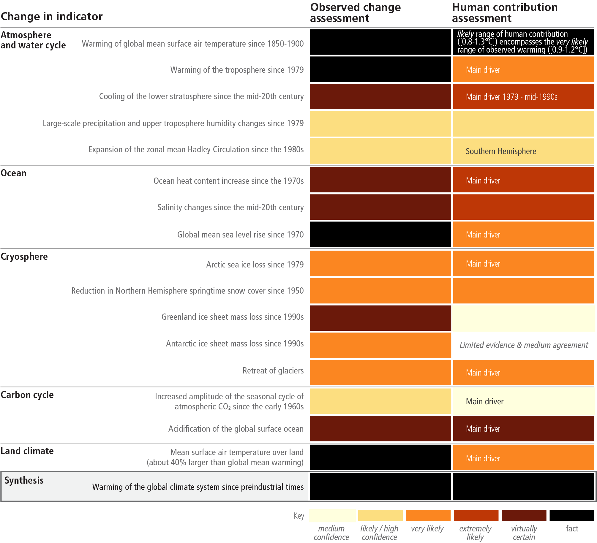
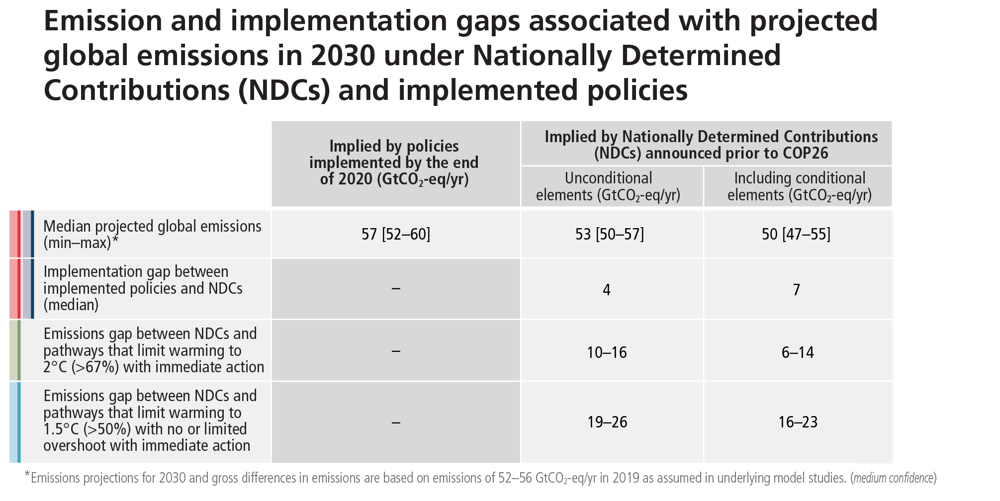

SYR Longer Report


Referencing this report:
IPCC, 2023: Climate Change 2023: Synthesis Report. Contribution of Working Groups I, II and III to the Sixth Assessment Report of the Intergovernmental Panel on Climate Change [Core Writing Team, H. Lee and J. Romero (eds.)]. IPCC, Geneva, Switzerland, 184 pp., doi: 10.59327/IPCC/AR6-9789291691647.
1. Introduction 
This Synthesis Report (SYR) of the IPCC Sixth Assessment Report (AR6) summarises the state of knowledge of climate change, its widespread impacts and risks, and climate change mitigation and adaptation, based on the peer-reviewed scientific, technical and socio-economic literature since the publication of the IPCC’s Fifth Assessment Report (AR5) in 2014.

Section 2: Current Status and Trends
2.1 Observed Changes, Impacts and Attribution
Human activities, principally through emissions of greenhouse gases, have unequivocally caused global warming, with global surface temperature reaching 1.1°C above 1850–1900 in 2011–2020. Global greenhouse gas emissions have continued to increase over 2010–2019, with unequal historical and ongoing contributions arising from unsustainable energy use, land use and land-use change, lifestyles and patterns of consumption and production across regions, between and within countries, and between individuals (high confidence). Human-caused climate change is already affecting many weather and climate extremes in every region across the globe. This has led to widespread adverse impacts on food and water security, human health and on economies and society and related losses and damages 63 to nature and people (high confidence). Vulnerable communities who have historically contributed the least to current climate change are disproportionately affected (high confidence).
2.1.1. Observed Warming and its Causes
Global surface temperature was around 1.1°C above 1850–1900 in 2011–2020 (1.09 [0.95 to 1.20]°C) 64, with larger increases over land (1.59 [1.34 to 1.83]°C) than over the ocean (0.88 [0.68 to 1.01]°C) 65. Observed warming is human- caused, with warming from greenhouse gases (GHG), dominated by CO2 and methane (CH4), partly masked by aerosol cooling (Figure 2.1). Global surface temperature in the first two decades of the 21st century (2001–2020) was 0.99 [0.84 to 1.10]°C higher than 1850–1900. Global surface temperature has increased faster since 1970 than in any other 50-year period over at least the last 2000 years (high confidence). The likely range of total human-caused global surface temperature increase from 1850–1900 to 2010–201966 is 0.8°C to 1.3°C, with a best estimate of 1.07°C. It is likely that well-mixed GHGs 67 contributed a warming of 1.0°C to 2.0°C, and other human drivers (principally aerosols) contributed a cooling of 0.0°C to 0.8°C, natural (solar and volcanic) drivers changed global surface temperature by ±0.1°C and internal variability changed it by ±0.2°C. {WGI SPM A.1, WGI SPM A.1.2, WGI SPM A.1.3, WGI SPM A.2.2, WGI Figure SPM.2 SRCCL TS.2WGI SPM A.1, WGI SPM A.1.2, WGI SPM A.1.3, WGI SPM A.2.2, WGI Figure SPM.2; SRCCL TS.2}
Observed increases in well-mixed GHG concentrations since around 1750 are unequivocally caused by GHG emissions from humanactivities. Land and ocean sinks have taken up a near-constant proportion (globally about 56% per year) of CO2 emissions from humanactivities over the past six decades, with regional differences (high confidence). In 2019, atmospheric CO2 concentrations reached 410 parts per million (ppm), CH4 reached 1866 parts per billion (ppb) and nitrous oxide (N2O) reached 332 ppb68 . Other major contributors to warming aretropospheric ozone (O3) and halogenated gases. Concentrations of CH4 and N2O have increased to levels unprecedented in at least 800,000 years (very high confidence), and there ishigh confidencethat current CO2 concentrations are higher than at any time over at least the past two million years. Since 1750, increases in CO2 (47%) and CH4 (156%) concentrations far exceed – and increases in N2O (23%) are similar to – the natural multi-millennial changes between glacial and interglacialperiods overat least the past 800,000 years (very high confidence). The net cooling effect which arises from anthropogenic aerosols peaked in the late 20th century (high confidence). {WGI SPM A1.1, WGI SPM A1.3, WGI SPM A.2.1, WGI Figure SPM.2, WGI TS 2.2, WGI 2ES, WGI Figure 6.1WGI SPM A1.1, WGI SPM A1.3, WGI SPM A.2.1, WGI Figure SPM.2, WGI TS 2.2, WGI 2ES, WGI Figure 6.1}
Figure 2.1: The causal chain from emissions to resulting warming of the climate system. Emissions of GHG have increased rapidly over recent decades (panel (a)). Global net anthropogenic GHG emissions include CO2 from fossil fuel combustion and industrial processes (CO2-FFI) (dark green); net CO2 from land use, land-use change and forestry (CO 2-LULUCF) (green); CH4; N2O; and fluorinated gases (HFCs, PFCs, SF6, NF3) (light blue). These emissions have led to increases in the atmospheric concentrations of several GHGs including the three major well-mixed GHGs CO2, CH4 and N2O (panel (b) , annual values). To indicate their relative importance each subpanel’s vertical extent for CO 2, CH4 and N2O is scaled to match the assessed individual direct effect (and, in the case of CH4 indirect effect via atmospheric chemistry impacts on tropospheric ozone) of historical emissions on temperature change from 1850–1900 to 2010–2019. This estimate arises from an assessment of effective radiative forcing and climate sensitivity. The global surface temperature (shown as annual anomalies from a 1850–1900 baseline) has increased by around 1.1°C since 1850–1900 (panel (c)). The vertical bar on the right shows the estimated temperature (very likely range) during the warmest multi-century period in at least the last 100,000 years, which occurred around 6500 years ago during the current interglacial period (Holocene). Prior to that, the next most recent warm period was about 125,000 years ago, when the assessed multi-century temperature range [0.5°C to 1.5°C] overlaps the observations of the most recent decade. These past warm periods were caused by slow (multi-millennial) orbital variations. Formal detection and attribution studies synthesise information from climate models and observations and show that the best estimate is that all the warming observed between 1850–1900 and 2010–2019 is caused by humans (panel (d)). The panel shows temperature change attributed to: total human influence; its decomposition into changes in GHG concentrations and other human drivers (aerosols, ozone and land-use change (land-use reflectance)); solar and volcanic drivers; and internal climate variability. Whiskers show likely ranges. {WGI SPM A.2.2, WGI Figure SPM.1, WGI Figure SPM.2, WGI TS2.2, WGI 2.1, WGIII Figure SPM.1, WGIII A.III.II.2.5.1WGI SPM A.2.2, WGI Figure SPM.1, WGI Figure SPM.2, WGI TS2.2, WGI 2.1; WGIII Figure SPM.1, WGIII A.III.II.2.5.1}
Average annual GHG emissions during 2010 –2019 were higher than in any previous decade, but the rate of growth between 2010 and 2019 (1.3% yr-1 ) was lower than that between 2000 and 2009 (2.1% yr-1 ) 69. Historical cumulative net CO2 emissions from 1850 to 2019 were 2400 ±240 GtCO2. Of these, more than half (58%) occurred between 1850 and 1989 [1400 ±195 GtCO2], and about 42% between 1990 and 2019 [1000 ±90 GtCO2]. Global net anthropogenic GHG emissions have been estimated to be 59±6.6 GtCO2-eq in 2019, about 12% (6.5 GtCO2-eq) higher than in 2010 and 54% (21 GtCO2-eq) higher than in 1990. By 2019, the largest growth in gross emissions occurred in CO2 from fossil fuels and industry (CO2-FFI) followed by CH4, whereas the highest relative growth occurred in fluorinated gases (F-gases), starting from low levels in 1990. (high confidence) {WGIII SPM B1.1, WGIII SPM B.1.2, WGIII SPM B.1.3, WGIII Figure SPM.1, WGIII Figure SPM.2WGIII SPM B1.1, WGIII SPM B.1.2, WGIII SPM B.1.3, WGIII Figure SPM.1, WGIII Figure SPM.2}

Figure 2.2: Regional GHG emissions, and the regional proportion of total cumulative production-based CO2 emissions from 1850 to 2019. Panel (a) shows the share of historical cumulative net anthropogenic CO2 emissions per region from 1850 to 2019 in GtCO2. This includes CO2-FFI and CO2-LULUCF. Other GHG emissions are not included. CO2-LULUCF emissions are subject to high uncertainties, reflected by a global uncertainty estimate of ±70% (90% confidence interval). Panel (b) shows the distribution of regional GHG emissions in tonnes CO2-eq per capita by region in 2019. GHG emissions are categorised into: CO2-FFI; net CO2-LULUCF; and other GHG emissions (CH4, N2O, fluorinated gases, expressed in CO2-eq using GWP100-AR6). The height of each rectangle shows per capita emissions, the width shows the population of the region, so that the area of the rectangles refers to the total emissions for each region. Emissions from international aviation and shipping are not included. In the case of two regions, the area for CO2-LULUCF is below the axis, indicating net CO2 removals rather than emissions. Panel (c) shows global net anthropogenic GHG emissions by region (in GtCO2-eq yr –1 (GWP100-AR6)) for the time period 1990–2019. Percentage values refer to the contribution of each region to total GHG emissions in each respective time period. The single-year peak of emissions in 1997 was due to higher CO2-LULUCF emissions from a forest and peat fire event in South East Asia. Regions are as grouped in Annex II of WGIII. Panel (d) shows population, gross domestic product (GDP) per person, emission indicators by region in 2019 for total GHG per person, and total GHG emissions intensity, together with production-based and consumption-based CO2-FFI data, which is assessed in this report up to 2018. Consumption-based emissions are emissions released to the atmosphere in order to generate the goods and services consumed by a certain entity (e.g., region). Emissions from international aviation and shipping are not included. {WGIII Figure SPM.2}WGIII Figure SPM.2
Regional contributions to global human-caused GHG emissions continue to differ widely. Historical contributions of CO2 emissions vary substantially across regions in terms of total magnitude, but also in terms of contributions to CO2-FFI (1650 ± 73 GtCO2-eq) and net CO2-LULUCF (760 ± 220 GtCO2-eq) emissions (Figure 2.2). Variations in regional and national per capita emissions partly reflect different development stages, but they also vary widely at similar income levels. Average per capita net anthropogenic GHG emissions in 2019 ranged from 2.6 tCO2-eq to 19 tCO2-eq across regions (Figure 2.2). Least Developed Countries (LDCs) and Small Island Developing States (SIDS) have much lower per capita emissions (1.7 tCO2-eq and 4.6 tCO2-eq, respectively) than the global average (6.9 tCO2-eq), excluding CO2-LULUCF. Around 48% of the global population in 2019 lives in countries emitting on average more than 6 tCO2-eq per capita, 35% of the global population live in countries emitting more than 9 tCO2-eq per capita 70 (excluding CO2-LULUCF) while another 41% live in countries emitting less than 3 tCO2-eq per capita. A substantial share of the population in these low-emitting countries lack access to modern energy services. (high confidence) {WGIII SPM B.3, WGIII SPM B3.1, WGIII SPM B.3.2, WGIII SPM B.3.3WGIII SPM B.3, WGIII SPM B3.1, WGIII SPM B.3.2, WGIII SPM B.3.3}
Net GHG emissions have increased since 2010 across all major sectors (high confidence). In 2019, approximately 34% (20 GtCO2-eq) of net global GHG emissions came from the energy sector, 24% (14 GtCO2-eq) from industry, 22% (13 GtCO2-eq) from AFOLU, 15% (8.7 GtCO2-eq) from transport and 6% (3.3 GtCO2-eq) from buildings 71 (high confidence). Average annual GHG emissions growth between 2010 and 2019 slowed compared to the previous decade in energy supply (from 2.3% to 1.0%) and industry (from 3.4% to 1.4%) but remained roughly constant at about 2% yr –1 in the transport sector (high confidence). About half of total net AFOLU emissions are from CO2LULUCF, predominantly from deforestation (medium confidence). Land overall constituted a net sink of –6.6 (±4.6) GtCO2 yr –1 for the period 2010–201972 (medium confidence). {WGIII SPM B.2, WGIII SPM B.2.1, WGIII SPM B.2.2, WGIII TS 5.6.1WGIII SPM B.2, WGIII SPM B.2.1, WGIII SPM B.2.2, WGIII TS 5.6.1}.
Human-caused climate change is a consequence of more than a century of net GHG emissions from energy use, land-use and land use change, lifestyle and patterns of consumption, and production. Emissions reductions in CO2 from fossil fuels and industrial processes (CO2-FFI), due to improvements in energy intensity of GDP and carbon intensity of energy, have been less than emissions increases from rising global activity levels in industry, energy supply, transport, agriculture and buildings. The 10% of households with the highest per capita emissions contribute 34–45% of global consumption-based household GHG emissions, while the middle 40% contribute 40–53%, and the bottom 50% contribute 13–15%. An increasing share of emissions can be attributed to urban areas (a rise from about 62% to 67–72% of the global share between 2015 and 2020). The drivers of urban GHG emissions 73 are complex and include population size, income, state of urbanisation and urban form. (high confidence) {WGIII SPM B.2, WGIII SPM B.2.3, WGIII SPM B.3.4, WGIII SPM D.1.1WGIII SPM B.2, WGIII SPM B.2.3, WGIII SPM B.3.4, WGIII SPM D.1.1}
2.1.2. Observed Climate System Changes and Impacts to Date
It is unequivocal that human influence has warmed the atmosphere, ocean and land. Widespread and rapid changes in the atmosphere, ocean, cryosphere and biosphere have occurred (Table 2.1). The scale of recent changes across the climate system as a whole and the present state of many aspects of the climate system are unprecedented over many centuries to many thousands of years. It is very likely that GHG emissions were the main driver 74 of tropospheric warming and extremely likely that human-caused stratospheric ozone depletion was the main driver of stratospheric cooling between 1979 and the mid-1990s. It is virtually certain that the global upper ocean (0-700m) has warmed since the 1970s and extremely likely that human influence is the main driver. Ocean warming accounted for 91% of the heating in the climate system, with land warming, ice loss and atmospheric warming accounting for about 5%, 3% and 1%, respectively (high confidence). Global mean sea level increased by 0.20 [0.15 to 0.25] m between 1901 and 2018. The average rate of sea level rise was 1.3 [0.6 to 2.1]mm yr -1 between 1901 and 1971, increasing to 1.9 [0.8 to 2.9] mm yr -1 between 1971 and 2006, and further increasing to 3.7 [3.2 to –4.2] mm yr -1 between 2006 and 2018 (high confidence). Human influence was very likely the main driver of these increases since at least 1971 (Figure 3.4). Human influence is very likely the main driver of the global retreat of glaciers since the 1990s and the decrease in Arctic sea ice area between 1979–1988 and 2010–2019. Human influence has also very likely contributed to decreased Northern Hemisphere spring snow cover and surface melting of the Greenland ice sheet. It is virtually certain that human-caused CO2 emissions are the main driver of current global acidification of the surface open ocean.{WGI SPM A.1, . WGI SPM A.1.3, WGI SPM A.1.5, WGI SPM A.1.6, WG1 SPM A1.7, WGI SPM A.2, WG1.SPM A.4.2, SROCC SPM.A.1, SROCC SPM A.2WGI SPM A.1, . WGI SPM A.1.3, WGI SPM A.1.5, WGI SPM A.1.6, WG1 SPM A1.7, WGI SPM A.2, WG1.SPM A.4.2; SROCC SPM.A.1, SROCC SPM A.2}
Table 2.1: Assessment of observed changes in large-scale indicators of mean climate across climate system components, and their attribution to human influence. The colour coding indicates the assessed confidence in / likelihood 76 of the observed change and the human contribution as a driver or main driver (specified in that case) where available (see colour key). Otherwise, explanatory text is provided. {WGI Table TS.1WGI Table TS.1}
Human-caused climate change is already affecting many weather and climate extremes in every region across the globe. Evidence of observed changes in extremes such as heatwaves, heavy precipitation, droughts, and tropical cyclones, and, in particular, their attribution to human influence, has strengthened since AR5 (Figure 2.3). It is virtually certain that hot extremes (including heatwaves) have become more frequent and more intense across most land regions since the 1950s (Figure 2.3), while cold extremes (including cold waves) have become less frequent and less severe, with high confidence that human-caused climate change is the main driver of these changes. Marine heatwaves have approximately doubled in frequency since the 1980s (high confidence), and human influence has very likely contributed to most of them since at least 2006. The frequency and intensity of heavy precipitation events have increased since the 1950s over most land areas for which observational data are sufficient for trend analysis (high confidence), and human-caused climate change is likely the main driver (Figure 2.3). Human-caused climate change has contributed to increases in agricultural and ecological droughts in some regions due to increased land evapotranspiration (medium confidence) (Figure 2.3). It is likely that the global proportion of major (Category 3–5) tropical cyclone occurrence has increased over the last four decades. {WGI SPM A.3, WGI SPM A3.1, WGI SPM A3.2 WGI SPM A3.4 SRCCL SPM.A.2.2 SROCC SPM. A.2WGI SPM A.3, WGI SPM A3.1, WGI SPM A3.2; WGI SPM A3.4; SRCCL SPM.A.2.2; SROCC SPM. A.2}


Figure 2.3: Both vulnerability to current climate extremes and historical contribution to climate change are highly heterogeneous with many of those who have least contributed to climate change to date being most vulnerable to its impacts. Panel (a) The IPCC AR6 WGI inhabited regions are displayed as hexagons with identical size in their approximate geographical location (see legend for regional acronyms). All assessments are made for each region as a whole and for the 1950s to the present. Assessments made on different time scales or more local spatial scales might differ from what is shown in the figure. The colours in each panel represent the four outcomes of the assessment on observed changes. Striped hexagons (white and light-grey) are used where there is low agreement in the type of change for the region as a whole, and grey hexagons are used when there is limited data and/or literature that prevents an assessment of the region as a whole. Other colours indicate at least medium confidence in the observed change. The confidence level for the human influence on these observed changes is based on assessing trend detection and attribution and event attribution literature, and it is indicated by the number of dots: three dots for high confidence, two dots for medium confidence and one dot for low confidence (single, filled dot: limited agreemen t; single, empty dot: limited evidence). For hot extremes, the evidence is mostly drawn from changes in metrics based on daily maximum temperatures; regional studies using other indices (heatwave duration, frequency and intensity) are used in addition. For heavy precipitation, the evidence is mostly drawn from changes in indices based on one-day or five-day precipitation amounts using global and regional studies. Agricultural and ecological droughts are assessed based on observed and simulated changes in total column soil moisture, complemented by evidence on changes in surface soil moisture, water balance ( precipitation minus evapotranspiration) and indices driven by precipitation and atmospheric evaporative demand. Panel (b) shows the average level of vulnerability amongst a country’s population against 2019 CO2-FFI emissions per- capita per country for the 180 countries for which both sets of metrics are available. Vulnerability information is based on two global indicator systems, namely INFORM and World Risk Index. Countries with a relatively low average vulnerability often have groups with high vulnerability within their population and vice versa. The underlying data includes, for example, information on poverty, inequality, health care infrastructure or insurance coverage. Panel (c) Observed impacts on ecosystems and human systems attributed to climate change at global and regional scales. Global assessments focus on large studies, multi-species, meta-analyses and large reviews. Regional assessments consider evidence on impacts across an entire region and do not focus on any country in particular. For human systems, the direction of impacts is assessed and both adverse and positive impacts have been observed e.g., adverse impacts in one area or food item may occur with positive impacts in another area or food item (for more details and methodology see WGII SMTS.1). Physical water availability includes balance of water available from various sources including ground water, water quality and demand for water. Global mental health and displacement assessments reflect only assessed regions. Confidence levels reflect the assessment of attribution of the observed impact to climate change. {WGI Figure SPM.3, Table TS.5, Interactive Atlas; WGII Figure SPM.2, WGII SMTS.1, WGII 8.3.1, Figure 8.5; ; WGIII 2.2.3}WGI Figure SPM.3, Table TS.5, Interactive Atlas, WGII Figure SPM.2, WGII SMTS.1, WGII 8.3.1, Figure 8.5 WGIII 2.2.3
Climate change has caused substantial damages, and increasingly irreversible75 losses, in terrestrial, freshwater, cryospheric and coastal and open ocean ecosystems (high confidence). The extent and magnitude of climate change impacts are larger than estimated in previous assessments (high confidence). Approximately half of the species assessed globally have shifted polewards or, on land, also to higher elevations (very high confidence). Biological responses including changes in geographic placement and shifting seasonal timing are often not sufficient to cope with recent climate change. (very high confidence). Hundreds of local losses of species have been driven by increases in the magnitude of heat extremes (high confidence) and mass mortality events on land and in the ocean (very high confidence). Impacts on some ecosystems are approaching irreversibility such as the impacts of hydrological changes resulting from the retreat of glaciers, or the changes in some mountain (medium confidence) and Arctic ecosystems driven by permafrost thaw (high confidence). Impacts in ecosystems from slow-onset processes such as ocean acidification, sea level rise or regional decreases in precipitation have also been attributed to human-caused climate change (high confidence). Climate change has contributed to desertification and exacerbated land degradation, particularly in low lying coastal areas, river deltas, drylands and in permafrost areas (high confidence). Nearly 50% of coastal wetlands have been lost over the last 100 years, as a result of the combined effects of localised human pressures, sea level rise, warming and extreme climate events (high confidence). {WGII SPM B.1.1, WGII SPM B.1.2, WGII Figure SPM.2.A, WGII TS.B.1, SRCCL SPM A.1.5, SRCCL SPM A.2, SRCCL SPM A.2.6, SRCCL Figure SPM.1, SROCC SPM A.6.1, SROCC SPM, A.6.4, SROCC SPM A.7WGII SPM B.1.1, WGII SPM B.1.2, WGII Figure SPM.2.A, WGII TS.B.1; SRCCL SPM A.1.5, SRCCL SPM A.2, SRCCL SPM A.2.6, SRCCL Figure SPM.1; SROCC SPM A.6.1, SROCC SPM, A.6.4, SROCC SPM A.7}.
Climate change has reduced food security and affected water security due to warming, changing precipitation patterns, reduction and loss of cryospheric elements, and greater frequency and intensity of climatic extremes, thereby hindering efforts to meet Sustainable Development Goals (high confidence). Although overall agricultural productivity has increased, climate change has slowed this growth in agricultural productivity over the past 50 years globally (medium confidence), with related negative crop yield impacts mainly recorded in mid- and low latitude regions, and some positive impacts in some high latitude regions (high confidence). Ocean warming in the 20th century and beyond has contributed to an overall decrease in maximum catch potential (medium confidence), compounding the impacts from overfishing for some fish stocks (high confidence). Ocean warming and ocean acidification have adversely affected food production from shellfish aquaculture and fisheries in some oceanic regions (high confidence). Current levels of global warming are associated with moderate risks from increased dryland water scarcity (high confidence). Roughly half of the world’s population currently experiences severe water scarcity for at least some part of the year due to a combination of climatic and non-climatic drivers (medium confidence) (Figure 2.3). Unsustainable agricultural expansion, driven in part by unbalanced diets 77 , increases ecosystem and human vulnerability and leads to competition for land and/or water resources (high confidence). Increasing weather and climate extreme events have exposed millions of people to acute food insecurity 78 and reduced water security, with the largest impacts observed in many locations and/or communities in Africa, Asia, Central and South America, LDCs, Small Islands and the Arctic, and for small-scale food producers, low-income households and Indigenous Peoples globally (high confidence). {WGII SPM B.1.3, WGII SPM.B.2.3, WGII Figure SPM.2, WGII TS B.2.3, WGII TS Figure TS. 6, SRCCL SPM A.2.8, SRCCL SPM A.5.3, SROCC SPM A.5.4., SROCC SPMA.7.1, SROCC SPM A.8.1, SROCC Figure SPM.2WGII SPM B.1.3, WGII SPM.B.2.3, WGII Figure SPM.2, WGII TS B.2.3, WGII TS Figure TS. 6; SRCCL SPM A.2.8, SRCCL SPM A.5.3; SROCC SPM A.5.4., SROCC SPMA.7.1, SROCC SPM A.8.1, SROCC Figure SPM.2}.
In urban settings, climate change has caused adverse impacts on human health, livelihoods and key infrastructure (high confidence) . Hot extremes including heatwaves have intensified in cities (high confidence), where they have also worsened air pollution events. (medium confidence) and limited functioning of key infrastructure (high confidence). Urban infrastructure, including transportation, water, sanitation and energy systems have been compromised by extreme and slow-onset events 79 , with resulting economic losses, disruptions of services and impacts to well-being (high confidence). Observed impacts are concentrated amongst economically and socially marginalised urban residents, e.g., those living in informal settlements. (high confidence). Cities intensify human-caused warming locally (very high confidence), while urbanisation also increases mean and heavy precipitation over and/or downwind of cities (medium confidence) and resulting runoff intensity (high confidence). {WGI SPM C.2.6, WGII SPM B.1.5, WGII Figure TS.9, WGII 6 ESWGI SPM C.2.6; WGII SPM B.1.5, WGII Figure TS.9, WGII 6 ES}
Climate change has adversely affected human physical health globally and mental health in assessed regions (very high confidence), and is contributing to humanitarian crises where climate hazards interact with high vulnerability (high confidence). In all regions increases in extreme heat events have resulted in human mortality and morbidity (very high confidence). The occurrence of climate-related food-borne and water-borne diseases has increased (very high confidence). The incidence of vector-borne diseases has increased from range expansion and/or increased reproduction of disease vectors (high confidence). Animal and human diseases, including zoonoses, are emerging in new areas (high confidence). In assessed regions, some mental health challenges are associated with increasing temperatures (high confidence), trauma from extreme events (very high confidence), and loss of livelihoods and culture (high confidence). (Figure 2.3). Climate change impacts on health are mediated through natural and human systems, including economic and social conditions and disruptions (high confidence). Climate and weather extremes are increasingly driving displacement in Africa, Asia, North America (high confidence), and Central and South America. (medium confidence). (Figure 2.3), with small island states in the Caribbean and South Pacific being disproportionately affected relative to their small population size (high confidence). Through displacement and involuntary migration from extreme weather and climate events, climate change has generated and perpetuated vulnerability (medium confidence). {WGII SPM B.1.4, WGII SPM B.1.7WGII SPM B.1.4, WGII SPM B.1.7}
Human influence has likely increased the chance of compound extreme events80 since the 1950s. Concurrent and repeated climate hazards have occurred in all regions, increasing impacts and risks to health, ecosystems, infrastructure, livelihoods and food (high confidence). Compound extreme events include increases in the frequency of concurrent heatwaves and droughts (high confidence); fire weather in some regions (medium confidence); and compound flooding in some locations (medium confidence). Multiple risks interact, generating new sources of vulnerability to climate hazards, and compounding overall risk (high confidence). Compound climate hazards can overwhelm adaptive capacity and substantially increase damage (high confidence). {WGI SPM A.3.5, WGII SPM. B.5.1, WGII TS.C.11.3WGI SPM A.3.5; WGII SPM. B.5.1, WGII TS.C.11.3}
Economic impacts attributable to climate change are increasingly affecting peoples’ livelihoods and are causing economic and societal impacts across national boundaries (high confidence) . Economic damages from climate change have been detected in climate-exposed sectors, with regional effects to agriculture, forestry, fishery, energy, and tourism, and through outdoor labour productivity (high confidence) with some exceptions of positive impacts in regions with low energy demand and comparative advantages in agricultural markets and tourism. (high confidence). Individual livelihoods have been affected through changes in agricultural productivity, impacts on human health and food security, destruction of homes and infrastructure, and loss of property and income, with adverse effects on gender and social equity (high confidence). Tropical cyclones have reduced economic growth in the short-term (high confidence). Event attribution studies and physical understanding indicate that human-caused climate change increases heavy precipitation associated with tropical cyclones (high confidence). Wildfires in many regions have affected built assets, economic activity, and health (medium to high confidence). In cities and settlements, climate impacts to key infrastructure are leading to losses and damages across water and food systems, and affect economic activity, with impacts extending beyond the area directly impacted by the climate hazard. (high confidence). {WGI SPM A.3.4, WGII SPM B.1.6, WGII SPM B.5.2, WGII SPM B.5.3WGI SPM A.3.4; WGII SPM B.1.6, WGII SPM B.5.2, WGII SPM B.5.3}.
Climate change has caused widespread adverse impacts and related losses and damages to nature and people (high confidence). Losses and damages are unequally distributed across systems, regions and sectors (high confidence). Cultural losses, related to tangible and intangible heritage, threaten adaptive capacity and may result in irrevocable losses of sense of belonging, valued cultural practices, identity and home, particularly for Indigenous Peoples and those more directly reliant on the environment for subsistence. (medium confidence). For example, changes in snow cover, lake and river ice, and permafrost in many Arctic regions, are harming the livelihoods and cultural identity of Arctic residents including Indigenous populations (high confidence). Infrastructure, including transportation, water, sanitation and energy systems have been compromised by extreme and slow-onset events, with resulting economic losses, disruptions of services and impacts to well-being (high confidence). {WGII SPM B.1, WGII SPM B.1.2, WGII SPM.B.1.5, WGII SPM C.3.5, WGII TS.B.1.6 SROCC SPM A.7.1WGII SPM B.1, WGII SPM B.1.2, WGII SPM.B.1.5, WGII SPM C.3.5, WGII TS.B.1.6; SROCC SPM A.7.1}
Across sectors and regions, the most vulnerable people and systems have been disproportionately affected by the impacts of climate change (high confidence). LDCs and SIDS who have much lower per capita emissions (1.7 tCO2-eq, 4.6 tCO2-eq, respectively) than the global average (6.9 tCO2-eq) excluding CO2-LULUCF, also have high vulnerability to climatic hazards, with global hotspots of high human vulnerability observed in West-, Central- and East Africa, South Asia, Central and South America, SIDS and the Arctic (high confidence). Regions and people with considerable development constraints have high vulnerability to climatic hazards (high confidence). Vulnerability is higher in locations with poverty, governance challenges and limited access to basic services and resources, violent conflict and high levels of climate-sensitive livelihoods (e.g., smallholder farmers, pastoralists, fishing communities) (high confidence). Vulnerability at different spatial levels is exacerbated by inequity and marginalisation linked to gender, ethnicity, low income or combinations thereof (high confidence), especially for many Indigenous Peoples and local communities (high confidence). Approximately 3.3 to 3.6 billion people live in contexts that are highly vulnerable to climate change (high confidence). Between 2010 and 2020, human mortality from floods, droughts and storms was 15 times higher in highly vulnerable regions, compared to regions with very low vulnerability (high confidence). In the Arctic and in some high mountain regions, negative impacts of cryosphere change have been especially felt among Indigenous Peoples (high confidence). Human and ecosystem vulnerability are interdependent (high confidence). Vulnerability of ecosystems and people to climate change differs substantially among and within regions (very high confidence), driven by patterns of intersecting socio-economic development, unsustainable ocean and land use, inequity, marginalisation, historical and ongoing patterns of inequity such as colonialism, and governance 81 (high confidence). {WGII SPM B.1, WGII SPM B.2, WGII SPM B.2.4, WGIII SPM B.3.1, SROCC SPM A.7.1, SROCC SPM A.7.2WGII SPM B.1, WGII SPM B.2, WGII SPM B.2.4; WGIII SPM B.3.1; SROCC SPM A.7.1, SROCC SPM A.7.2}
2.2 Responses Undertaken to Date
International climate agreements, rising national ambitions for climate action, along with rising public awareness are accelerating efforts to address climate change at multiple levels of governance. Mitigation policies have contributed to a decrease in global energy and carbon intensity, with several countries achieving GHG emission reductions for over a decade. Low-emission technologies are becoming more affordable, with many low or zero emissions options now available for energy, buildings, transport, and industry. Adaptation planning and implementation progress has generated multiple benefits, with effective adaptation options having the potential to reduce climate risks and contribute to sustainable development. Global tracked finance for mitigation and adaptation has seen an upward trend since AR5, but falls short of needs. (high confidence)
2.2.1. Global Policy Setting
The United Nations Framework Convention on Climate Change ( UNFCCC), Kyoto Protocol, and Paris Agreement are supporting rising levels of national ambition and encouraging the development and implementation of climate policies at multiple levels of governance (high confidence). The Kyoto Protocol led to reduced emissions in some countries and was instrumental in building national and international capacity for GHG reporting, accounting and emissions markets (high confidence). The Paris Agreement, adopted under the UNFCCC, with near universal participation, has led to policy development and target-setting at national and sub-national levels, particularly in relation to mitigation but also for adaptation, as well as enhanced transparency of climate action and support (medium confidence). Nationally Determined Contributions (NDCs), required under the Paris Agreement, have required countries to articulate their priorities and ambition with respect to climate action. {WGII 17.4, WGII TS D.1.1, WGIII SPM B.5.1, WGIII SPM E.6WGII 17.4, WGII TS D.1.1; WGIII SPM B.5.1, WGIII SPM E.6}
Loss & Damage 82 was formally recognized in 2013 through establishment of the Warsaw International Mechanism on Loss and Damage (WIM), and in 2015, Article 8 of the Paris Agreement provided a legal basis for the WIM. There is improved understanding of both economic and non-economic losses and damages, which is informing international climate policy and which has highlighted that losses and damages are not comprehensively addressed by current financial, governance and institutional arrangements, particularly in vulnerable developing countries (high confidence).{WGII SPM C.3.5, WGII Cross-Chapter Box LOSSWGII SPM C.3.5, WGII Cross-Chapter Box LOSS}
Other recent global agreements that influence responses to climate change include the Sendai Framework for Disaster Risk Reduction (2015-2030), the finance-oriented Addis Ababa Action Agenda (2015) and the New Urban Agenda (2016), and the Kigali Amendment to the Montreal Protocol on Substances that Deplete the Ozone Layer (2016), among others. In addition, the 2030 Agenda for Sustainable Development, adopted in 2015 by UN member states, sets out 17 Sustainable Development Goals (SDGs) and seeks to align efforts globally to prioritise ending extreme poverty, protect the planet and promote more peaceful, prosperous and inclusive societies. If achieved, these agreements would reduce climate change, and the impacts on health, well-being, migration, and conflict, among others (very high confidence). {WGII TS.A.1, WGII 7 ESWGII TS.A.1, WGII 7 ES}
Since AR5, rising public awareness and an increasing diversity of actors, have overall helped accelerate political commitment and global efforts to address climate change (medium confidence). Mass social movements have emerged as catalysing agents in some regions, often building on prior movements including Indigenous Peoples-led movements, youth movements, human rights movements, gender activism, and climate litigation, which is raising awareness and, in some cases, has influenced the outcome and ambition of climate governance. (medium confidence). Engaging Indigenous Peoples and local communities using just-transition and rights-based decision-making approaches, implemented through collective and participatory decision-making processes has enabled deeper ambition and accelerated action in different ways, and at all scales, depending on national circumstances (medium confidence). The media helps shape the public discourse about climate change. This can usefully build public support to accelerate climate action (medium evidence, high agreement ). In some instances, public discourses of media and organised counter movements have impeded climate action, exacerbating helplessness and disinformation and fuelling polarisation, with negative implications for climate action (medium confidence). {WGII SPM C.5.1, WGII SPM D.2, WGII TS.D.9, WGII TS.D.9.7, WGII TS.E.2.1, WGII 18.4, WGIII SPM D.3.3, WGIII SPM E.3.3, WGIII TS.6.1, WGIII 6.7, WGIII 13 ES, WGIII Box.13.7WGII SPM C.5.1, WGII SPM D.2, WGII TS.D.9, WGII TS.D.9.7, WGII TS.E.2.1, WGII 18.4; WGIII SPM D.3.3, WGIII SPM E.3.3, WGIII TS.6.1, WGIII 6.7, WGIII 13 ES, WGIII Box.13.7}
2.2.2. Mitigation Actions to Date
There has been a consistent expansion of policies and laws addressing mitigation since AR5 (high confidence). Climate governance supports mitigation by providing frameworks through which diverse actors interact, and a basis for policy development and implementation (medium confidence). Many regulatory and economic instruments have already been deployed successfully (high confidence). By 2020, laws primarily focussed on reducing GHG emissions existed in 56 countries covering 53% of global emissions (medium confidence). The application of diverse policy instruments for mitigation at the national and sub-national levels has grown consistently across a range of sectors. (high confidence). Policy coverage is uneven across sectors and remains limited for emissions from agriculture, and from industrial materials and feedstocks (high confidence). {WGIII SPM B.5, WGIII SPM B.5.2, WGIII SPM E.3, WGIII SPM E.4WGIII SPM B.5, WGIII SPM B.5.2, WGIII SPM E.3, WGIII SPM E.4}
Practical experience has informed economic instrument design and helped to improve predictability, environmental effectiveness, economic efficiency, alignment with distributional goals, and social acceptance (high confidence). Low-emission technological innovation is strengthened through the combination of technology-push policies, together with policies that create incentives for behaviour change and market opportunities. (high confidence). (Section 4.8.3). Comprehensive and consistent policy packages have been found to be more effective than single policies (high confidence). Combining mitigation with policies to shift development pathways, policies that induce lifestyle or behaviour changes, for example, measures promoting walkable urban areas combined with electrification and renewable energy can create health co-benefits from cleaner air and enhanced active mobility (high confidence). Climate governance enables mitigation by providing an overall direction, setting targets, mainstreaming climate action across policy domains and levels, based on national circumstances and in the context of international cooperation. Effective governance enhances regulatory certainty, creating specialised organisations and creating the context to mobilise finance (medium confidence). These functions can be promoted by climate-relevant laws, which are growing in number, or climate strategies, among others, based on national and sub-national context (medium confidence). Effective and equitable climate governance builds on engagement with civil society actors, political actors, businesses, youth, labour, media, Indigenous Peoples and local communities (medium confidence). {WGIII SPM E.2.2, WGIII SPM E.3, WGIII SPM E.3.1, WGIII SPM E.4.2, WGIII SPM E.4.3, WGIII SPM E.4.4WGIII SPM E.2.2, WGIII SPM E.3, WGIII SPM E.3.1, WGIII SPM E.4.2, WGIII SPM E.4.3, WGIII SPM E.4.4}
The unit costs of several low-emission technologies, including solar, wind and lithium-ion batteries, have fallen consistently since 2010 (Figure 2.4). Design and process innovations in combination with the use of digital technologies have led to near-commercial availability of many low or zero emissions options in buildings, transport and industry. From 2010-2019, there have been sustained decreases in the unit costs of solar energy (by 85%), wind energy (by 55%), and lithium-ion batteries (by 85%), and large increases in their deployment, e.g., >10× for solar and >100× for electric vehicles (EVs), albeit varying widely across regions (Figure 2.4). Electricity from PV and wind is now cheaper than electricity from fossil sources in many regions, electric vehicles are increasingly competitive with internal combustion engines, and large-scale battery storage on electricity grids is increasingly viable. In comparison to modular small-unit size technologies, the empirical record shows that multiple large-scale mitigation technologies, with fewer opportunities for learning, have seen minimal cost reductions and their adoption has grown slowly. Maintaining emission-intensive systems may, in some regions and sectors, be more expensive than transitioning to low emission systems. (high confidence) {WGIII SPM B.4, WGIII SPM B.4.1, WGIII SPM C.4.2, WGIII SPM C.5.2, WGIII SPM C.7.2, WGIII SPM C.8, WGIII Figure SPM.3, WGIII Figure SPM.3WGIII SPM B.4, WGIII SPM B.4.1, WGIII SPM C.4.2, WGIII SPM C.5.2, WGIII SPM C.7.2, WGIII SPM C.8, WGIII Figure SPM.3, WGIII Figure SPM.3}
For almost all basic materials – primary metals, building materials and chemicals – many low- to zero-GHG intensity production processes are at the pilot to near-commercial and in some cases commercial stage but they are not yet established industrial practice. Integrated design in construction and retrofit of buildings has led to increasing examples of zero energy or zero carbon buildings. Technological innovation made possible the widespread adoption of LED lighting. Digital technologies including sensors, the internet of things, robotics, and artificial intelligence can improve energy management in all sectors; they can increase energy efficiency, and promote the adoption of many low-emission technologies, including decentralised renewable energy, while creating economic opportunities. However, some of these climate change mitigation gains can be reduced or counterbalanced by growth in demand for goods and services due to the use of digital devices. Several mitigation options, notably solar energy, wind energy, electrification of urban systems, urban green infrastructure, energy efficiency, demand side management, improved forest- and crop/grassland management, and reduced food waste and loss, are technically viable, are becoming increasingly cost effective and are generally supported by the public, and this enables expanded deployment in many regions. (high confidence) {WGIII SPM B.4.3, WGIII SPM C.5.2, WGIII SPM C.7.2, WGIII SPM E.1.1, WGIII TS.6.5WGIII SPM B.4.3, WGIII SPM C.5.2, WGIII SPM C.7.2, WGIII SPM E.1.1, WGIII TS.6.5}
The magnitude of global climate finance flows has increased and financing channels have broadened (high confidence). Annual tracked total financial flows for climate mitigation and adaptation increased by up to 60% between 2013/14 and 2019/20, but average growth has slowed since 2018 (medium confidence).and most climate finance stays within national borders (high confidence). Markets for green bonds, environmental, social and governance and sustainable finance products have expanded significantly since AR5 (high confidence). Investors, central banks, and financial regulators are driving increased awareness of climate risk to support climate policy development and implementation (high confidence). Accelerated international financial cooperation is a critical enabler of low-GHG and just transitions (high confidence).{WGIII SPM B.5.4, WGIII SPM E.5, WGIII TS.6.3, WGIII TS.6.4WGIII SPM B.5.4, WGIII SPM E.5, WGIII TS.6.3, WGIII TS.6.4}
Economic instruments have been effective in reducing emissions, complemented by regulatory instruments mainly at the national and also sub-national and regional level (high confidence). By 2020, over 20% of global GHG emissions were covered by carbon taxes or emissions trading systems, although coverage and prices have been insufficient to achieve deep reductions (medium confidence). Equity and distributional impacts of carbon pricing instruments can be addressed by using revenue from carbon taxes or emissions trading to support low-income households, among other approaches. (high confidence). The mix of policy instruments which reduced costs and stimulated adoption of solar energy, wind energy and lithium-ion batteries includes public R&D, funding for demonstration and pilot projects, and demand-pull instruments such as deployment subsidies to attain scale (high confidence) (Figure 2.4). {WGIII SPM B.4.1, WGIII SPM B.5.2, WGIII SPM E.4.2, WGIII TS.3WGIII SPM B.4.1, WGIII SPM B.5.2, WGIII SPM E.4.2, WGIII TS.3}

Figure 2.4: Unit cost reductions and use in some rapidly changing mitigation technologies. The top panel (a) shows global costs per unit of energy (USD per MWh) for some rapidly changing mitigation technologies. Solid blue lines indicate average unit cost in each year. Light blue shaded areas show the range between the 5th and 95th percentiles in each year. Yellow shading indicates the range of unit costs for new fossil fuel (coal and gas) power in 2020 (corresponding to USD 55 to 148 per MWh). In 2020, the levelised costs of energy (LCOE) of the three renewable energy technologies could compete with fossil fuels in many places. For batteries, costs shown are for 1 kWh of battery storage capacity; for the others, costs are LCOE, which includes installation, capital, operations, and maintenance costs per MWh of electricity produced. The literature uses LCOE because it allows consistent comparisons of cost trends across a diverse set of energy technologies to be made. However, it does not include the costs of grid integration or climate impacts. Further, LCOE does not take into account other environmental and social externalities that may modify the overall (monetary and non-monetary) costs of technologies and alter their deployment. The bottom panel (b) shows cumulative global adoption for each technology, in GW of installed capacity for renewable energy and in millions of vehicles for battery-electric vehicles. A vertical dashed line is placed in 2010 to indicate the change over the past decade. The electricity production share reflects different capacity factors; for example, for the same amount of installed capacity, wind produces about twice as much electricity as solar PV. Renewable energy and battery technologies were selected as illustrative examples because they have recently shown rapid changes in costs and adoption, and because consistent data are available. Other mitigation options assessed in the WGIII report are not included as they do not meet these criteria. {WGIII Figure SPM.3, WGIII 2.5, 6.4WGIII Figure SPM.3, WGIII 2.5, 6.4}
Mitigation actions, supported by policies, have contributed to a decrease in global energy and carbon intensity between 2010 and 2019, with a growing number of countries achieving absolute GHG emission reductions for more than a decade (high confidence). While global net GHG emissions have increased since 2010, global energy intensity (total primary energy per unit GDP) decreased by 2% yr –1 between 2010 and 2019. Global carbon intensity (CO2-FFI per unit primary energy) also decreased by 0.3% yr –1, mainly due to fuel switching from coal to gas, reduced expansion of coal capacity, and increased use of renewables, and with large regional variations over the same period. In many countries, policies have enhanced energy efficiency, reduced rates of deforestation and accelerated technology deployment, leading to avoided and in some cases reduced or removed emissions (high confidence). At least 18 countries have sustained production-based CO2 and GHG and consumption-based CO2 absolute emission reductions for longer than 10 years since 2005 through energy supply decarbonization, energy efficiency gains, and energy demand reduction, which resulted from both policies and changes in economic structure. (high confidence). Some countries have reduced production-based GHG emissions by a third or more since peaking, and some have achieved reduction rates of around 4% yr –1 for several years consecutively (high confidence). Multiple lines of evidence suggest that mitigation policies have led to avoided global emissions of several GtCO2-eq yr –1 (medium confidence). At least 1.8 GtCO2-eq yr –1 of avoided emissions can be accounted for by aggregating separate estimates for the effects of economic and regulatory instruments (medium confidence). Growing numbers of laws and executive orders have impacted global emissions and are estimated to have resulted in 5.9 GtCO2-eq yr –1 of avoided emissions in 2016 (medium confidence). These reductions have only partly offset global emissions growth (high confidence). {WGIII SPM B.1, WGIII SPM B.2.4, WGIII SPM B.3.5, WGIII SPM B.5.1, WGIII SPM B.5.3, WGIII 1.3.2, WGIII 2.2.3WGIII SPM B.1, WGIII SPM B.2.4, WGIII SPM B.3.5, WGIII SPM B.5.1, WGIII SPM B.5.3, WGIII 1.3.2, WGIII 2.2.3}
2.2.3. Adaptation Actions to Date
Progress in adaptation planning and implementation has been observed across all sectors and regions, generating multiple benefits (very high confidence). The ambition, scope and progress on adaptation have risen among governments at the local, national and international levels, along with businesses, communities and civil society (high confidence). Various tools, measures and processes are available that can enable, accelerate and sustain adaptation implementation (high confidence). Growing public and political awareness of climate impacts and risks has resulted in at least 170 countries and many cities including adaptation in their climate policies and planning processes (high confidence). Decision support tools and climate services are increasingly being used (very high confidence) and pilot projects and local experiments are being implemented in different sectors (high confidence). {WGII SPM C.1, WGII SPM.C.1.1, WGII TS.D.1.3, WGII TS.D.10WGII SPM C.1, WGII SPM.C.1.1, WGII TS.D.1.3, WGII TS.D.10}
Adaptation to water-related risks and impacts make up the majority (~60%) of all documented 83 adaptation. (high confidence). A large number of these adaptation responses are in the agriculture sector and these include on-farm water management, water storage, soil moisture conservation, and irrigation. Other adaptations in agriculture include cultivar improvements, agroforestry, community-based adaptation and farm and landscape diversification among others (high confidence). For inland flooding, combinations of non-structural measures like early warning systems, enhancing natural water retention such as by restoring wetlands and rivers, and land use planning such as no build zones or upstream forest management, can reduce flood risk (medium confidence). Some land-related adaptation actions such as sustainable food production, improved and sustainable forest management, soil organic carbon management, ecosystem conservation and land restoration, reduced deforestation and degradation, and reduced food loss and waste are being undertaken, and can have mitigation co-benefits (high confidence). Adaptation actions that increase the resilience of biodiversity and ecosystem services to climate change include responses like minimising additional stresses or disturbances, reducing fragmentation, increasing natural habitat extent, connectivity and heterogeneity, and protecting small-scale refugia where microclimate conditions can allow species to persist (high confidence). Most innovations in urban adaptation have occurred through advances in disaster risk management, social safety nets and green/blue infrastructure (medium confidence). Many adaptation measures that benefit health and well-being are found in other sectors (e.g., food, livelihoods, social protection, water and sanitation, infrastructure) (high confidence). {WGII SPM C.2.1, WGII SPM C.2.2, WGII TS.D.1.2, WGII TS.D.1.4, WGII TS.D.4.2, WGII TS.D.8.3, WGII 4 ES SRCCL SPM B.1.1WGII SPM C.2.1, WGII SPM C.2.2, WGII TS.D.1.2, WGII TS.D.1.4, WGII TS.D.4.2, WGII TS.D.8.3, WGII 4 ES; SRCCL SPM B.1.1}
Adaptation can generate multiple additional benefits such as improving agricultural productivity, innovation, health and well-being, food security, livelihood, and biodiversity conservation as well as reduction of risks and damages (very high confidence). {WGII SPM C1.1WGII SPM C1.1}.
Globally tracked adaptation finance has shown an upward trend since AR5, but represents only a small portion of total climate finance, is uneven and has developed heterogeneously across regions and sectors (high confidence). Adaptation finance has come predominantly from public sources, largely through grants, concessional and non-concessional instruments (very high confidence). Globally, private-sector financing of adaptation from a variety of sources such as commercial financial institutions, institutional investors, other private equity, non-financial corporations, as well as communities and households has been limited, especially in developing countries (high confidence). Public mechanisms and finance can leverage private sector finance for adaptation by addressing real and perceived regulatory, cost and market barriers, for example via public-private partnerships (high confidence). Innovations in adaptation and resilience finance, such as forecast-based/anticipatory financing systems and regional risk insurance pools, have been piloted and are growing in scale (high confidence). {WGII SPM C.3.2, WGII SPM C.5.4, WGII TS.D.1.6, WGII Cross-Chapter Box FINANCE WGIII SPM E.5.4WGII SPM C.3.2, WGII SPM C.5.4; WGII TS.D.1.6, WGII Cross-Chapter Box FINANCE; WGIII SPM E.5.4}
There are adaptation options which are effective84 in reducing climate risks85 for specific contexts, sectors and regions and contribute positively to sustainable development and other societal goals. In the agriculture sector, cultivar improvements, on-farm water management and storage, soil moisture conservation, irrigation 86 , agroforestry, community-based adaptation, and farm and landscape level diversification, and sustainable land management approaches, provide multiple benefits and reduce climate risks. Reduction of food loss and waste, and adaptation measures in support of balanced diets contribute to nutrition, health, and biodiversity benefits. (high confidence). {WGII SPM C.2, WGII SPM C.2.1, WGII SPM C.2.2, SRCCL B.2, SRCCL SPM C.2.1WGII SPM C.2, WGII SPM C.2.1, WGII SPM C.2.2; SRCCL B.2, SRCCL SPM C.2.1}
Ecosystem-based Adaptation 87 approaches such as urban greening, restoration of wetlands and upstream forest ecosystems reduce a range of climate change risks, including flood risks, urban heat and provide multiple co-benefits. Some land-based adaptation options provide immediate benefits (e.g., conservation of peatlands, wetlands, rangelands, mangroves and forests); while afforestation and reforestation, restoration of high-carbon ecosystems, agroforestry, and the reclamation of degraded soils take more time to deliver measurable results. Significant synergies exist between adaptation and mitigation, for example through sustainable land management approaches. Agroecological principles and practices and other approaches that work with natural processes support food security, nutrition, health and well-being, livelihoods and biodiversity, sustainability and ecosystem services.. (high confidence). {WGII SPM C.2.1, WGII SPM C.2.2, WGII SPM C.2.5, WGII TS.D.4.1, SRCCL SPM B.1.2, SRCCL SPM.B.6.1 SROCC SPM C.2WGII SPM C.2.1, WGII SPM C.2.2, WGII SPM C.2.5, WGII TS.D.4.1; SRCCL SPM B.1.2, SRCCL SPM.B.6.1; SROCC SPM C.2}
Combinations of non-structural measures like early warning systems and structural measures like levees have reduced loss of lives in case of inland flooding (medium confidence) and early warning systems along with flood-proofing of buildings have proven to be cost-effective in the context of coastal flooding under current sea level rise (high confidence). Heat Health Action Plans that include early warning and response systems are effective adaptation options for extreme heat (high confidence). Effective adaptation options for water, food and vector-borne diseases include improving access to potable water, reducing exposure of water and sanitation systems to extreme weather events, and improved early warning systems, surveillance, and vaccine development (very high confidence). Adaptation options such as disaster risk management, early warning systems, climate services and social safety nets have broad applicability across multiple sectors (high confidence). {WGII SPM C.2.1, WGII SPM C.2.5, WGII SPM C.2.9, WGII SPM C.2.11, WGII SPM C.2.13 SROCC SPM C.3.2WGII SPM C.2.1, WGII SPM C.2.5, WGII SPM C.2.9, WGII SPM C.2.11, WGII SPM C.2.13; SROCC SPM C.3.2}
Integrated, multi-sectoral solutions that address social inequities, differentiate responses based on climate risk and cut across systems, increase the feasibility and effectiveness of adaptation in multiple sectors. (high confidence). {WGII SPM C.2WGII SPM C.2}
2.3 Current Mitigation and Adaptation Actions and Policies are not Sufficient
At the time of the present assessment 88 there are gaps between global ambitions and the sum of declared national ambitions. These are further compounded by gaps between declared national ambitions and current implementation for all aspects of climate action. For mitigation, global GHG emissions in 2030 implied by NDCs announced by October 2021 would make it likely that warming will exceed 1.5°C during the 21st century and would make it harder to limit warming below 2°C. 89 Despite progress, adaptation gaps 90 persist, with many initiatives prioritising short-term risk reduction, hindering transformational adaptation. Hard and soft limits to adaptation are being reached in some sectors and regions, while maladaptation is also increasing and disproportionately affecting vulnerable groups. Systemic barriers such as funding, knowledge, and practice gaps, including lack of climate literacy and data hinders adaptation progress. Insufficient financing, especially for adaptation, constraints climate action in particular in developing countries. (high confidence)
2.3.1. The Gap Between Mitigation Policies, Pledges and Pathways that Limit Warming to 1.5°C or Below 2°C
Global GHG emissions in 2030 associated with the implementation of NDCs announced prior to COP2691 would make it likely that warming will exceed 1. 5°C during the 21st century and would make it harder to limit warming below 2°C – if no additional commitments are made or actions taken (Figure 2.5, Table 2.2). A substantial ‘emissions gap’ exists as global GHG emissions in 2030 associated with the implementation of NDCs announced prior to COP26 would be similar to or only slightly below 2019 emission levels and higher than those associated with modelled mitigation pathways that limit warming to 1.5°C (>50%) with no or limited overshoot or to 2°C (>67%), assuming immediate action, which implies deep, rapid, and sustained global GHG emission reductions this decade (high confidence). (Table 2.2, Table 3.1, 4.1). 92 The magnitude of the emissions gap depends on the global warming level considered and whether only unconditional or also conditional elements of NDCs 93 are considered (high confidence) (Table 2.2). Modelled pathways that are consistent with NDCs announced prior to COP26 until 2030 and assume no increase in ambition thereafter have higher emissions, leading to a median global warming of 2.8 [2.1 to 3.4]°C by 2100 (medium confidence). If the ‘emission gap’ is not reduced, global GHG emissions in 2030 consistent with NDCs announced prior to COP26 make it likely that warming will exceed 1.5°C during the 21st century, while limiting warming to 2°C (>67%) would imply an unprecedented acceleration of mitigation efforts during 2030–2050 (medium confidence) (see Section 4.1, Cross-Section Box.2). {WGIII SPM B.6, WGIII SPM B.6.1, WGIII SPM B.6.3, WGIII SPM B.6.4, WGIII SPM C.1.1WGIII SPM B.6, WGIII SPM B.6.1, WGIII SPM B.6.3, WGIII SPM B.6.4, WGIII SPM C.1.1}
Policies implemented by the end of 2020 are projected to result in higher global GHG emissions in 2030 than those implied by NDCs, i ndicating an ‘implementation gap94 ’ (high confidence) ( Table 2.2, Figure 2.5). Projected global emissions implied by policies implemented by the end of 2020 are 57 (52–60) GtCO2-eq in 2030 (Table 2.2). This points to an implementation gap compared with the NDCs of 4 to 7 GtCO2-eq in 2030 (Table 2.2); without a strengthening of policies, emissions are projected to rise, leading to a median global warming of 2.2°C to 3.5°C (very likely range) by 2100 (medium confidence)(see Section 3.1.1). {WGIII SPM B.6.1, WGIII SPM C.1WGIII SPM B.6.1, WGIII SPM C.1}
Projected cumulative future CO2 emissions over the lifetime of existing fossil fuel infrastructure without additional abatement 95 exceed the total cumulative net CO2 emissions in pathways that limit warming to 1.5°C (>50%) with no or limited overshoot. They are approximately equal to total cumulative net CO2 emissions in pathways that limit warming to 2°C with a likelihood of 83%96 (see Figure 3.5). Limiting warming to 2°C (>67%) or lower will result in stranded assets. About 80% of coal, 50% of gas, and 30% of oil reserves cannot be burned and emitted if warming is limited to 2°C. Significantly more reserves are expected to remain unburned if warming is limited to 1.5°C. (high confidence). {WGIII SPM B.7, WGIII Box 6.3WGIII SPM B.7, WGIII Box 6.3}
Table 2.2 Projected global emissions in 2030 associated with policies implemented by the end of 2020 and NDCs announced prior to COP26, and associated emissions gaps. Emissions projections for 2030 and gross differences in emissions are based on emissions of 52–56 GtCO2-eq yr–1 in 2019 as assumed in underlying model studies 97 . (medium confidence) {WGIII Table SPM.1WGIII Table SPM.1}(Table 3.1, Cross-Section Box.2).

Figure 2.5 Global GHG emissions of modelled pathways (funnels in Panel a), and projected emission outcomes from near-term policy assessments for 2030 (Panel b). Panel a shows global GHG emissions over 2015-2050 for four types of assessed modelled global pathways:
- Trend from implemented policies: Pathways with projected near-term GHGemissions in line with policies implemented until the end of 2020 and extended with comparable ambition levels beyond 2030 (29 scenarios across categories C5–C7, WGIII Table SPM.2).
- Limit to 2°C (>67%) or return warming to 1.5°C (>50%) after ahigh overshoot, NDCs until 2030: Pathways with GHGemissions until 2030 associated with the implementation of NDCs announced prior to COP26, followed by accelerated emissions reductions likely to limit warming to 2°C (C3b, WGIII Table SPM.2) or to return warming to 1.5°C with a probability of 50% or greater after high overshoot (subset of 42scenarios from C2, WGIII Table SPM.2).
- Limit to 2°C (>67%) with immediate action: Pathways that limit warming to 2°C (>67%) with immediate action after 2020 (C3a, WGIII Table SPM.2).
- Limit to 1.5°C (>50%) with no or limited overshoot: Pathways limiting warming to 1.5°C with no or limited overshoot (C1, WGIII Table SPM.2 C1).
All these pathways assume immediate action after 2020. Past GHG emissions for 2010-2015 used to project global warming outcomes of the modelled pathways are shown by a black line. Panel b shows a snapshot of the GHG emission ranges of the modelled pathways in 2030 and projected emissions outcomes from near-term policy assessments in 2030 from WGIII Chapter 4.2 (Tables 4.2 and 4.3; median and full range). GHG emissions are CO2-equivalent using GWP100 from AR6 WGI. {WGIII Figure SPM.4, WGIII 3.5, 4.2, Table 4.2, Table 4.3, Cross-Chapter Box 4 in Chapter 4WGIII Figure SPM.4, WGIII 3.5, 4.2, Table 4.2, Table 4.3, Cross-Chapter Box 4 in Chapter 4} (Table 3.1, Cross-Section Box.2)
Cross-Section Box.1: Understanding Net Zero CO2 and Net Zero GHG Emissions
Limiting human-caused global warming to a specific level requires limiting cumulative CO2 emissions, reaching net zero or net negative CO2 emissions, along with strong reductions in other GHG emissions (see 3.3.2). Future additional warming will depend on future emissions, with total warming dominated by past and future cumulative CO2 emissions. {WGI SPM D.1.1, WGIFigure SPM.4 SR1.5 SPM A.2.2WGI SPM D.1.1, WGIFigure SPM.4; SR1.5 SPM A.2.2}.
Reaching net zero CO2 emissions is different from reaching net zero GHG emissions. The timing of net zero for a basket of GHGs depends on the emissions metric, such as global warming potential over a 100-year period, chosen to convert non-CO2 emissions into CO2-equivalent (high confidence). However, for a given emissions pathway, the physical climate response is independent of the metric chosen (high confidence). {WGI SPM D.1.8, WGIII Box TS.6, WGIII Cross-Chapter Box 2WGI SPM D.1.8; WGIII Box TS.6, WGIII Cross-Chapter Box 2}
Achieving global net zero GHG emissions requires all remaining CO2 and metric-weighted98 non-CO2 GHG emissions to be counterbalanced by durably stored CO2 removals (high confidence). Some non-CO2 emissions, such as CH4 and N2O from agriculture, cannot be fully eliminated using existing and anticipated technical measures. {WGIII SPM C.2.4, WGIII SPM C.11.4, WGIII Cross-Chapter Box 3WGIII SPM C.2.4, WGIII SPM C.11.4, WGIII Cross-Chapter Box 3}
Global net zero CO2 or GHG emissions can be achieved even if some sectors and regions are net emitters, provided that others reach net negative emissions (see Figure 4.1). The potential and cost of achieving net zero or even net negative emissions vary by sector and region. If and when net zero emissions for a given sector or region are reached depends on multiple factors, including the potential to reduce GHG emissions and undertake carbon dioxide removal, the associated costs, and the availability of policy mechanisms to balance emissions and removals between sectors and countries. (high confidence). {WGIII Box TS.6, WGIII Cross-Chapter Box 3WGIII Box TS.6, WGIII Cross-Chapter Box 3}
The adoption and implementation of net zero emission targets by countries and regions also depend on equity and capacity considerations (high confidence). The formulation of net zero pathways by countries will benefit from clarity on scope, plans-of-action, and fairness. Achieving net zero emission targets relies on policies, institutions, and milestones against which to track progress. Least-cost global modelled pathways have been shown to distribute the mitigation effort unevenly, and the incorporation of equity principles could change the country-level timing of net zero (high confidence). The Paris Agreement also recognizes that peaking of emissions will occur later in developing countries than developed countries (Article 4.1). {WGIII Box TS.6, WGIII Cross-Chapter Box 3, WGIII 14.3WGIII Box TS.6, WGIII Cross-Chapter Box 3, WGIII 14.3}
More information on country-level net zero pledges is provided in Section 2.3.1, on the timing of global net zero emissions in Section 3.3.2, and on sectoral aspects of net zero in Section 4.1.
Many countries have signalled an intention to achieve net zero GHG or net zero CO2 emissions by around mid-century (Cross-Section Box.1). More than 100 countries have either adopted, announced or are discussing net zero GHG or net zero CO2 emissions commitments, covering more than two-thirds of global GHG emissions. A growing number of cities are setting climate targets, including net zero GHG targets. Many companies and institutions have also announced net zero emissions targets in recent years. The various net zero emission pledges differ across countries in terms of scope and specificity, and limited policies are to date in place to deliver on them. {WGIII SPM C.6.4, WGIII TS.4.1, WGIII Table TS.1, WGIII 13.9, WGIII 14.3, WGIII 14.5WGIII SPM C.6.4, WGIII TS.4.1, WGIII Table TS.1, WGIII 13.9, WGIII 14.3, WGIII 14.5}.
All mitigation strategies face implementation challenges, including technology risks, scaling, and costs (high confidence). Almost all mitigation options also face institutional barriers that need to be addressed to enable their application at scale (medium confidence). Current development pathways may create behavioural, spatial, economic and social barriers to accelerated mitigation at all scales (high confidence). Choices made by policymakers, citizens, the private sector and other stakeholders influence societies’ development pathways (high confidence). Structural factors of national circumstances and capabilities (e.g., economic and natural endowments, political systems and cultural factors and gender considerations) affect the breadth and depth of climate governance (medium confidence). The extent to which civil society actors, political actors, businesses, youth, labour, media, Indigenous Peoples, and local communities are engaged influences political support for climate change mitigation and eventual policy outcomes (medium confidence). {WGIII SPM C.3.6, WGIII SPM E.1.1, WGIII SPM E.2.1, WGIII SPM E.3.3WGIII SPM C.3.6, WGIII SPM E.1.1, WGIII SPM E.2.1, WGIII SPM E.3.3}
The adoption of low-emission technologies lags in most developing countries, particularly least developed ones, due in part to weaker enabling conditions, including limited finance, technology development and transfer, and capacity (medium confidence). In many countries, especially those with limited institutional capacity, several adverse side-effects have been observed as a result of diffusion of low-emission technology, e.g., low-value employment, and dependency on foreign knowledge and suppliers (medium confidence). Low-emission innovation along with strengthened enabling conditions can reinforce development benefits, which can, in turn, create feedbacks towards greater public support for policy. (medium confidence). Persistent and region-specific barriers also continue to hamper the economic and political feasibility of deploying AFOLU mitigation options (medium confidence). Barriers to implementation of AFOLU mitigation include insufficient institutional and financial support, uncertainty over long-term additionality and trade-offs, weak governance, insecure land ownership, low incomes and the lack of access to alternative sources of income, and the risk of reversal (high confidence). {WGIII SPM B.4.2, WGIII SPM C.9.1, WGIII SPM C.9.3WGIII SPM B.4.2, WGIII SPM C.9.1, WGIII SPM C.9.3}.
2.3.2. Adaptation Gaps and Barriers
Despite progress, adaptation gaps exist between current levels of adaptation and levels needed to respond to impacts and reduce climate risks (high confidence) . While progress in adaptation implementation is observed across all sectors and regions . very high confidence) , many adaptation initiatives prioritise immediate and near-term climate risk reduction, e.g., through hard flood protection, which reduces the opportunity for transformational adaptation 99 (high confidence). Most observed adaptation is fragmented, small in scale, incremental, sector-specific, and focused more on planning rather than implementation. (high confidence). Further, observed adaptation is unequally distributed across regions and the largest adaptation gaps exist among lower population income groups (high confidence). In the urban context, the largest adaptation gaps exist in projects that manage complex risks, for example in the food–energy–water–health nexus or the inter-relationships of air quality and climate risk (high. confidence). Many funding, knowledge and practice gaps remain for effective implementation, monitoring and evaluation and current adaptation efforts are not expected to meet existing goals (high confidence). At current rates of adaptation planning and implementation the adaptation gap will continue to grow (high confidence). {WGII SPM C.1, WGII SPM C.1.2, WGII SPM C.4.1, WGII TS.D.1.3, WGII TS.D.1.4WGII SPM C.1, WGII SPM C.1.2, WGII SPM C.4.1, WGII TS.D.1.3, WGII TS.D.1.4}.
Soft and hard adaptation limits100 have already been reached in some sectors and regions, in spite of adaptation having buffered some climate impacts (high confidence) . Ecosystems already reaching hard adaptation limits include some warm water coral reefs, some coastal wetlands, some rainforests, and some polar and mountain ecosystems (high confidence). Individuals and households in low lying coastal areas in Australasia and Small Islands and smallholder farmers in Central and South America, Africa, Europe and Asia have reached soft limits. (medium confidence), resulting from financial, governance, institutional and policy constraints and can be overcome by addressing these constraints (high confidence). Transitioning from incremental to transformational adaptation can help overcome soft adaptation limits (high confidence). {WGII SPM C.3, WGII SPM C.3.1, WGII SPM C.3.2, WGII SPM C.3.3, WGII SPM.C.3.4, WGII 16 ESWGII SPM C.3, WGII SPM C.3.1, WGII SPM C.3.2, WGII SPM C.3.3, WGII SPM.C.3.4, WGII 16 ES}
Adaptation does not prevent all losses and damages, even with effective adaptation and before reaching soft and hard limits. Losses and damages are unequally distributed across systems, regions and sectors and are not comprehensively addressed by current financial, governance and institutional arrangements, particularly in vulnerable developing countries.. (high confidence). {WGII SPM.C.3.5WGII SPM.C.3.5}
There is increased evidence of maladaptation101 in various sectors and regions. Examples of maladaptation are observed in urban areas (e.g., new urban infrastructure that cannot be adjusted easily or affordably), agriculture (e.g., using high-cost irrigation in areas projected to have more intense drought conditions), ecosystems (e.g. fire suppression in naturally fire-adapted ecosystems, or hard defences against flooding) and human settlements (e.g. stranded assets and vulnerable communities that cannot afford to shift away or adapt and require an increase in social safety nets). Maladaptation especially affects marginalised and vulnerable groups adversely (e.g., Indigenous Peoples, ethnic minorities, low-income households, people living in informal settlements), reinforcing and entrenching existing inequities. Maladaptation can be avoided by flexible, multi-sectoral, inclusive and long-term planning and implementation of adaptation actions with benefits to many sectors and systems. (high confidence). {WGII SPM C.4, WGII SPM C.4.3, WGII TS.D.3.1WGII SPM C.4, WGII SPM C.4.3, WGII TS.D.3.1}
Systemic barriers constrain the implementation of adaptation options in vulnerable sectors, regions and social groups (high confidence). Key barriers include limited resources, lack of private-sector and civic engagement, insufficient mobilisation of finance, lack of political commitment, limited research and/or slow and low uptake of adaptation science and a low sense of urgency. Inequity and poverty also constrain adaptation, leading to soft limits and resulting in disproportionate exposure and impacts for most vulnerable groups (high confidence). The largest adaptation gaps exist among lower income population groups (high confidence). As adaptation options often have long implementation times, long-term planning and accelerated implementation, particularly in this decade, is important to close adaptation gaps, recognising that constraints remain for some regions (high confidence). Prioritisation of options and transitions from incremental to transformational adaptation are limited due to vested interests, economic lock-ins, institutional path dependencies and prevalent practices, cultures, norms and belief systems (high confidence). Many funding, knowledge and practice gaps remain for effective implementation, monitoring and evaluation of adaptation (high confidence), including, lack of climate literacy at all levels and limited availability of data and information (medium confidence); for example for Africa, severe climate data constraints and inequities in research funding and leadership reduce adaptive capacity (very high confidence). {WGII SPM C.1.2, WGII SPM C.3.1, WGII TS.D.1.3, WGII TS.D.1.5, WGII TS.D.2.4WGII SPM C.1.2, WGII SPM C.3.1, WGII TS.D.1.3, WGII TS.D.1.5, WGII TS.D.2.4}
2.3.3. Lack of Finance as a Barrier to Climate Action
Insufficient financing, and a lack of political frameworks and incentives for finance, are key causes of the implementation gaps for both mitigation and adaptation (high confidence). Financial flows remained heavily focused on mitigation, are uneven, and have developed heterogeneously across regions and sectors (high confidence). In 2018, public and publicly mobilised private climate finance flows from developed to developing countries were below the collective goal under the UNFCCC and Paris Agreement to mobilise USD 100 billion per year by 2020 in the context of meaningful mitigation action and transparency on implementation (medium confidence). Public and private finance flows for fossil fuels are still greater than those for climate adaptation and mitigation (high confidence). The overwhelming majority of tracked climate finance is directed towards mitigation (very high confidence). Nevertheless, average annual modelled investment requirements for 2020 to 2030 in scenarios that limit warming to 2°C or 1.5°C are a factor of three to six greater than current levels, and total mitigation investments (public, private, domestic and international) would need to increase across all sectors and regions (medium confidence). Challenges remain for green bonds and similar products, in particular around integrity and additionality, as well as the limited applicability of these markets to many developing countries (high confidence). {WGII SPM C.3.2, WGII SPM C.5.4, WGIII SPM B.5.4, WGIII SPM E.5.1WGII SPM C.3.2, WGII SPM C.5.4; WGIII SPM B.5.4, WGIII SPM E.5.1}
Current global financial flows for adaptation including from public and private finance sources, are insufficient for and constrain implementation of adaptation options, especially in developing countries. (high confidence). There are widening disparities between the estimated costs of adaptation and the documented finance allocated to adaptation (high confidence). Adaptation finance needs are estimated to be higher than those assessed in AR5, and the enhanced mobilisation of and access to financial resources are essential for implementation of adaptation and to reduce adaptation gaps (high confidence). Annual finance flows targeting adaptation for Africa, for example, are billions of USD less than the lowest adaptation cost estimates for near-term climate change (high confidence). Adverse climate impacts can further reduce the availability of financial resources by causing losses and damages and impeding national economic growth, thereby further increasing financial constraints for adaptation particularly for developing countries and LDCs. (medium confidence). {WGII SPM C.1.2, WGII SPM C.3.2, WGII SPM C.5.4, WGII TS.D.1.6WGII SPM C.1.2, WGII SPM C.3.2, WGII SPM C.5.4, WGII TS.D.1.6}.
Without effective mitigation and adaptation, losses and damages will continue to disproportionately affect the poorest and most vulnerable populations. Accelerated financial support for developing countries from developed countries and other sources is a critical enabler to enhance mitigation action {WGIII SPM. E.5.3}WGIII SPM. E.5.3. Many developing countries lack comprehensive data at the scale needed and lack adequate financial resources needed for adaptation for reducing associated economic and non-economic losses and damages. (high confidence). {WGII Cross-Chapter Box LOSS, WGII SPM C.3.1, WGII SPM C.3.2, WGII TS.D.1.3, WGII TS.D.1.5 WGIII SPM E.5.3WGII Cross-Chapter Box LOSS, WGII SPM C.3.1, WGII SPM C.3.2, WGII TS.D.1.3, WGII TS.D.1.5; WGIII SPM E.5.3}
There are barriers to redirecting capital towards climate action both within and outside the global financial sector. These barriers include: the inadequate assessment of climate-related risks and investment opportunities, regional mismatch between available capital and investment needs, home bias factors, country indebtedness levels, economic vulnerability, and limited institutional capacities. Challenges from outside the financial sector include: limited local capital markets; unattractive risk-return profiles, in particular due to missing or weak regulatory environments that are inconsistent with ambition levels; limited institutional capacity to ensure safeguards; standardisation, aggregation, scalability and replicability of investment opportunities and financing models; and, a pipeline ready for commercial investments. (high confidence) {WGII SPM C.5.4 WGIII SPM E.5.2 SR1.5 SPM D.5.2WGII SPM C.5.4; WGIII SPM E.5.2; SR1.5 SPM D.5.2}
Cross-Section Box.2: Scenarios, Global Warming Levels, and Risks
Modelled scenarios and pathways 102 are used to explore future emissions, climate change, related impacts and risks, and possible mitigation and adaptation strategies and are based on a range of assumptions, including socio-economic variables and mitigation options. These are quantitative projections and are neither predictions nor forecasts. Global modelled emission pathways, including those based on cost effective approaches contain regionally differentiated assumptions and outcomes, and have to be assessed with the careful recognition of these assumptions. Most do not make explicit assumptions about global equity, environmental justice or intra-regional income distribution. IPCC is neutral with regard to the assumptions underlying the scenarios in the literature assessed in this report, which do not cover all possible futures 103 . {WGI Box SPM.1 WGII Box SPM.1 WGIII Box SPM.1 SROCC Box SPM.1 SRCCL Box SPM.1WGI Box SPM.1; WGII Box SPM.1; WGIII Box SPM.1; SROCC Box SPM.1; SRCCL Box SPM.1}.
Socio-economic Development, Scenarios, and Pathways
The five Shared Socio-economic Pathways (SSP1 to SSP5) were designed to span a range of challenges to climate change mitigation and adaptation. For the assessment of climate impacts, risk and adaptation, the SSPs are used for future exposure, vulnerability and challenges to adaptation. Depending on levels of GHG mitigation, modelled emissions scenarios based on the SSPs can be consistent with low or high warming levels 104 . There are many different mitigation strategies that could be consistent with different levels of global warming in 2100 (see Figure 4.1). {WGI Box SPM.1, WGII Box SPM.1, WGIII Box SPM.1, WGIII Box TS.5, WGIII Annex III, SRCCL Box SPM.1, SRCCL Figure SPM.2WGI Box SPM.1; WGII Box SPM.1; WGIII Box SPM.1, WGIII Box TS.5, WGIII Annex III; SRCCL Box SPM.1, SRCCL Figure SPM.2}
WGI assessed the climate response to five illustrative scenarios based on SSPs 105 that cover the range of possible future development of anthropogenic drivers of climate change found in the literature. These scenarios combine socio-economic assumptions, levels of climate mitigation, land use and air pollution controls for aerosols and non-CH4 ozone precursors. The high and very high GHG emissions scenarios (SSP3-7.0 and SSP5-8.5) have CO2 emissions that roughly double from current levels by 2100 and 2050, respectively 106 . The intermediate GHG emissions scenario (SSP2-4.5) has CO2 emissions remaining around current levels until the middle of the century. The very low and low GHG emissions scenarios (SSP1-1.9 and SSP1-2.6) have CO2 emissions declining to net zero around 2050 and 2070, respectively, followed by varying levels of net negative CO2 emissions. In addition, Representative Concentration Pathways (RCPs)107 were used by WGI and WGII to assess regional climate changes, impacts and risks. {WGI BoxSPM.1WGI BoxSPM.1} (Cross-Section Box.2 Figure 1)
In WGIII, a large number of global modelled emissions pathways were assessed, of which 1202 pathways were categorised based on their projected global warming over the 21st century, with categories ranging from pathways that limit warming to 1.5°C with more than 50% likelihood 108 with no or limited overshoot (C1) to pathways that exceed 4°C (C8). Methods to project global warming associated with the modelled pathways were updated to ensure consistency with the AR6 WGI assessment of the climate system response 109 . {WGIII Box SPM.1, WGIII Table 3.1WGIII Box SPM.1,WGIII Table 3.1}. (Table 3.1, Cross-Section Box.2 Figure 1)
Global Warming Levels (GWLs)
For many climate and risk variables, the geographical patterns of changes in climatic impact-drivers 110 and climate impacts for a level of global warming 111 are common to all scenarios considered and independent of timing when that level is reached. This motivates the use of GWLs as a dimension of integration. {WGI Box SPM.1.4, WGI TS.1.3.2 WGII Box SPM.1WGI Box SPM.1.4, WGI TS.1.3.2; WGII Box SPM.1} (Figure 3.1, Figure 3.2)
Risks
Dynamic interactions between climate-related hazards, exposure and vulnerability of the affected human society, species, or ecosystems result in risks arising from climate change. AR6 assesses key risks across sectors and regions as well as providing an updated assessment of the Reasons for Concern (RFCs) – five globally aggregated categories of risk that evaluate risk accrual with increasing global surface temperature. Risks can also arise from climate change mitigation or adaptation responses when the response does not achieve its intended objective, or when it results in adverse effects for other societal objectives. {WGII SPM A, WGII Figure SPM.3, WGII Box TS.1, WGII Figure TS.4 SR1.5 Figure SPM.2 SROCC Errata Figure SPM.3 SRCCL Figure SPM.2WGII SPM A, WGII Figure SPM.3, WGII Box TS.1, WGII Figure TS.4; SR1.5 Figure SPM.2; SROCC Errata Figure SPM.3; SRCCL Figure SPM.2} (3.1.2, Cross-Section Box.2 Figure 1, Figure 3.3)
* The terminology SSPx-y is used, where ‘SSPx’ refers to the Shared Socio-economic Pathway or ‘SSP’ describing the socio-economic trends underlying the scenario, and ‘y’ refers to the approximate level of radiative forcing (in watts per square metre, or Wm –2) resulting from the scenario in the year 2100.
** The AR5 scenarios (RCPy), which partly inform the AR6 WGI and WGII assessments, are indexed to a similar set of approximate 2100 radiative forcing levels (in W m -2). The SSP scenarios cover a broader range of GHG and air pollutant futures than the RCPs. They are similar but not identical, with differences in concentration trajectories for different GHGs. The overall radiative forcing tends to be higher for the SSPs compared to the RCPs with the same label (medium confidence). {WGI TS.1.3.1WGI TS.1.3.1}
*** Limited overshoot refers to exceeding 1.5°C global warming by up to about 0.1°C, high overshoot by 0.1°C-0.3°C, in both cases for up to several decades.
Cross-Section Box.2 Figure 1: Schematic of the AR6 framework for assessing future greenhouse gas emissions, climate change, risks, impacts and mitigation. Panel (a) The integrated framework encompasses socio-economic development and policy, emissions pathways and global surface temperature responses to the five scenarios considered by WGI (SSP1-1.9, SSP1-2.6, SSP2-4.5, SSP3-7.0, and SSP5-8.5) and eight global mean temperature change categorisations (C1–C8) assessed by WGIII, and the WGII risk assessment. The dashed arrow indicates that the influence from impacts/ risks to socio-economic changes is not yet considered in the scenarios assessed in the AR6. Emissions include GHGs, aerosols, and ozone precursors. CO 2 emissions are shown as an example on the left. The assessed global surface temperature changes across the 21st century relative to 1850-1900 for the five GHG emissions scenarios are shown as an example in the centre. Very likely ranges are shown for SSP1-2.6 and SSP3-7.0. Projected temperature outcomes at 2100 relative to 1850-1900 are shown for C1 to C8 categories with median (line) and the combined very likely range across scenarios (bar). On the right, future risks due to increasing warming are represented by an example ‘burning ember’ figure (see 3.1.2 for the definition of RFC1). Panel (b) Description and relationship of scenarios considered across AR6 Working Group reports. Panel (c) Illustration of risk arising from the interaction of hazard (driven by changes in climatic impact-drivers) with vulnerability, exposure and response to climate change. {WGI TS1.4, Figure 4.11, WGII Figure 1.5, WGII Figure 14.8, WGIII Table SPM.2, WGIII Figure 3.11WGI TS1.4, Figure 4.11; WGII Figure 1.5, WGII Figure 14.8; WGIII Table SPM.2, WGIII Figure 3.11}
Section 3: Long-Term Climate and Development Futures
3.1 Long-Term Climate Change, Impacts and Related Risks
Future warming will be driven by future emissions and will affect all major climate system components, with every region experiencing multiple and co-occurring changes. Many climate-related risks are assessed to be higher than in previous assessments, and projected long-term impacts are up to multiple times higher than currently observed. Multiple climatic and non-climatic risks will interact, resulting in compounding and cascading risks across sectors and regions. Sea level rise, as well as other irreversible changes, will continue for thousands of years, at rates depending on future emissions. (high confidence).
3.1.1. Long-term Climate Change
The uncertainty range on assessed future changes in global surface temperature is narrower than in the AR5. For the first time in an IPCC assessment cycle, multi-model projections of global surface temperature, ocean warming and sea level are constrained using observations and the assessed climate sensitivity. The likely range of equilibrium climate sensitivity has been narrowed to 2.5°C to 4.0°C (with a best estimate of 3.0°C) based on multiple lines of evidence 112 , including improved understanding of cloud feedbacks. For related emissions scenarios, this leads to narrower uncertainty ranges for long-term projected global temperature change than in AR5. {WGI A.4, WGI Box SPM.1, WGI TS.3.2, WGI 4.3WGI A.4, WGI Box SPM.1, WGI TS.3.2, WGI 4.3}
Future warming depends on future GHG emissions, with cumulative net CO2 dominating. The assessed best estimates and very likely ranges of warming for 2081-2100 with respect to 1850–1900 vary from 1.4 [1.0 to 1.8]°C in the very low GHG emissions scenario (SSP1-1.9) to 2.7 [2.1 to 3.5]°C in the intermediate GHG emissions scenario (SSP2-4.5) and 4.4 [3.3 to 5.7]°C in the very high GHG emissions scenario (SSP5-8.5)113 . {WGI SPM B.1.1, WGI Table SPM.1, WGI Figure SPM.4WGI SPM B.1.1, WGI Table SPM.1, WGI Figure SPM.4}. (Cross-Section Box.2 Figure 1)
Modelled pathways consistent with the continuation of policies implemented by the end of 2020 lead to global warming of 3.2 [2.2 to 3.5]°C (5–95% range) by 2100 (medium confidence) (see also Section 2.3.1). Pathways of >4°C (≥50%) by 2100 would imply a reversal of current technology and/or mitigation policy trends (medium confidence). However, such warming could occur in emissions pathways consistent with policies implemented by the end of 2020 if climate sensitivity or carbon cycle feedbacks are higher than the best estimate (high confidence). {WGIII SPM C.1.3WGIII SPM C.1.3}
Global warming will continue to increase in the near term in nearly all considered scenarios and modelled pathways. Deep, rapid, and sustained GHG emissions reductions, reaching net zero CO2 emissions and including strong emissions reductions of other GHGs, in particular CH4 , are necessary to limit warming to 1.5°C (>50%) or less than 2°C (>67%) by the end of century (high confidence). The best estimate of reaching 1.5°C of global warming lies in the first half of the 2030s in most of the considered scenarios and modelled pathways 114 . In the very low GHG emissions scenario (SSP1-1.9), CO2 emissions reach net zero around 2050 and the best-estimate end-of-century warming is 1.4°C, after a temporary overshoot (see Section 3.3.4) of no more than 0.1°C above 1.5°C global warming. Global warming of 2°C will be exceeded during the 21st century unless deep reductions in CO2 and other GHG emissions occur in the coming decades. Deep, rapid, and sustained reductions in GHG emissions would lead to improvements in air quality within a few years, to reductions in trends of global surface temperature discernible after around 20 years, and over longer time periods for many other climate impact-drivers 115 (high confidence). Targeted reductions of air pollutant emissions lead to more rapid improvements in air quality compared to reductions in GHG emissions only, but in the long term, further improvements are projected in scenarios that combine efforts to reduce air pollutants as well as GHG emissions (high confidence)116 . {WGI SPMB.1, WGI SPM B.1.3, WGI SPM D.1, WGI SPM D.2, WGI Figure SPM.4, WGI Table SPM.1, . WGI Cross-Section Box TS.1, WGIII SPM C.3, WGIII Table SPM.2, WGIII Figure SPM.5, WGIII Box SPM.1 Figure 1, WGIII Table 3.2WGI SPMB.1, WGI SPM B.1.3, WGI SPM D.1, WGI SPM D.2, WGI Figure SPM.4, WGI Table SPM.1, . WGI Cross-Section Box TS.1; WGIII SPM C.3, WGIII Table SPM.2, WGIII Figure SPM.5, WGIII Box SPM.1 Figure 1, WGIII Table 3.2} (Table 3.1, Cross-Section Box.2 Figure 1)
Changes in short-lived climate forcers (SLCF) resulting from the five considered scenarios lead to an additional net global warming in the near and long term (high confidence) . Simultaneous stringent climate change mitigation and air pollution control policies limit this additional warming and lead to strong benefits for air quality (high confidence) . In high and very high GHG emissions scenarios (SSP3-7.0 and SSP5-8.5), combined changes in SLCF emissions, such as CH4, aerosol and ozone precursors, lead to a net global warming by 2100 of likely 0.4°C to 0.9°C relative to 2019. This is due to projected increases in atmospheric concentration of CH4, tropospheric ozone, hydrofluorocarbons and, when strong air pollution control is considered, reductions of cooling aerosols. In low and very low GHG emissions scenarios (SSP1-1.9 and SSP1-2.6), air pollution control policies, reductions in CH4 and other ozone precursors lead to a net cooling, whereas reductions in anthropogenic cooling aerosols lead to a net warming (high confidence). Altogether, this causes a likely net warming of 0.0°C to 0.3°C due to SLCF changes in 2100 relative to 2019 and strong reductions in global surface ozone and particulate matter (high confidence). {WGI SPMD.1.7, WGI Box TS.7WGI SPMD.1.7, WGI Box TS.7}. (Cross-Section Box.2)
Continued GHG emissions will further affect all major climate system components, and many changes will be irreversible on centennial to millennial time scales. Many changes in the climate system become larger in direct relation to increasing global warming. With every additional increment of global warming, changes in extremes continue to become larger. Additional warming will lead to more frequent and intense marine heatwaves and is projected to further amplify permafrost thawing and loss of seasonal snow cover, glaciers, land ice and Arctic sea ice (high confidence). Continued global warming is projected to further intensify the global water cycle, including its variability, global monsoon precipitation 117 , and very wet and very dry weather and climate events and seasons (high confidence). The portion of global land experiencing detectable changes in seasonal mean precipitation is projected to increase (medium confidence) with more variable precipitation and surface water flows over most land regions within seasons (high confidence).and from year to year (medium confidence). Many changes due to past and future GHG emissions are irreversible 118 on centennial to millennial time scales, especially in the ocean, ice sheets and global sea level (see 3.1.3). Ocean acidification (virtually certain), ocean deoxygenation (high confidence).and global mean sea level (virtually certain).will continue to increase in the 21st century, at rates dependent on future emissions. {WGI SPM B.2, WGI SPM B.2.2, WGI SPM B.2.3, WGI SPM B.2.5, WGI SPM B.3, WGI SPM B.3.1, . WGI SPM B.3.2, WGI SPM B.4, WGI SPM B.5, WGI SPM B.5.1, WGI SPM B.5.3, WGI Figure SPM.8WGI SPM B.2, WGI SPM B.2.2, WGI SPM B.2.3, WGI SPM B.2.5, WGI SPM B.3, WGI SPM B.3.1, . WGI SPM B.3.2, WGI SPM B.4, WGI SPM B.5, WGI SPM B.5.1, WGI SPM B.5.3, WGI Figure SPM.8}. (Figure 3.1)
Figure 3.1: Projected changes of annual maximum daily temperature, annual mean total column soil moisture CMIP and annual maximum daily precipitation at global warming levels of 1.5°C, 2°C, 3°C, and 4°C relative to 1850-1900. Simulated (a) annual maximum temperature change (°C), (b) annual mean total column soil moisture (standard deviation), (c) annual maximum daily precipitation change (%). Changes correspond to CMIP6 multi-model median changes. In panels (b) and (c), large positive relative changes in dry regions may correspond to small absolute changes. In panel (b), the unit is the standard deviation of interannual variability in soil moisture during 1850-1900. Standard deviation is a widely used metric in characterising drought severity. A projected reduction in mean soil moisture by one standard deviation corresponds to soil moisture conditions typical of droughts that occurred about once every six years during 1850-1900. The WGI Interactive Atlas (https://interactive-atlas.ipcc.ch/) can be used to explore additional changes in the climate system across the range of global warming levels presented in this figure. WGI Figure SPM.5, WGI Figure TS.5, WGI Figure 11.11, WGI Figure 11.16, WGI Figure 11.19 (Cross-Section Box.2)
With further global warming, every region is projected to increasingly experience concurrent and multiple changes in climatic impact-drivers. Increases in hot and decreases in cold climatic impact-drivers, such as temperature extremes, are projected in all regions (high confidence). At 1.5°C global warming, heavy precipitation and flooding events are projected to intensify and become more frequent in most regions in Africa, Asia (high confidence), North America (medium to high confidence).and Europe. (medium confidence). At 2°C or above, these changes expand to more regions and/or become more significant (high confidence), and more frequent and/or severe agricultural and ecological droughts are projected in Europe, Africa, Australasia and North, Central and South America (medium to high confidence). Other projected regional changes include intensification of tropical cyclones and/or extratropical storms (medium confidence), and increases in aridity and fire weather 119 (medium to high confidence). Compound heatwaves and droughts become likely more frequent, including concurrently at multiple locations (high confidence). {WGI SPMC.2, WGI SPM C.2.1, WGI SPM C.2.2, WGI SPM C.2.3, WGI SPM C.2.4, WGI SPM C.2.7WGI SPMC.2, WGI SPM C.2.1, WGI SPM C.2.2, WGI SPM C.2.3, WGI SPM C.2.4, WGI SPM C.2.7}
3.1.2 Impacts and Related Risks
For a given level of warming, many climate-related risks are assessed to be higher than in AR5 (high confidence). Levels of risk 120 for all Reasons for Concern 121 (RFCs) are assessed to become high to very high at lower global warming levels compared to what was assessed in AR5 (high confidence). This is based upon recent evidence of observed impacts, improved process understanding, and new knowledge on exposure and vulnerability of human and natural systems, including limits to adaptation. Depending on the level of global warming, the assessed long-term impacts will be up to multiple times higher than currently observed (high confidence) for 127 identified key risks, e.g., in terms of the number of affected people and species. Risks, including cascading risks (see 3.1.3) and risks from overshoot (see 3.3.4), are projected to become increasingly severe with every increment of global warming (veryhigh confidence). {WGII SPM B.3. 3, WGII SPM B.4, WGII SPM B.5, WGII 16.6.3 SRCCL SPM A5.3WGII SPM B.3. 3, WGII SPM B.4, WGII SPM B.5, WGII 16.6.3; SRCCL SPM A5.3}. (Figure 3.2, Figure 3.3)
Figure 3.2: Projected risks and impacts of climate change on natural and human systems at different global warming levels (GWLs) relative to 1850-1900 levels. Projected risks and impacts shown on the maps are based on outputs from different subsets of Earth system models that were used to project each impact indicator without additional adaptation. WGII provides further assessment of the impacts on human and natural systems using these projections and additional lines of evidence. (a)Risks of species losses as indicated by the percentage of assessed species exposed to potentially dangerous temperature conditions, as defined by conditions beyond the estimated historical (1850–2005) maximum mean annual temperature experienced by each species, at GWLs of 1.5°C, 2°C, 3°C and 4°C. Underpinning projections of temperature are from 21 Earth system models and do not consider extreme events impacting ecosystems such as the Arctic. (b)Risk to human health as indicated by the days per year of population exposure to hypothermic conditions that pose a risk of mortality from surface air temperature and humidity conditions for historical period (1991–2005) and at GWLs of 1.7°C to 2.3°C (mean = 1.9°C; 13 climate models), 2.4°C to 3.1°C (2.7°C; 16 climate models) and 4.2°C to 5.4°C (4.7°C; 15 climate models). Interquartile ranges of WGLs by 2081–2100 under RCP2.6, RCP4.5 and RCP8.5. The presented index is consistent with common features found in many indices included within WGI and WGII assessments. (c) Impacts on food production: (c1) Changes in maize yield at projected GWLs of 1.6°C to 2.4°C (2.0°C), 3.3°C to 4.8°C (4.1°C) and 3.9°C to 6.0°C (4.9°C). Median yield changes from an ensemble of 12 crop models, each driven by bias-adjusted outputs from 5 Earth system models from the Agricultural Model Intercomparison and Improvement Project (AgMIP) and the Inter-Sectoral Impact Model Intercomparison Project (ISIMIP). Maps depict 2080–2099 compared to 1986–2005 for current growing regions (>10 ha), with the corresponding range of future global warming levels shown under SSP1-2.6, SSP3-7.0 and SSP5-8.5, respectively. Hatching indicates areas where <70% of the climate-crop model combinations agree on the sign of impact. (c2) Changes in maximum fisheries catch potential by 2081–2099 relative to 1986-2005 at projected GWLs of 0.9°C to 2.0°C (1.5°C) and 3.4°C to 5.2°C (4.3°C). GWLs by 2081–2100 under RCP2.6 and RCP8.5. Hatching indicates where the two climate-fisheries models disagree in the direction of change. Large relative changes in low yielding regions may correspond to small absolute changes. Biodiversity and fisheries in Antarctica were not analysed due to data limitations. Food security is also affected by crop and fishery failures not presented here. {WGII Fig. TS.5, WGII Fig TS.9, WGII Annex I: Global to Regional Atlas Figure AI.15, Figure AI.22, Figure AI.23, Figure AI.29; WGII 7.3.1.2, 7.2.4.1, SROCC Figure SPM.3} (3.1.2, Cross-Section Box.2)
Climate-related risks for natural and human systems are higher for global warming of 1.5°C than at present (1.1°C) but lower than at 2°C (high confidence). (see Section 2.1.2). Climate-related risks to health, livelihoods, food security, water supply, human security, and economic growth are projected to increase with global warming of 1.5°C. In terrestrial ecosystems, 3 to 14% of the tens of thousands of species assessed will likely face a very high risk of extinction at a GWL of 1.5°C. Coral reefs are projected to decline by a further 70–90% at 1.5°C of global warming (high confidence). At this GWL, many low-elevation and small glaciers around the world would lose most of their mass or disappear within decades to centuries. (high confidence). Regions at disproportionately higher risk include Arctic ecosystems, dryland regions, small island developing states and Least Developed Countries (high confidence). {WGII SPM B.3, WGII SPM B.4.1, WGII TS.C.4.2, SR1.5 SPM A.3, SR1.5 SPM B.4.2, SR1.5 SPM B.5, SR1.5 SPM B.5.1WGII SPM B.3, WGII SPM B.4.1, WGII TS.C.4.2; SR1.5 SPM A.3, SR1.5 SPM B.4.2, SR1.5 SPM B.5, SR1.5 SPM B.5.1}. (Figure 3.3)
At 2°C of global warming, overall risk levels associated with the unequal distribution of impacts (RFC3), global aggregate impacts (RFC4) and large-scale singular events (RFC5) would be transitioning to high (medium confidence), those associated with extreme weather events (RFC2) would be transitioning to very high (medium confidence), and those associated with unique and threatened systems (RFC1) would be very high (high confidence). (Figure 3.3, panel a). With about 2°C warming, climate-related changes in food availability and diet quality are estimated to increase nutrition-related diseases and the number of undernourished people, affecting tens (under low vulnerability and low warming) to hundreds of millions of people (under high vulnerability and high warming), particularly among low-income households in low- and middle-income countries in sub-Saharan Africa, South Asia and Central America (high confidence). For example, snowmelt water availability for irrigation is projected to decline in some snowmelt dependent river basins by up to 20%. (medium confidence). Climate change risks to cities, settlements and key infrastructure will rise sharply in the mid and long term with further global warming, especially in places already exposed to high temperatures, along coastlines, or with high vulnerabilities (high confidence). {WGII SPM B.3. 3, WGII SPM B.4.2, WGII SPM B.4.5, WGII TS C.3.3, WGII TS.C.12.2WGII SPM B.3. 3, WGII SPM B.4.2, WGII SPM B.4.5, WGII TS C.3.3, WGII TS.C.12.2} (Figure 3.3)

Figure 3.3: Synthetic risk diagrams of global and sectoral assessments and examples of regional key risks. The burning embers result from a literature based expert elicitation. Panel (a): Left - Global surface temperature changes in °C relative to 1850–1900. These changes were obtained by combining CMIP6 model simulations with observational constraints based on past simulated warming, as well as an updated assessment of equilibrium climate sensitivity. Very likely ranges are shown for the low and high GHG emissions scenarios (SSP1-2.6 and SSP3-7.0). Right - Global Reasons for Concern, comparing AR6 (thick embers) and AR5 (thin embers) assessments. Diagrams are shown for each RFC, assuming low to no adaptation (i.e., adaptation is fragmented, localised and comprises incremental adjustments to existing practices). However, the transition to a very high-risk level has an emphasis on irreversibility and adaptation limits. The horizontal line denotes the present global warming of 1.1°C which is used to separate the observed, past impacts below the line from the future projected risks above it. Lines connect the midpoints of the transition from moderate to high risk across AR5 and AR6. Panel (b): Risks for land-based systems and ocean/coastal ecosystems. Diagrams shown for each risk assume low to no adaptation. Text bubbles indicate examples of impacts at a given warming level. Panel (c): Left - Global mean sea level change in centimetres, relative to 1900. The historical changes (black) are observed by tide gauges before 1992 and altimeters afterwards. The future changes to 2100 (coloured lines and shading) are assessed consistently with observational constraints based on emulation of CMIP, ice-sheet, and glacier models, and likely ranges are shown for SSP1-2.6 and SSP3-7.0. Right - Assessment of the combined risk of coastal flooding, erosion and salinization for four illustrative coastal geographies in 2100, due to changing mean and extreme sea levels, under two response scenarios, with respect to the SROCC baseline period (1986–2005) and indicating the IPCC AR6 baseline period (1995–2014). The assessment does not account for changes in extreme sea level beyond those directly induced by mean sea level rise; risk levels could increase if other changes in extreme sea levels were considered (e.g., due to changes in cyclone intensity). “No-to-moderate response” describes efforts as of today (i.e., no further significant action or new types of actions). “Maximum potential response” represents a combination of responses implemented to their full extent and thus significant additional efforts compared to today, assuming minimal financial, social and political barriers. The assessment criteria include exposure and vulnerability (density of assets, level of degradation of terrestrial and marine buffer ecosystems), coastal hazards (flooding, shoreline erosion, salinization), in-situ responses (hard engineered coastal defences, ecosystem restoration or creation of new natural buffers areas, and subsidence management) and planned relocation. Planned relocation refers to managed retreat or resettlement. Forced displacement is not considered in this assessment. The term response is used here instead of adaptation because some responses, such as retreat, may or may not be considered to be adaptation. Panel (d): Left - Heat-sensitive human health outcomes under three scenarios of adaptation effectiveness. The diagrams are truncated at the nearest whole ºC within the range of temperature change in 2100 under three SSP scenarios. Right - Risks associated with food security due to climate change and patterns of socio-economic development. Risks to food security include availability and access to food, including population at risk of hunger, food price increases and increases in disability adjusted life years attributable to childhood underweight. Risks are assessed for two contrasted socio-economic pathways (SSP1 and SSP3) excluding the effects of targeted mitigation and adaptation policies. Panel (e): Examples of regional key risks. Risks identified are of at least medium confidence level. Key risks are identified based on the magnitude of adverse consequences (pervasiveness of the consequences, degree of change, irreversibility of consequences, potential for impact thresholds or tipping points, potential for cascading effects beyond system boundaries); likelihood of adverse consequences; temporal characteristics of the risk; and ability to respond to the risk, e.g., by adaptation. {WGI Figure SPM.8; WGII SPM B.3.3, WGII Figure SPM.3, WGII SM 16.6, WGII SM 16.7.4; SROCC Figure SPM.3d, SROCC SPM.5a, SROCC 4SM; SRCCL Figure SPM.2, SRCCL 7.3.1, SRCCL 7 SM} (Cross-Section Box.2)
At global warming of 3°C, additional risks in many sectors and regions reach high or very high levels, implying widespread systemic impacts, irreversible change and many additional adaptation limits (see Section 3.2) (high confidence). For example, very high extinction risk for endemic species in biodiversity hotspots is projected to increase at least tenfold if warming rises from 1.5°C to 3°C (medium confidence). Projected increases in direct flood damages are higher by 1.4 to 2 times at 2°C and 2.5 to 3.9 times at 3°C, compared to 1.5°C global warming without adaptation (medium confidence). {WGII SPM B.4.1, WGII SPM B.4.2, WGII Figure SPM.3, WGII TS Appendix AII, WGII Appendix I Global to Regional Atlas Figure AI.46WGII SPM B.4.1, WGII SPM B.4.2, WGII Figure SPM.3, WGII TS Appendix AII, WGII Appendix I Global to Regional Atlas Figure AI.46} (Figure 3.2, Figure 3.3)
Global warming of 4°C and above is projected to lead to far-reaching impacts on natural and human systems (high confidence). Beyond 4°C of warming, projected impacts on natural systems include local extinction of ~50% of tropical marine species (medium confidence) and biome shifts across 35% of global land area. (medium confidence). At this level of warming, approximately 10% of the global land area is projected to face both increasing high and decreasing low extreme streamflow, affecting, without additional adaptation, over 2.1 billion people (medium confidence).and about 4 billion people are projected to experience water scarcity (medium confidence). At 4°C of warming, the global burned area is projected to increase by 50 to 70% and the fire frequency by ~30% compared to today (medium confidence). {WGII SPM B.4.1, WGII SPM B.4.2, WGII TS.C.1.2, WGII TS.C.2.3, WGII TS.C.4.1, WGII TS.C.4.4WGII SPM B.4.1, WGII SPM B.4.2, WGII TS.C.1.2, WGII TS.C.2.3, WGII TS.C.4.1, WGII TS.C.4.4}. (Figure 3.2, Figure 3.3)
Projected adverse impacts and related losses and damages from climate change escalate with every increment of global warming (veryhigh confidence) , but they will also strongly depend on socio-economic development trajectories and adaptation actions to reduce vulnerability and exposure (high confidence). For example, development pathways with higher demand for food, animal feed, and water, more resource-intensive consumption and production, and limited technological improvements result in higher risks from water scarcity in drylands, land degradation and food insecurity (high confidence). Changes in, for example, demography or investments in health systems have effect on a variety of health-related outcomes including heat-related morbidity and mortality (Figure 3.3 Panel d).{WGII SPM B.3, WGII SPM B.4, WGII Figure SPM.3 SRCCL SPM A.6WGII SPM B.3, WGII SPM B.4, WGII Figure SPM.3; SRCCL SPM A.6}
With every increment of warming, climate change impacts and risks will become increasingly complex and more difficult to manage. Many regions are projected to experience an increase in the probability of compound events with higher global warming, such as concurrent heatwaves and droughts, compound flooding and fire weather. In addition, multiple climatic and non-climatic risk drivers such as biodiversity loss or violent conflict will interact, resulting in compounding overall risk and risks cascading across sectors and regions. Furthermore, risks can arise from some responses that are intended to reduce the risks of climate change, e.g., adverse side effects of some emission reduction and carbon dioxide removal (CDR) measures (see 3.4.1). (high confidence) {WGI SPM C.2.7, WGI Figure SPM.6, WGI TS.4.3, WGII SPM B.1.7, WGII B.2.2, WGII SPM B.5, WGII SPM B.5.4, WGII SPM C.4.2, WGII SPM B.5, WGII CCB2WGI SPM C.2.7, WGI Figure SPM.6, WGI TS.4.3; WGII SPM B.1.7, WGII B.2.2, WGII SPM B.5, WGII SPM B.5.4, WGII SPM C.4.2, WGII SPM B.5, WGII CCB2}
Solar Radiation Modification (SRM) approaches, if they were to be implemented, introduce a widespread range of new risks to people and ecosystems, which are not well understood. SRM has the potential to offset warming within one or two decades and ameliorate some climate hazards but would not restore climate to a previous state, and substantial residual or overcompensating climate change would occur at regional and seasonal scales (high confidence). Effects of SRM would depend on the specific approach used 122 , and a sudden and sustained termination of SRM in a high CO2 emissions scenario would cause rapid climate change (high confidence). SRM would not stop atmospheric CO2 concentrations from increasing nor reduce resulting ocean acidification under continued anthropogenic emissions (high confidence). Large uncertainties and knowledge gaps are associated with the potential of SRM approaches to reduce climate change risks. Lack of robust and formal SRM governance poses risks as deployment by a limited number of states could create international tensions.{WGI 4.6 WGII SPM B.5.5 WGIII 14.4.5.1 WGIII 14 Cross-Working Group Box Solar Radiation Modification SR1.5 SPM C.1.4WGI 4.6; WGII SPM B.5.5; WGIII 14.4.5.1; WGIII 14 Cross-Working Group Box Solar Radiation Modification; SR1.5 SPM C.1.4}
3.1.3 The Likelihood and Risks of Abrupt and Irreversible Change
The likelihood of abrupt and irreversible changes and their impacts increase with higher global warming levels (high confidence). As warming levels increase, so do the risks of species extinction or irreversible loss of biodiversity in ecosystems such as forests (medium confidence), coral reefs (very high confidence) and in Arctic regions (high confidence). Risks associated with large-scale singular events or tipping points, such as ice sheet instability or ecosystem loss from tropical forests, transition to high risk between 1.5°C to 2.5°C (medium confidence) and to very high risk between 2.5°C to 4°C (low confidence). The response of biogeochemical cycles to anthropogenic perturbations can be abrupt at regional scales and irreversible on decadal to century time scales (high confidence). The probability of crossing uncertain regional thresholds increases with further warming (high confidence). {WGI SPMC.3.2, WGI Box TS.9, WGI TS.2.6, WGII Figure SPM.3, WGII SPM B.3.1, WGII SPM B.4.1, WGII SPM B.5.2, WGII Table TS.1, WGII TS.C.1, WGII TS.C.13.3 SROCC SPM B.4WGI SPMC.3.2, WGI Box TS.9, WGI TS.2.6; WGII Figure SPM.3, WGII SPM B.3.1, WGII SPM B.4.1, WGII SPM B.5.2, WGII Table TS.1, WGII TS.C.1, WGII TS.C.13.3; SROCC SPM B.4}
Sea level rise is unavoidable for centuries to millennia due to continuing deep ocean warming and ice sheet melt, and sea levels will remain elevated for thousands of years (high confidence). Global mean sea level rise will continue in the 21st century (virtually certain), with projected regional relative sea level rise within 20% of the global mean along two-thirds of the global coastline (medium confidence). The magnitude, the rate, the timing of threshold exceedances, and the long-term commitment of sea level rise depend on emissions, with higher emissions leading to greater and faster rates of sea level rise. Due to relative sea level rise, extreme sea level events that occurred once per century in the recent past are projected to occur at least annually at more than half of all tide gauge locations by 2100 and risks for coastal ecosystems, people and infrastructure will continue to increase beyond 2100 (high confidence). At sustained warming levels between 2°C and 3°C, the Greenland and West Antarctic ice sheets will be lost almost completely and irreversibly over multiple millennia (limited evidence). The probability and rate of ice mass loss increase with higher global surface temperatures (high confidence). Over the next 2000 years, global mean sea level will rise by about 2 to 3 m if warming is limited to 1.5°C and 2 to 6 m if limited to 2°C (low confidence). Projections of multi-millennial global mean sea level rise are consistent with reconstructed levels during past warm climate periods: global mean sea level was very likely 5 to 25 m higher than today roughly 3 million years ago, when global temperatures were 2.5°C to 4°C higher than 1850–1900 (medium confidence). Further examples of unavoidable changes in the climate system due to multi-decadal or longer response timescales include continued glacier melt (very high confidence) and permafrost carbon loss (high confidence). {WGI SPM B.5.2, WGI SPM B.5.3, WGI SPM B.5.4, WGI SPM C.2.5, WGI Box TS.4, WGI Box TS.9, WGI 9.5.1, WGII TS C.5, SROCC SPM B.3, SROCC SPM B.6, SROCC SPM B.9WGI SPM B.5.2, WGI SPM B.5.3, WGI SPM B.5.4, WGI SPM C.2.5, WGI Box TS.4, WGI Box TS.9, WGI 9.5.1; WGII TS C.5; SROCC SPM B.3, SROCC SPM B.6, SROCC SPM B.9}. (Figure 3.4)
The probability of low- likelihood outcomes associated with potentially very large impacts increases with higher global warming levels (high confidence). Warming substantially above the assessed very likely range for a given scenario cannot be ruled out, and there is high confidence this would lead to regional changes greater than assessed in many aspects of the climate system. Low-likelihood, high-impact outcomes could occur at regional scales even for global warming within the very likely assessed range for a given GHG emissions scenario. Global mean sea level rise above the likely range – approaching 2 m by 2100 and in excess of 15 m by 2300 under a very high GHG emissions scenario (SSP5-8.5) (lowconfidence) – cannot be ruled out due to deep uncertainty in ice-sheet processes 123 and would have severe impacts on populations in low elevation coastal zones. If global warming increases, some compound extreme events 124 will become more frequent, with higher likelihood of unprecedented intensities, durations or spatial extent (high confidence). The Atlantic Meridional Overturning Circulation is very likely to weaken over the 21st century for all considered scenarios (high confidence), however an abrupt collapse is not expected before 2100 (medium confidence). If such a low probability event were to occur, it would very likely cause abrupt shifts in regional weather patterns and water cycle, such as a southward shift in the tropical rain belt, and large impacts on ecosystems and human activities. A sequence of large explosive volcanic eruptions within decades, as have occurred in the past, is a low-likelihood high-impact event that would lead to substantial cooling globally and regional climate perturbations over several decades. {WGI SPM B.5.3, WGI SPM C.3, WGI SPM C.3.1, WGI SPM C.3.2, WGI SPM C.3.3, WGI SPM C.3.4, WGI SPM C.3.5, WGI Figure SPM.8, WGI Box TS.3, WGI Figure TS.6, WGI Box 9.4, WGII SPM B.4.5, WGII SPM C.2.8 SROCC SPM B.2.7WGI SPM B.5.3, WGI SPM C.3, WGI SPM C.3.1, WGI SPM C.3.2, WGI SPM C.3.3, WGI SPM C.3.4, WGI SPM C.3.5, WGI Figure SPM.8, WGI Box TS.3, WGI Figure TS.6, WGI Box 9.4; WGII SPM B.4.5, WGII SPM C.2.8; SROCC SPM B.2.7}. (Figure 3.4, Cross-SectionBox.2)
3.2 Long-term Adaptation Options and Limits
With increasing warming, adaptation options will become more constrained and less effective. At higher levels of warming, losses and damages will increase, and additional human and natural systems will reach adaptation limits. Integrated, cross-cutting multi-sectoral solutions increase the effectiveness of adaptation. Maladaptation can create lock-ins of vulnerability, exposure and risks but can be avoided by long-term planning and the implementation of adaptation actions that are flexible, multi-sectoral and inclusive. (high confidence)

3.3 Mitigation Pathways
Limiting human-caused global warming requires net zero anthropogenic CO2 emissions. Pathways consistent with 1.5°C and 2°C carbon budgets imply rapid, deep, and in most cases immediate GHG emission reductions in all sectors (high confidence). Exceeding a warming level and returning (i.e. overshoot) implies increased risks and potential irreversible impacts; achieving and sustaining global net negative CO2 emissions would reduce warming (high confidence).
3.3.1 Remaining Carbon Budgets
Limiting global temperature increase to a specific level requires limiting cumulative net CO2 emissions to within a finite carbon budget 126, along with strong reductions in other GHGs. For every 1000 GtCO2 emitted by human activity, global mean temperature rises by likely 0.27°C to 0.63°C (best estimate of 0.45°C). This relationship implies that there is a finite carbon budget that cannot be exceeded in order to limit warming to any given level. {WGI SPM D.1, WGI SPM D.1.1 SR1.5 SPM C.1.3WGI SPM D.1, WGI SPM D.1.1; SR1.5 SPM C.1.3}. (Figure 3.5)

Figure 3.5: Cumulative past, projected, and committed emissions, and associated global temperature changes. Panel (a) Assessed remaining carbon budgets to limit warming more likely than not to 1.5°C, to 2°C with a 83% and 67% likelihood, compared to cumulative emissions corresponding to constant 2019 emissions until 2030, existing and planned fossil fuel infrastructures (in GtCO2). For remaining carbon budgets, thin lines indicate the uncertainty due to the contribution of non-CO2 warming. For lifetime emissions from fossil fuel infrastructure, thin lines indicate the assessed sensitivity range.Panel (b) Relationship between cumulative CO2 emissions and the increase in global surface temperature. Historical data (thin black line) shows historical CO2 emissions versus observed global surface temperature increase relative to the period 1850-1900. The grey range with its central line shows a corresponding estimate of the human-caused share of historical warming. Coloured areas show the assessed very likely range of global surface temperature projections, and thick coloured central lines show the median estimate as a function of cumulative CO2 emissions for the selected scenarios SSP1-1.9, SSP1-2.6, SSP2-4.5, SSP3-7.0, and SSP5-8.5. Projections until 2050 use the cumulative CO2 emissions of each respective scenario, and the projected global warming includes the contribution from all anthropogenic forcers. {WGI SPM D.1, WGI Figure SPM.10, WGI Table SPM.2; WGIII SPM B.1, WGIII SPM B.7, WGIII 2.7; SR1.5 SPM C.1.3}
The best estimates of the remaining carbon budget (RCB) from the beginning of 2020 for limiting warming to 1.5°C with a 50% likelihood127 is estimated to be 500 GtCO2 ; for 2°C (67% likelihood) this is 1150 GtCO2 . 128 Remaining carbon budgets have been quantified based on the assessed value of TCRE and its uncertainty, estimates of historical warming, climate system feedbacks such as emissions from thawing permafrost, and the global surface temperature change after global anthropogenic CO2 emissions reach net zero, as well as variations in projected warming from non-CO2 emissions due in part to mitigation action. The stronger the reductions in non-CO2 emissions the lower the resulting temperatures are for a given RCB or the larger RCB for the same level of temperature change. For instance, the RCB for limiting warming to 1.5°C with a 50% likelihood could vary between 300 to 600 GtCO2 depending on non-CO2 warming 129 . Limiting warming to 2°C with a 67% (or 83%) likelihood would imply a RCB of 1150 (900) GtCO2 from the beginning of 2020. To stay below 2°C with a 50% likelihood, the RCB is higher, i.e., 1350 GtCO2130 . {WGI SPM D.1.2, WGI Table SPM.2, WGIII Box SPM.1, WGIII Box 3.4 SR1.5 SPM C.1.3WGI SPM D.1.2, WGI Table SPM.2; WGIII Box SPM.1, WGIII Box 3.4; SR1.5 SPM C.1.3}
If the annual CO2 emissions between 2020–2030 stayed, on average, at the same level as 2019, the resulting cumulative emissions would almost exhaust the remaining carbon budget for 1.5°C (50%), and exhaust more than a third of the remaining carbon budget for 2°C (67%) (Figure 3.5). Based on central estimates only, historical cumulative net CO2 emissions between 1850 and 2019 (2400 ±240 GtCO2) amount to about four-fifths 131 of the total carbon budget for a 50% probability of limiting global warming to 1.5°C (central estimate about 2900 GtCO2) and to about two-thirds 132 of the total carbon budget for a 67% probability to limit global warming to 2°C (central estimate about 3550 GtCO2). {WGI Table SPM.2, WGIII SPM B.1.3, WGIII Table 2.1WGI Table SPM.2; WGIII SPM B.1.3, WGIII Table 2.1}
Table 3.1: Key characteristics of the modelled global emissions pathways. Summary of projected CO2 and GHG emissions, projected net zero timings and the resulting global warming outcomes. Pathways are categorised (columns), according to their likelihood of limiting warming to different peak warming levels (if peak temperature occurs before 2100) and 2100 warming levels. Values shown are for the median [p50] and 5–95th percentiles [p5–p95], noting that not all pathways achieve net zero CO2 or GHGs. WGIII Table SPM.2

1 Detailed explanations on the Table are provided in WGIII Box SPM.1 and WGIII Table SPM.2. The relationship between the temperature categories and SSP/RCPs is discussed in Cross-Section Box.2. Values in the table refer to the 50th and [5–95th] percentile values across the pathways falling within a given category as defined in WGIII Box SPM.1.The three dots (…) sign denotes that the value cannot be given (as the value is after 2100 or, for net zero, net zero is not reached). Based on the assessment of climate emulators in AR6 WG I (Chapter 7, Box 7.1), two climate emulators were used for the probabilistic assessment of the resulting warming of the pathways. For the ‘Temperature Change’ and ‘Likelihood’ columns, the non-bracketed values represent the 50th percentile across the pathways in that category and the median [50th percentile] across the warming estimates of the probabilistic MAGICC climate model emulator. For the bracketed ranges in the “likelihood” column, the median warming for every pathway in that category is calculated for each of the two climate model emulators (MAGICC and FaIR). These ranges cover both the uncertainty of the emissions pathways as well as the climate emulators’ uncertainty. All global warming levels are relative to 1850-1900.
2 C3 pathways are sub-categorised according to the timing of policy action to match the emissions pathways in WGIII Figure SPM.4.
3 Global emission reductions inmitigation pathways are reported on a pathway-by-pathway basis relative to harmonised modelled global emissions in 2019 rather than the global emissions reported in WGIII SPM Section B and WGIII Chapter 2; this ensures internal consistency in assumptions about emission sources and activities, as well as consistency with temperature projections based on the physical climate science assessment by WGI (see WGIII SPM Footnote 49). Negativevalues (e.g., in C5, C6) represent an increase inemissions. The modelled GHG emissions in 2019 are 55 [53–58] GtCO2-eq, thus within the uncertainty ranges of estimates for 2019 emissions [53-66] GtCO2-eq (see 2.1.1).
4 Emissions milestones are provided for 5-year intervals in order to be consistent with the underlying 5-year time-step data of the modelled pathways. Ranges in square brackets underneath refer to the range across the pathways, comprising the lower bound of the 5th percentile 5-year interval and the upper bound of the 95th percentile 5-year interval. Numbers in round brackets signify the fraction of pathways that reach specific milestones over the 21st century. Percentiles reported across all pathways in that category include those that do not reach net zero before 2100.
5 For cases where models do not report all GHGs, missing GHG species are infilled and aggregated into a Kyoto basket of GHG emissions in CO2-eq defined by the 100-year global warming potential. For each pathway, reporting of CO2, CH4, and N2O emissions was the minimum required for the assessment of the climate response and the assignment to a climate category. Emissions pathways without climate assessment are not included in the ranges presented here. See WGIII Annex III.II.5.
6 Cumulative emissions are calculated from the start of 2020 to the time of net zero and 2100, respectively. They are based on harmonised net CO2 emissions, ensuring consistency with the WG I assessment of the remaining carbon budget. {WGIII Box 3.4, WGIII SPM Footnote 50}.
In scenarios with increasing CO2 emissions, the land and ocean carbon sinks are projected to be less effective at slowing the accumulation of CO2 in the atmosphere (high confidence). While natural land and ocean carbon sinks are projected to take up, in absolute terms, a progressively larger amount of CO2 under higher compared to lower CO2 emissions scenarios, they become less effective, that is, the proportion of emissions taken up by land and ocean decreases with increasing cumulative net CO2 emissions (high confidence). Additional ecosystem responses to warming not yet fully included in climate models, such as GHG fluxes from wetlands, permafrost thaw, and wildfires, would further increase concentrations of these gases in the atmosphere (high confidence). In scenarios where CO2 concentrations peak and decline during the 21st century, the land and ocean begin to take up less carbon in response to declining atmospheric CO2 concentrations (high confidence) and turn into a weak net source by 2100 in the very low GHG emissions scenario. (medium confidence)133 . {WGI SPM B.4, WGI SPM B.4.1, WGI SPM B.4.2, WGI SPM B.4.3WGI SPM B.4, WGI SPM B.4.1, WGI SPM B.4.2, WGI SPM B.4.3}
3.3.2 Net Zero Emissions: Timing and Implications
From a physical science perspective, limiting human-caused global warming to a specific level requires limiting cumulative CO2 emissions, reaching net zero or net negative CO2 emissions, along with strong reductions of other GHG emissions (see Cross-Section Box.1). Global modelled pathways that reach and sustain net zero GHG emissions are projected to result in a gradual decline in surface temperature (high confidence). Reaching net zero GHG emissions primarily requires deep reductions in CO2, methane, and other GHG emissions, and implies net negative CO2 emissions. 134 Carbon dioxide removal (CDR) will be necessary to achieve net negative CO2 emissions 135 . Achieving global net zero CO2 emissions, with remaining anthropogenic CO2 emissions balanced by durably stored CO2 from anthropogenic removal, is a requirement to stabilise CO2-induced global surface temperature increase (see 3.3.3). (high confidence). This is different from achieving net zero GHG emissions, where metric-weighted anthropogenic GHG emissions (see Cross-Section Box.1) equal CO2 removal (high confidence). Emissions pathways that reach and sustain net zero GHG emissions defined by the 100-year global warming potential imply net negative CO2 emissions and are projected to result in a gradual decline in surface temperature after an earlier peak (high confidence). While reaching net zero CO2 or net zero GHG emissions requires deep and rapid reductions in gross emissions, the deployment of CDR to counterbalance hard-to-abate residual emissions (e.g., some emissions from agriculture, aviation, shipping, and industrial processes) is unavoidable (high confidence). {WGI SPM D.1, . WGI SPM D.1.1, WGI SPM D.1.8, WGIII SPM C.2, WGIII SPM C.3, WGIII SPM C.11, WGIII Box TS.6 SR1.5 SPM A.2.2WGI SPM D.1, . WGI SPM D.1.1, WGI SPM D.1.8; WGIII SPM C.2, WGIII SPM C.3, WGIII SPM C.11, WGIII Box TS.6; SR1.5 SPM A.2.2}
In modelled pathways, the timing of net zero CO2 emissions, followed by net zero GHG emissions, depends on several variables, including the desired climate outcome, the mitigation strategy and the gases covered (high confidence). Global net zero CO2 emissions are reached in the early 2050s in pathways that limit warming to 1.5°C (>50%) with no or limited overshoot, and around the early 2070s in pathways that limit warming to 2°C (>67%). While non-CO2GHG emissions are strongly reduced in all pathways that limit warming to 2°C (>67%) or lower, residual emissions of CH4 and N2O and F-gases of about 8 [5–11] GtCO2-eq yr -1 remain at the time of net zero GHG, counterbalanced by net negative CO2 emissions. As a result, net zero CO2 would be reached before net zero GHGs. (high confidence). {WGIII SPM C.2, WGIII SPM C.2.3, WGIII SPM C.2.4, WGIII Table SPM.2, WGIII 3.3WGIII SPM C.2, WGIII SPM C.2.3, WGIII SPM C.2.4, WGIII Table SPM.2, WGIII 3.3} (Figure 3.6)
Figure 3.6: Total GHG, CO2 and CH4 emissions and timing of reaching net zero in different mitigation pathways. Top row: GHG, CO2 and CH4 emissions over time (in GtCO2eq) with historical emissions, projected emissions in line withpolicies implemented until the end of 2020 (grey), and pathways consistent withtemperature goals in colour (blue, purple, and brown, respectively). Panel (a) (left) shows pathways that limit warming to 1.5°C (>50%) with no or limited overshoot (C1) and Panel (b) (right)shows pathways that limit warming to 2°C (>67%) (C3).Bottom row: Panel (c) shows median (vertical line), likely (bar) and very likely (thin lines) timing of reaching net zero GHG and CO2 emissions for global modelled pathways that limit warming to 1.5°C (>50%) with no or limited overshoot (C1) (left) or 2°C (>67%) (C3) (right). {WGIII Figure SPM.5}
3.3.3 Sectoral Contributions to Mitigation
All global modelled pathways that limit warming to 2°C (>67%) or lower by 2100 involve rapid and deep and in most cases immediate GHG emissions reductions in all sectors (see also 4. 1, 4.5). Reductions in GHG emissions in industry, transport, buildings, and urban areas can be achieved through a combination of energy efficiency and conservation and a transition to low-GHG technologies and energy carriers (see also 4.5, Figure 4.4). Socio-cultural options and behavioural change can reduce global GHG emissions of end-use sectors, with most of the potential in developed countries, if combined with improved infrastructure design and access. (high confidence). {WGIII SPM C.3, WGIII SPM C.5, WGIII SPM C.6, WGIII SPM C.7.3, WGIII SPM C.8, WGIII SPM C.10.2WGIII SPM C.3, WGIII SPM C.5, WGIII SPM C.6, WGIII SPM C.7.3, WGIII SPM C.8, WGIII SPM C.10.2}
Global modelled mitigation pathways reaching net zero CO2 and GHG emissions include transitioning from fossil fuels without carbon capture and storage (CCS) to very low- or zero-carbon energy sources, such as renewables or fossil fuels with CCS, demand-side measures and improving efficiency, reducing non-CO2 GHG emissions, and CDR136 . In global modelled pathways that limit warming to 2°C or below, almost all electricity is supplied from zero or low-carbon sources in 2050, such as renewables or fossil fuels with CO2 capture and storage, combined with increased electrification of energy demand. Such pathways meet energy service demand with relatively low energy use, through e.g., enhanced energy efficiency and behavioural changes and increased electrification of energy end use. Modelled global pathways limiting global warming to 1.5°C (>50%) with no or limited overshoot generally implement such changes faster than pathways limiting global warming to 2°C (>67%). (high confidence) {WGIII SPM C.3, WGIII SPM C.3.2, WGIII SPM C.4, WGIII TS.4.2 SR1.5 SPM C.2.2WGIII SPM C.3, WGIII SPM C.3.2, WGIII SPM C.4, WGIII TS.4.2; SR1.5 SPM C.2.2}
AFOLU mitigation options, when sustainably implemented, can deliver large-scale GHG emission reductions and enhanced CO2 removal; however, barriers to implementation and trade-offs may result from the impacts of climate change, competing demands on land, conflicts with food security and livelihoods, the complexity of land ownership and management systems, and cultural aspects (see 3.4.1). All assessed modelled pathways that limit warming to 2°C (>67%) or lower by 2100 include land-based mitigation and land-use change, with most including different combinations of reforestation, afforestation, reduced deforestation, and bioenergy. However, accumulated carbon in vegetation and soils is at risk from future loss (or sink reversal) triggered by climate change and disturbances such as flood, drought, fire, or pest outbreaks, or future poor management.. (high confidence). {WGI SPM B.4.3, WGII SPM B.2.3, WGII SPM B.5.4, WGIII SPM C.9, WGIII SPM C.11.3, WGIII SPM D.2.3, WGIII TS.4.2, 3.4, SR1.5 SPM C.2.5, SRCCL SPM B.1.4, SRCCL SPM B.3, SRCCL SPM B.7WGI SPM B.4.3; WGII SPM B.2.3, WGII SPM B.5.4; WGIII SPM C.9, WGIII SPM C.11.3, WGIII SPM D.2.3, WGIII TS.4.2, 3.4; SR1.5 SPM C.2.5; SRCCL SPM B.1.4, SRCCL SPM B.3, SRCCL SPM B.7}
In addition to deep, rapid, and sustained emission reductions, CDR can fulfil three complementary roles: lowering net CO2 or net GHG emissions in the near term; counterbalancing ‘ hard-to-abate’ residual emissions (e.g., some emissions from agriculture , aviation, shipping, industrial processes) to help reach net zero CO2 or GHG emissions, and achieving net negative CO2 or GHG emissions if deployed at levels exceeding annual residual emissions (high confidence) . CDR methods vary in terms of their maturity, removal process, time scale of carbon storage, storage medium, mitigation potential, cost, co-benefits, impacts and risks, and governance requirements. (high confidence). Specifically, maturity ranges from lower maturity (e.g., ocean alkalinisation) to higher maturity (e.g., reforestation); removal and storage potential ranges from lower potential (<1 Gt CO2 yr -1, e.g., blue carbon management) to higher potential (>3 Gt CO2 yr -1, e.g., agroforestry); costs range from lower cost (e.g., –45 to 100 USD tCO2-1 for soil carbon sequestration) to higher cost (e.g., 100 to 300 USD tCO2-1 for direct air carbon dioxide capture and storage) (medium confidence). Estimated storage timescales vary from decades to centuries for methods that store carbon in vegetation and through soil carbon management, to ten thousand years or more for methods that store carbon in geological formations. (high confidence). Afforestation, reforestation, improved forest management, agroforestry and soil carbon sequestration are currently the only widely practiced CDR methods (high confidence). Methods and levels of CDR deployment in global modelled mitigation pathways vary depending on assumptions about costs, availability and constraints (high confidence). {WGIII SPM C.3.5, WGIII SPM C.11.1, WGIII SPM C.11.4WGIII SPM C.3.5, WGIII SPM C.11.1, WGIII SPM C.11.4}
3.3.4 Overshoot Pathways: Increased Risks and Other Implications
Exceeding a specific remaining carbon budget results in higher global warming. Achieving and sustaining net negative global CO2 emissions could reverse the resulting temperature exceedance (high confidence) . Continued reductions in emissions of short-lived climate forcers, particularly methane, after peak temperature has been reached, would also further reduce warming (high confidence). Only a small number of the most ambitious global modelled pathways limit global warming to 1.5°C (>50%) without overshoot. {WGI SPM D.1.1, WGI SPM D.1.6, WGI SPM D.1.7 WGIII TS.4.2WGI SPM D.1.1, WGI SPM D.1.6, WGI SPM D.1.7; WGIII TS.4.2}
Overshoot of a warming level results in more adverse impacts, some irreversible, and additional risks for human and natural systems compared to staying below that warming level, with risks growing with the magnitude and duration of overshoot (high confidence). Compared to pathways without overshoot, societies and ecosystems would be exposed to greater and more widespread changes in climatic impact-drivers, such as extreme heat and extreme precipitation, with increasing risks to infrastructure, low-lying coastal settlements, and associated livelihoods (high confidence). Overshooting 1.5°C will result in irreversible adverse impacts on certain ecosystems with low resilience, such as polar, mountain, and coastal ecosystems, impacted by ice-sheet melt, glacier melt, or by accelerating and higher committed sea level rise (high confidence). Overshoot increases the risks of severe impacts, such as increased wildfires, mass mortality of trees, drying of peatlands, thawing of permafrost and weakening natural land carbon sinks; such impacts could increase releases of GHGs making temperature reversal more challenging (medium confidence). {WGI SPM C.2, WGI SPM C.2.1, WGI SPM C.2.3, WGII SPM B.6, WGII SPM B.6.1, WGII SPM B.6.2 SR1.5 3.6WGI SPM C.2, WGI SPM C.2.1, WGI SPM C.2.3; WGII SPM B.6, WGII SPM B.6.1, WGII SPM B.6.2; SR1.5 3.6}
The larger the overshoot, the more net negative CO2 emissions needed to return to a given warming level (high confidence). Reducing global temperature by removing CO2 would require net negative emissions of 220 GtCO2 (best estimate, with a likely range of 160 to 370 GtCO2) for every tenth of a degree (medium confidence). Modelled pathways that limit warming to 1.5°C (>50%) with no or limited overshoot reach median values of cumulative net negative emissions of 220 GtCO2 by 2100, pathways that return warming to 1.5°C (>50%) after high overshoot reach median values of 360 GtCO2 (high confidence). 137 More rapid reduction in CO2 and non-CO2 emissions, particularly methane, limits peak warming levels and reduces the requirement for net negative CO2 emissions and CDR, thereby reducing feasibility and sustainability concerns, and social and environmental risks (high confidence). {WGI SPM D.1.1, WGIII SPM B.6.4, WGIII SPM C.2, WGIII SPM C.2.2, WGIII Table SPM.2WGI SPM D.1.1; WGIII SPM B.6.4, WGIII SPM C.2, WGIII SPM C.2.2, WGIII Table SPM.2}
3.4 Long-Term Interactions Between Adaptation, Mitigation and Sustainable Development
Mitigation and adaptation can lead to synergies and trade-offs with sustainable development (high confidence) . Accelerated and equitable mitigation and adaptation bring benefits from avoiding damages from climate change and are critical to achieving sustainable development (high confidence). Climate resilient development 138 pathways are progressively constrained by every increment of further warming (very high confidence) . There is a rapidly closing window of opportunity to secure a liveable and sustainable future for all (very high confidence).
3.4.1 Synergies and trade-offs, costs and benefits
Mitigation and adaptation options can lead to synergies and trade-offs with other aspects of sustainable development (see also Section 4.6, Figure 4.4). Synergies and trade-offs depend on the pace and magnitude of changes and the development context including inequalities, with consideration of climate justice. The potential or effectiveness of some adaptation and mitigation options decreases as climate change intensifies (see also Sections 3.2, 3.3.3, 4.5). (high confidence) {WGII SPM C.2, WGIIFigure SPM.4b, WGIII SPM D.1, WGIII SPM D.1.2, WGIII TS.5.1, WGIII Figure SPM.8, SR1.5 SPM D.3, SR1.5 SPM D.4, SRCCL SPM B.2, SRCCL SPM B.3, SRCCL SPM D.3.2, SRCCL Figure SPM.3WGII SPM C.2, WGIIFigure SPM.4b; WGIII SPM D.1, WGIII SPM D.1.2, WGIII TS.5.1, WGIII Figure SPM.8; SR1.5 SPM D.3, SR1.5 SPM D.4; SRCCL SPM B.2, SRCCL SPM B.3, SRCCL SPM D.3.2, SRCCL Figure SPM.3}
In the energy sector, transitions to low-emission systems will have multiple co-benefits, including improvements in air quality and health. There are potential synergies between sustainable development and, for instance, energy efficiency and renewable energy. (high confidence). {WGIII SPM C.4.2, WGIII SPM D.1.3WGIII SPM C.4.2, WGIII SPM D.1.3}
For agriculture, land, and food systems, many land management options and demand-side response options (e.g., dietary choices, reduced post-harvest losses, reduced food waste) can contribute to eradicating poverty and eliminating hunger while promoting good health and well-being, clean water and sanitation, and life on land (medium confidence). In contrast, certain adaptation options that promote intensification of production, such as irrigation, may have negative effects on sustainability (e.g., for biodiversity, ecosystem services, groundwater depletion, and water quality) (high confidence). {WGII TS.D.5.5 WGIII SPM D.10 SRCCL SPM B.2.3WGII TS.D.5.5; WGIII SPM D.10; SRCCL SPM B.2.3}
Reforestation, improved forest management, soil carbon sequestration, peatland restoration and coastal blue carbon management are examples of CDR methods that can enhance biodiversity and ecosystem functions, employment and local livelihoods, depending on context 139 . However, afforestation or production of biomass crops for bioenergy with carbon dioxide capture and storage or biochar can have adverse socio-economic and environmental impacts, including on biodiversity, food and water security, local livelihoods and the rights of Indigenous Peoples, especially if implemented at large scales and where land tenure is insecure. (high confidence) {WGII SPM B.5.4, WGII SPM C.2.4, WGIII SPM C.11.2, SR1.5 SPM C.3.4, SR1.5 SPM C.3.5, SRCCL SPM B.3, SRCCL SPM B.7.3, SRCCL Figure SPM.3WGII SPM B.5.4, WGII SPM C.2.4; WGIII SPM C.11.2; SR1.5 SPM C.3.4, SR1.5 SPM C.3.5; SRCCL SPM B.3, SRCCL SPM B.7.3, SRCCL Figure SPM.3}
Modelled pathways that assume using resources more efficiently or shift global development towards sustainability include fewer challenges, such as dependence on CDR and pressure on land and biodiversity, and have the most pronounced synergies with respect to sustainable development (high confidence). {WGIII SPM C.3.6 SR1.5 SPM D.4.2WGIII SPM C.3.6; SR1.5 SPM D.4.2}
Strengthening climate change mitigation action entails more rapid transitions and higher up-front investments, but brings benefits from avoiding damages from climate change and reduced adaptation costs. The aggregate effects of climate change mitigation on global GDP (excluding damages from climate change and adaptation costs) are small compared to global projected GDP growth. Projected estimates of global aggregate net economic damages and the costs of adaptation generally increase with global warming level. (high confidence) {WGII SPM B. 4.6, WGII TS.C.10, WGIII SPM C.12.2, WGIII SPM C.12.3WGII SPM B. 4.6, WGII TS.C.10; WGIII SPM C.12.2, WGIII SPM C.12.3}.
Cost-benefit analysis remains limited in its ability to represent all damages from climate change, including non-monetary damages, or to capture the heterogeneous nature of damages and the risk of catastrophic damages (high confidence). Even without accounting for these factors or for the co-benefits of mitigation, the global benefits of limiting warming to 2°C exceed the cost of mitigation (medium confidence). This finding is robust against a wide range of assumptions about social preferences on inequalities and discounting over time (medium confidence). Limiting global warming to 1.5°C instead of 2°C would increase the costs of mitigation, but also increase the benefits in terms of reduced impacts and related risks (see 3.1.1, 3.1.2) and reduced adaptation needs (high confidence)140 . {WGII SPM B.4, WGII SPM B.6, WGIII SPM C.12, WGIII SPM C.12.2, WGIII SPM C.12.3 WGIII Box TS.7, SR1.5 SPM B.3, SR1.5 SPM B.5, SR1.5 SPM B.6WGII SPM B.4, WGII SPM B.6; WGIII SPM C.12, WGIII SPM C.12.2, WGIII SPM C.12.3 WGIII Box TS.7; SR1.5 SPM B.3, SR1.5 SPM B.5, SR1.5 SPM B.6}
Considering other sustainable development dimensions, such as the potentially strong economic benefits on human health from air quality improvement, may enhance the estimated benefits of mitigation (medium confidence). The economic effects of strengthened mitigation action vary across regions and countries, depending notably on economic structure, regional emissions reductions, policy design and level of international cooperation (high confidence). Ambitious mitigation pathways imply large and sometimes disruptive changes in economic structure, with implications for near-term actions (Section 4.2), equity (Section 4.4), sustainability (Section 4.6), and finance (Section 4.8) (. igh confidence). {WGIII SPM C.12.2, WGIII SPM D.3.2, WGIII TS.4.2WGIII SPM C.12.2, WGIII SPM D.3.2, WGIII TS.4.2}
3.4.2 Advancing Integrated Climate Action for Sustainable Development
An inclusive, equitable approach to integrating adaptation, mitigation and development can advance sustainable development in the long term (high confidence). Integrated responses can harness synergies for sustainable development and reduce trade-offs (high confidence). Shifting development pathways towards sustainability and advancing climate resilient development is enabled when governments, civil society and the private sector make development choices that prioritise risk reduction, equity and justice, and when decision-making processes, finance and actions are integrated across governance levels, sectors and timeframes (very high confidence) (see also Figure 4.2). Inclusive processes involving local knowledge and Indigenous Knowledge increase these prospects (high confidence). However, opportunities for action differ substantially among and within regions, driven by historical and ongoing patterns of development (very high confidence). Accelerated financial support for developing countries is critical to enhance mitigation and adaptation action (high confidence). {. . GII SPM C.5.4, WGII SPM D.1, WGII SPM D.1.1, WGII SPM D.1.2, WGII SPM D.2, WGII SPM D.3, WGII SPM D.5, WGII SPM D.5.1, WGII SPM D.5.2, WGIII SPM D.1, WGIII SPM D.2, WGIII SPM D.2.4, WGIII SPM E.2.2, WGIII SPM E.2.3, WGIII SPM E.5.3, WGIII Cross-Chapter Box 5GII SPM C.5.4, WGII SPM D.1, WGII SPM D.1.1, WGII SPM D.1.2, WGII SPM D.2, WGII SPM D.3, WGII SPM D.5, WGII SPM D.5.1, WGII SPM D.5.2; WGIII SPM D.1, WGIII SPM D.2, WGIII SPM D.2.4, WGIII SPM E.2.2, WGIII SPM E.2.3, WGIII SPM E.5.3, WGIII Cross-Chapter Box 5}.
Policies that shift development pathways towards sustainability can broaden the portfolio of available mitigation and adaptation responses (medium confidence) . Combining mitigation with action to shift development pathways, such as broader sectoral policies, approaches that induce lifestyle or behaviour changes, financial regulation, or macroeconomic policies can overcome barriers and open up a broader range of mitigation options (high confidence). Integrated, inclusive planning and investment in everyday decision-making about urban infrastructure can significantly increase the adaptive capacity of urban and rural settlements. Coastal cities and settlements play an important role in advancing climate resilient development due to the high number of people living in the Low Elevation Coastal Zone, the escalating and climate compounded risk that they face, and their vital role in national economies and beyond (high confidence). {WGII SPM.D.3, WGII SPM D.3.3, WGIII SPM E.2, WGIII SPM E.2.2 SR1.5 SPM D.6WGII SPM.D.3, WGII SPM D.3.3; WGIII SPM E.2, WGIII SPM E.2.2; SR1.5 SPM D.6}
Observed adverse impacts and related losses and damages, projected risks, trends in vulnerability, and adaptation limits demonstrate that transformation for sustainability and climate resilient development action is more urgent than previously assessed (very high confidence). Climate resilient development integrates adaptation and GHG mitigation to advance sustainable development for all. Climate resilient development pathways have been constrained by past development, emissions and climate change and are progressively constrained by every increment of warming, in particular beyond 1.5°C (very high confidence). Climate resilient development will not be possible in some regions and sub-regions if global warming exceeds 2°C (medium confidence). Safeguarding biodiversity and ecosystems is fundamental to climate resilient development, but biodiversity and ecosystem services have limited capacity to adapt to increasing global warming levels, making climate resilient development progressively harder to achieve beyond 1.5°C warming. (very high confidence). {WGII SPM D.1, WGII SPM D.1.1, WGII SPM D.4, WGII SPM D.4.3, WGII SPM D.5.1 WGIII SPM D.1.1WGII SPM D.1, WGII SPM D.1.1, WGII SPM D.4, WGII SPM D.4.3, WGII SPM D.5.1; WGIII SPM D.1.1}.
The cumulative scientific evidence is unequivocal: climate change is a threat to human well-being and planetary health (very high confidence). Any further delay in concerted anticipatory global action on adaptation and mitigation will miss a brief and rapidly closing window of opportunity to secure a liveable and sustainable future for all (very high confidence). Opportunities for near-term action are assessed in the following section. {WGII SPM D.5.3 WGIII SPM D.1.1WGII SPM D.5.3; WGIII SPM D.1.1}
Section 4: Near-Term Responses in a Changing Climate
4.1 The Timing and Urgency of Climate Action
Deep, rapid, and sustained mitigation and accelerated implementation of adaptation reduces the risks of climate change for humans and ecosystems. In modelled pathways that limit warming to 1.5°C (>50%) with no or limited overshoot and in those that limit warming to 2°C (>67%) and assume immediate action, global GHG emissions are projected to peak in the early 2020s followed by rapid and deep reductions. As adaptation options often have long implementation times, accelerated implementation of adaptation, particularly in this decade, is important to close adaptation gaps. (high confidence)
4.2 Benefits of Strengthening Near-Term Action
Accelerated implementation of adaptation will improve well-being by reducing losses and damages, especially for vulnerable populations. Deep, rapid, and sustained mitigation actions would reduce future adaptation costs and losses and damages, enhance sustainable development co-benefits, avoid locking-in emission sources, and reduce stranded assets and irreversible climate changes. These near-term actions involve higher up-front investments and disruptive changes, which can be moderated by a range of enabling conditions and removal or reduction of barriers to feasibility. (high confidence)

4.3 Near-Term Risks
Many changes in the climate system, including extreme events, will become larger in the near term with increasing global warming (high confidence). Multiple climatic and non-climatic risks will interact, resulting in increased compounding and cascading impacts becoming more difficult to manage (high confidence). Losses and damages will increase with increasing global warming (veryhigh confidence) , while strongly concentrated among the poorest vulnerable populations (high confidence). Continuing with current unsustainable development patterns would increase exposure and vulnerability of ecosystems and people to climate hazards (high confidence).
4.4 Equity and Inclusion in Climate Change Action
Actions that prioritise equity, climate justice, social justice and inclusion lead to more sustainable outcomes, co-benefits, reduce trade-offs, support transformative change and advance climate resilient development. Adaptation responses are immediately needed to reduce rising climate risks, especially for the most vulnerable. Equity, inclusion and just transitions are key to progress on adaptation and deeper societal ambitions for accelerated mitigation. (high confidence)
4.5 Near-Term Mitigation and Adaptation Actions
Rapid and far-reaching transitions across all sectors and systems are necessary to achieve deep and sustained emissions reductions and secure a liveable and sustainable future for all. These system transitions involve a significant upscaling of a wide portfolio of mitigation and adaptation options. Feasible, effective and low-cost options for mitigation and adaptation are already available, with differences across systems and regions. (high confidence)
4.5.1. Energy Systems
Rapid and deep reductions in GHG emissions require major energy system transitions (high confidence). Adaptation options can help reduce climate-related risks to the energy system (very high confidence). Net zero CO2 energy systems entail: a substantial reduction in overall fossil fuel use, minimal use of unabated fossil fuels 153 , and use of Carbon Capture and Storage in the remaining fossil fuel systems; electricity systems that emit no net CO2; widespread electrification; alternative energy carriers in applications less amenable to electrification; energy conservation and efficiency; and greater integration across the energy system (high confidence). Large contributions to emissions reductions can come from options costing less than USD 20 tCO2-eq–1, including solar and wind energy, energy efficiency improvements, and CH4 (methane) emissions reductions (from coal mining, oil and gas, and waste) (medium confidence). 154 Many of these response options are technically viable and are supported by the public (high confidence). Maintaining emission-intensive systems may, in some regions and sectors, be more expensive than transitioning to low emission systems (high confidence). {WGII SPM C.2.10, WGIII SPM C.4.1, WGIII SPM C.4.2, WGIII SPM C.12.1, WGIII SPM E.1.1, WGIII TS.5.1WGII SPM C.2.10; WGIII SPM C.4.1, WGIII SPM C.4.2, WGIII SPM C.12.1, WGIII SPM E.1.1, WGIII TS.5.1}
Climate change and related extreme events will affect future energy systems, including hydropower production, bioenergy yields, thermal power plant efficiencies, and demands for heating and cooling (high confidence). The most feasible energy system adaptation options support infrastructure resilience, reliable power systems and efficient water use for existing and new energy generation systems (very high confidence). Adaptations for hydropower and thermo-electric power generation are effective in most regions up to 1.5°C to 2°C, with decreasing effectiveness at higher levels of warming (medium confidence). Energy generation diversification (e.g., wind, solar, small-scale hydroelectric) and demand side management (e.g., storage and energy efficiency improvements) can increase energy reliability and reduce vulnerabilities to climate change, especially in rural populations (high confidence). Climate responsive energy markets, updated design standards on energy assets according to current and projected climate change, smart-grid technologies, robust transmission systems and improved capacity to respond to supply deficits have high feasibility in the medium- to long-term, with mitigation co-benefits (very high confidence). {WGII SPM B.5.3, WGII SPM C.2.10 WGIII TS.5.1WGII SPM B.5.3, WGII SPM C.2.10; WGIII TS.5.1}
4.5.2. Industry
There are several options to reduce industrial emissions that differ by type of industry; many industries are disrupted by climate change, especially from extreme events (high confidence). Reducing industry emissions will entail coordinated action throughout value chains to promote all mitigation options, including demand management, energy and materials efficiency, circular material flows, as well as abatement technologies and transformational changes in production processes (high confidence). Light industry and manufacturing can be largely decarbonized through available abatement technologies (e.g., material efficiency, circularity), electrification (e.g., electrothermal heating, heat pumps), and switching to low- and zero-GHG emitting fuels (e.g., hydrogen, ammonia, and bio-based and other synthetic fuels) (high confidence), while deep reduction of cement process emissions will rely on cementitious material substitution and the availability of Carbon Capture and Storage (CCS) until new chemistries are mastered (high confidence). Reducing emissions from the production and use of chemicals would need to rely on a life cycle approach, including increased plastics recycling, fuel and feedstock switching, and carbon sourced through biogenic sources, and, depending on availability, Carbon Capture and Utilisation (CCU), direct air CO2 capture, as well as CCS (high confidence). Action to reduce industry sector emissions may change the location of GHG-intensive industries and the organisation of value chains, with distributional effects on employment and economic structure (medium confidence). {WGII TS.B.9.1, WGII 16.5.2, WGIII SPM C.5, WGIII SPM C.5.2, WGIII SPM C.5.3, WGIII TS.5.5WGII TS.B.9.1, WGII 16.5.2; WGIII SPM C.5, WGIII SPM C.5.2, WGIII SPM C.5.3, WGIII TS.5.5}
Many industrial and service sectors are negatively affected by climate change through supply and operational disruptions, especially from extreme events (high confidence), and will require adaptation efforts. Water intensive industries (e.g., mining) can undertake measures to reduce water stress, such as water recycling and reuse, using brackish or saline sources, working to improve water use efficiency. However, residual risks will remain, especially at higher levels of warming (medium confidence). {WGII TS.B.9.1, WGII16.5.2, WGII 4.6.3WGII TS.B.9.1, WGII16.5.2, WGII 4.6.3} (Section 3.2)
4.5.3. Cities, Settlements and Infrastructure
Urban systems are critical for achieving deep emissions reductions and advancing climate resilient development, particularly when this involves integrated planning that incorporates physical, natural and social infrastructure (high confidence). Deep emissions reductions and integrated adaptation actions are advanced by: integrated, inclusive land use planning and decision-making; compact urban form by co-locating jobs and housing; reducing or changing urban energy and material consumption; electrification in combination with low emissions sources; improved water and waste management infrastructure; and enhancing carbon uptake and storage in the urban environment (e.g. bio-based building materials, permeable surfaces and urban green and blue infrastructure). Cities can achieve net zero emissions if emissions are reduced within and outside of their administrative boundaries through supply chains, creating beneficial cascading effects across other sectors. (high confidence). {WGII SPM C.5.6, WGII SPM D.1.3, WGII SPM D.3, WGIII SPM C.6, WGIII SPM C.6.2, WGIII TS 5.4, SR1.5 SPM C.2.4WGII SPM C.5.6, WGII SPM D.1.3, WGII SPM D.3; WGIII SPM C.6, WGIII SPM C.6.2, WGIII TS 5.4, SR1.5 SPM C.2.4}
Considering climate change impacts and risks (e.g., through climate services) in the design and planning of urban and rural settlements and infrastructure is critical for resilience and enhancing human well-being. Effective mitigation can be advanced at each of the design, construction, retrofit, use and disposal stages for buildings. Mitigation interventions for buildings include: at the construction phase, low-emission construction materials, highly efficient building envelope and the integration of renewable energy solutions; at the use phase, highly efficient appliances/equipment, the optimisation of the use of buildings and their supply with low-emission energy sources; and at the disposal phase, recycling and re-using construction materials. Sufficiency 155 measures can limit the demand for energy and materials over the lifecycle of buildings and appliances. (high confidence) {WGII SPM C.2.5 WGIII SPM C.7.2WGII SPM C.2.5; WGIII SPM C.7.2}
Transport-related GHG emissions can be reduced by demand-side options and low-GHG emissions technologies. Changes in urban form, reallocation of street space for cycling and walking, digitalisation (e.g., teleworking) and programs that encourage changes in consumer behaviour (e.g. transport, pricing) can reduce demand for transport services and support the shift to more energy efficient transport modes (high confidence). Electric vehicles powered by low-emissions electricity offer the largest decarbonisation potential for land-based transport, on a life cycle basis (high confidence). Costs of electrified vehicles are decreasing and their adoption is accelerating, but they require continued investments in supporting infrastructure to increase scale of deployment (high confidence). The environmental footprint of battery production and growing concerns about critical minerals can be addressed by material and supply diversification strategies, energy and material efficiency improvements, and circular material flows (medium confidence). Advances in battery technologies could facilitate the electrification of heavy-duty trucks and compliment conventional electric rail systems (medium confidence). Sustainable biofuels can offer additional mitigation benefits in land-based transport in the short and medium term (medium confidence). Sustainable biofuels, low-emissions hydrogen, and derivatives (including synthetic fuels) can support mitigation of CO2 emissions from shipping, aviation, and heavy-duty land transport but require production process improvements and cost reductions (medium confidence). Key infrastructure systems including sanitation, water, health, transport, communications and energy will be increasingly vulnerable if design standards do not account for changing climate conditions (high confidence). {WGII SPM B.2.5, WGIII SPM C.6.2, WGIII SPM C.8, WGIII SPM C.8.1, WGIII SPM C.8.2, WGIII SPM C.10.2, WGIII SPM C.10.3, WGIII SPM C.10.4WGII SPM B.2.5; WGIII SPM C.6.2, WGIII SPM C.8, WGIII SPM C.8.1, WGIII SPM C.8.2, WGIII SPM C.10.2, WGIII SPM C.10.3, WGIII SPM C.10.4}.
Green/natural and blue infrastructure such as urban forestry, green roofs, ponds and lakes, and river restoration can mitigate climate change through carbon uptake and storage, avoided emissions, and reduced energy use while reducing risk from extreme events such as heatwaves, heavy precipitation and droughts, and advancing co-benefits for health, well-being and livelihoods (medium confidence). Urban greening can provide local cooling (very high confidence). Combining green/natural and grey/physical infrastructure adaptation responses has potential to reduce adaptation costs and contribute to flood control, sanitation, water resources management, landslide prevention and coastal protection (medium confidence). Globally, more financing is directed at grey/physical infrastructure than green/natural infrastructure and social infrastructure (medium confidence), and there is limited evidence of investment in informal settlements (medium to high confidence). The greatest gains in well-being in urban areas can be achieved by prioritising finance to reduce climate risk for low-income and marginalised communities including people living in informal settlements (high confidence). . {WGII SPM C.2.5, WGII SPM C.2.6, WGII SPM C.2.7, WGII SPM D.3.2, WGII TS.E.1.4, WGII Cross-Chapter Box FEAS, WGIII SPM C.6, WGIII SPM C.6.2, WGIII SPM D.1.3, WGIII SPM D.2.1WGII SPM C.2.5, WGII SPM C.2.6, WGII SPM C.2.7, WGII SPM D.3.2, WGII TS.E.1.4, WGII Cross-Chapter Box FEAS; WGIII SPM C.6, WGIII SPM C.6.2, WGIII SPM D.1.3, WGIII SPM D.2.1}
Responses to ongoing sea level rise and land subsidence in low-lying coastal cities and settlements and small islands include protection, accommodation, advance and planned relocation. These responses are more effective if combined and/or sequenced, planned well ahead, aligned with sociocultural values and development priorities, and underpinned by inclusive community engagement processes. (high confidence). {WGII SPM C.2.8WGII SPM C.2.8}
4.5.4. Land, Ocean, Food, and Water
There is substantial mitigation and adaptation potential from options in agriculture, forestry and other land use, and in the oceans, that could be upscaled in the near term across most regions (high confidence) (Figure 4.5). Conservation, improved management, and restoration of forests and other ecosystems offer the largest share of economic mitigation potential, with reduced deforestation in tropical regions having the highest total mitigation potential. Ecosystem restoration, reforestation, and afforestation can lead to trade-offs due to competing demands on land. Minimizing trade-offs requires integrated approaches to meet multiple objectives including food security. Demand-side measures (shifting to sustainable healthy diets and reducing food loss/waste) and sustainable agricultural intensification can reduce ecosystem conversion and CH4 and N2O emissions, and free up land for reforestation and ecosystem restoration. Sustainably sourced agriculture and forest products, including long-lived wood products, can be used instead of more GHG-intensive products in other sectors. Effective adaptation options include cultivar improvements, agroforestry, community-based adaptation, farm and landscape diversification, and urban agriculture. These AFOLU response options require integration of biophysical, socioeconomic and other enabling factors. The effectiveness of ecosystem-based adaptation and most water-related adaptation options declines with increasing warming (see 3.2). (high confidence) {WGII SPM C.2.1, WGII SPM C.2.2, WGII SPM C.2.5, WGIII SPM C.9.1, SRCCL SPM B.1.1, SRCCL SPM B.5.4, SRCCL SPM D.1 SROCC SPM CWGII SPM C.2.1, WGII SPM C.2.2, WGII SPM C.2.5; WGIII SPM C.9.1; SRCCL SPM B.1.1, SRCCL SPM B.5.4, SRCCL SPM D.1; SROCC SPM C}.
Some options, such as conservation of high-carbon ecosystems (e.g., peatlands, wetlands, rangelands, mangroves and forests), have immediate impacts while others, such as restoration of high-carbon ecosystems, reclamation of degraded soils or afforestation, take decades to deliver measurable results (high confidence). Many sustainable land management technologies and practices are financially profitable in three to ten years (medium confidence). {SRCCL SPM B.1.2, SRCCL SPM D.2.2SRCCL SPM B.1.2, SRCCL SPM D.2.2}.
Maintaining the resilience of biodiversity and ecosystem services at a global scale depends on effective and equitable conservation of approximately 30–50% of Earth’s land, freshwater and ocean areas, including currently near-natural ecosystems (high confidence) . The services and options provided by terrestrial, freshwater, coastal and ocean ecosystems can be supported by protection, restoration, precautionary ecosystem-based management of renewable resource use, and the reduction of pollution and other stressors (high confidence). {WGII SPM C.2.4, WGII SPM D.4 SROCC SPM C.2WGII SPM C.2.4, WGII SPM D.4; SROCC SPM C.2}
Large-scale land conversion for bioenergy, biochar, or afforestation can increase risks to biodiversity, water and food security. In contrast, restoring natural forests and drained peatlands, and improving sustainability of managed forests enhances the resilience of carbon stocks and sinks and reduces ecosystem vulnerability to climate change. Cooperation, and inclusive decision making, with local communities and Indigenous Peoples, as well as recognition of inherent rights of Indigenous Peoples, is integral to successful adaptation across forests and other ecosystems. (high confidence) {WGII SPM B.5.4, WGII SPM C.2.3, WGII SPM C.2.4, WGIII SPM D.2.3, SRCCL B.7.3, SRCCL SPM C.4.3, SRCCL TS.7WGII SPM B.5.4, WGII SPM C.2.3, WGII SPM C.2.4; WGIII SPM D.2.3; SRCCL B.7.3, SRCCL SPM C.4.3, SRCCL TS.7}
Natural rivers, wetlands and upstream forests reduce flood risk in most circumstances (high confidence). Enhancing natural water retention such as by restoring wetlands and rivers, land use planning such as no build zones or upstream forest management, can further reduce flood risk (medium confidence). For inland flooding, combinations of non-structural measures like early warning systems and structural measures like levees have reduced loss of lives (medium confidence), but hard defences against flooding or sea level rise can also be maladaptive (high confidence). {WGII SPM C.2.1, WGII SPM C.4.1, WGII SPM C.4.2, WGII SPM C.2.5WGII SPM C.2.1, WGII SPM C.4.1, WGII SPM C.4.2, WGII SPM C.2.5}
Protection and restoration of coastal ‘blue carbon’ ecosystems (e.g., mangroves, tidal marshes and seagrass meadows) could reduce emissions and/or increase carbon uptake and storage (medium confidence). Coastal wetlands protect against coastal erosion and flooding (very high confidence). Strengthening precautionary approaches, such as rebuilding overexploited or depleted fisheries, and responsiveness of existing fisheries management strategies reduces negative climate change impacts on fisheries, with benefits for regional economies and livelihoods (medium confidence). Ecosystem-based management in fisheries and aquaculture supports food security, biodiversity, human health and well-being (high confidence). {WGII SPM C.2.2, WGII SPM C.2, SROCC SPM C2.3, SROCC SPM C.2.4WGII SPM C.2.2, WGII SPM C.2; SROCC SPM C2.3, SROCC SPM C.2.4}.
4.5.5. Health and Nutrition
Human health will benefit from integrated mitigation and adaptation options that mainstream health into food, infrastructure, social protection, and water policies (very high confidence). Balanced and sustainable healthy diets 156 and reduced food loss and waste present important opportunities for adaptation and mitigation while generating significant co-benefits in terms of biodiversity and human health (high confidence). Public health policies to improve nutrition, such as increasing the diversity of food sources in public procurement, health insurance, financial incentives, and awareness-raising campaigns, can potentially influence food demand, reduce food waste, reduce healthcare costs, contribute to lower GHG emissions and enhance adaptive capacity (high confidence). Improved access to clean energy sources and technologies, and shifts to active mobility (e.g., walking and cycling) and public transport can deliver socioeconomic, air quality and health benefits, especially for women and children (high confidence). {WGII SPM C.2.2, WGII SPM C.2.11, WGII Cross-Chapter Box HEALTH, WGIII SPM C.2.2, WGIII SPM C.4.2, WGIII SPM C.9.1, WGIII SPM C.10.4, WGIII SPM D.1.3, WGIII Figure SPM.6, WGIII Figure SPM.8, SRCCL SPM B.6.2, SRCCL SPM B.6.3, SRCCL B.4.6, SRCCL SPM C.2.4WGII SPM C.2.2, WGII SPM C.2.11, WGII Cross-Chapter Box HEALTH; WGIII SPM C.2.2, WGIII SPM C.4.2, WGIII SPM C.9.1, WGIII SPM C.10.4, WGIII SPM D.1.3, WGIII Figure SPM.6, WGIII Figure SPM.8; SRCCL SPM B.6.2, SRCCL SPM B.6.3, SRCCL B.4.6, SRCCL SPM C.2.4}
Effective adaptation options exist to help protect human health and well-being (high confidence) . Health Action Plans that include early warning and response systems are effective for extreme heat (high confidence). Effective options for water-borne and food-borne diseases include improving access to potable water, reducing exposure of water and sanitation systems to flooding and extreme weather events, and improved early warning systems (very high confidence). For vector-borne diseases, effective adaptation options include surveillance, early warning systems, and vaccine development (very high confidence). Effective adaptation options for reducing mental health risks under climate change include improving surveillance and access to mental health care, and monitoring of psychosocial impacts from extreme weather events (high confidence). A key pathway to climate resilience in the health sector is universal access to healthcare (high confidence). {WGII SPM C.2.11, WGII7.4.6WGII SPM C.2.11, WGII7.4.6}
4.5.6 Society, Livelihoods, and Economies
Enhancing knowledge on risks and available adaptation options promotes societal responses, and behaviour and lifestyle changes supported by policies , infrastructure and technology can help reduce global GHG emissions (high confidence). Climate literacy and information provided through climate services and community approaches, including those that are informed by Indigenous Knowledge and local knowledge, can accelerate behavioural changes and planning (high confidence). Educational and information programmes, using the arts, participatory modelling and citizen science can facilitate awareness, heighten risk perception, and influence behaviours (high confidence). The way choices are presented can enable adoption of low GHG intensive socio-cultural options, such as shifts to balanced, sustainable healthy diets, reduced food waste, and active mobility (high confidence). Judicious labelling, framing, and communication of social norms can increase the effect of mandates, subsidies, or taxes (medium confidence). {WGII SPM C.5.3, WGII TS.D.10.1, WGIII SPM C.10, WGIII SPM C.10.2, WGIII SPM C.10.3, WGIII SPM E.2.2, WGIII Figure SPM.6, WGIII TS.6.1, 5.4 SR1.5 SPM D.5.6 SROCC SPM C.4WGII SPM C.5.3, WGII TS.D.10.1; WGIII SPM C.10, WGIII SPM C.10.2, WGIII SPM C.10.3, WGIII SPM E.2.2, WGIII Figure SPM.6, WGIII TS.6.1, 5.4; SR1.5 SPM D.5.6; SROCC SPM C.4}
A range of adaptation options, such as disaster risk management, early warning systems, climate services and risk spreading and sharing approaches, have broad applicability across sectors and provide greater risk reduction benefits when combined (high confidence) . Climate services that are demand-driven and inclusive of different users and providers can improve agricultural practices, inform better water use and efficiency, and enable resilient infrastructure planning (high confidence). Policy mixes that include weather and health insurance, social protection and adaptive safety nets, contingent finance and reserve funds, and universal access to early warning systems combined with effective contingency plans, can reduce vulnerability and exposure of human systems (high confidence). Integrating climate adaptation into social protection programs, including cash transfers and public works programs, is highly feasible and increases resilience to climate change, especially when supported by basic services and infrastructure (high confidence). Social safety nets can build adaptive capacities, reduce socioeconomic vulnerability, and reduce risk linked to hazards (robust evidence, medium agreement). {WGII SPM C.2.9, WGII SPM C.2.13, . WGII Cross-Chapter Box FEASIB in Chapter 18. SRCCL SPM C.1.4, SRCCL SPM D.1.2WGII SPM C.2.9, WGII SPM C.2.13, . WGII Cross-Chapter Box FEASIB in Chapter 18. SRCCL SPM C.1.4, SRCCL SPM D.1.2}
Reducing future risks of involuntary migration and displacement due to climate change is possible through cooperative, international efforts to enhance institutional adaptive capacity and sustainable development (high confidence). Increasing adaptive capacity minimises risk associated with involuntary migration and immobility and improves the degree of choice under which migration decisions are made, while policy interventions can remove barriers and expand the alternatives for safe, orderly and regular migration that allows vulnerable people to adapt to climate change (high confidence). {WGII SPM C.2.12, WGII TS.D.8.6, WGII Cross-Chapter Box MIGRATE in Chapter 7WGII SPM C.2.12, WGII TS.D.8.6, WGII Cross-Chapter Box MIGRATE in Chapter 7}
Accelerating commitment and follow-through by the private sector is promoted for instance by building business cases for adaptation, accountability and transparency mechanisms, and monitoring and evaluation of adaptation progress (medium confidence). Integrated pathways for managing climate risks will be most suitable when so-called ‘low-regret’ anticipatory options are established jointly across sectors in a timely manner and are feasible and effective in their local context, and when path dependencies and maladaptations across sectors are avoided (high confidence). Sustained adaptation actions are strengthened by mainstreaming adaptation into institutional budget and policy planning cycles, statutory planning, monitoring and evaluation frameworks and into recovery efforts from disaster events (high confidence). Instruments that incorporate adaptation such as policy and legal frameworks, behavioural incentives, and economic instruments that address market failures, such as climate risk disclosure, inclusive and deliberative processes strengthen adaptation actions by public and private actors (medium confidence). {WGII SPM C.5.1, WGII SPM C.5.2, WGII TS.D.10.4WGII SPM C.5.1, WGII SPM C.5.2, WGII TS.D.10.4}
4.6 Co-Benefits of Adaptation and Mitigation for Sustainable Development Goals
Mitigation and adaptation actions have more synergies than trade-offs with Sustainable Development Goals (SDGs). Synergies and trade-offs depend on context and scale of implementation. Potential trade-offs can be compensated or avoided with additional policies, investments and financial partnerships. (high confidence)
4.7 Governance and Policy for Near-Term Climate Change Action
Effective climate action requires political commitment, well-aligned multi-level governance and institutional frameworks, laws, policies and strategies. It needs clear goals, adequate finance and financing tools, coordination across multiple policy domains, and inclusive governance processes. Many mitigation and adaptation policy instruments have been deployed successfully, and could support deep emissions reductions and climate resilience if scaled up and applied widely, depending on national circumstances. Adaptation and mitigation action benefits from drawing on diverse knowledge. (high confidence)
4.8 Strengthening the Response: Finance, International Cooperation and Technology
Finance, international cooperation and technology are critical enablers for accelerated climate action. If climate goals are to be achieved, both adaptation and mitigation financing would have to increase many-fold. There is sufficient global capital to close the global investment gaps but there are barriers to redirect capital to climate action. Barriers include institutional, regulatory and market access barriers, which can be reduced to address the needs and opportunities, economic vulnerability and indebtedness in many developing countries. Enhancing international cooperation is possible through multiple channels. Enhancing technology innovation systems is key to accelerate the widespread adoption of technologies and practices. (high confidence)
4.8.1. Finance for Mitigation and Adaptation Actions
Improved availability and access to finance157 will enable accelerated climate action (very high confidence) . Addressing needs and gaps and broadening equitable access to domestic and international finance, when combined with other supportive actions, can act as a catalyst for accelerating mitigation and shifting development pathways (high confidence). Climate resilient development is enabled by increased international cooperation including improved access to financial resources, particularly for vulnerable regions, sectors and groups, and inclusive governance and coordinated policies (high confidence). Accelerated international financial cooperation is a critical enabler of low-GHG and just transitions, and can address inequities in access to finance and the costs of, and vulnerability to, the impacts of climate change (high confidence). {WGII SPM C.1.2, WGII SPM C.3.2, WGII SPM C.5, WGII SPM C.5.4, WGII SPM D.2, WGII SPM D.3.2, WGII SPM D.5, WGII SPM D.5.2, WGIII SPM B.4.2, WGIII SPM B.5, WGIII SPM B.5.4, WGIII SPM C.4.2, WGIII SPM C.7.3, WGIII SPM C.8.5, WGIII SPM D.1.2, WGIII SPM D.2.4, WGIII SPM D.3.4, WGIII SPM E.2.3, WGIII SPM E.3.1, WGIII SPM E.5, WGIII SPM E.5.1, WGIII SPM E.5.2, WGIII SPM E.5.3, WGIII SPM E.5.4, WGIII SPM E.6.2WGII SPM C.1.2, WGII SPM C.3.2, WGII SPM C.5, WGII SPM C.5.4, WGII SPM D.2, WGII SPM D.3.2, WGII SPM D.5, WGII SPM D.5.2; WGIII SPM B.4.2,WGIII SPM B.5, WGIII SPM B.5.4, WGIII SPM C.4.2, WGIII SPM C.7.3, WGIII SPM C.8.5, WGIII SPM D.1.2, WGIII SPM D.2.4, WGIII SPM D.3.4, WGIII SPM E.2.3, WGIII SPM E.3.1, WGIII SPM E.5, WGIII SPM E.5.1, WGIII SPM E.5.2, WGIII SPM E.5.3, WGIII SPM E.5.4, WGIII SPM E.6.2}
Both adaptation and mitigation finance need to increase many-fold, to address rising climate risks and to accelerate investments in emissions reduction (high confidence). Increased finance would address soft limits to adaptation and rising climate risks while also averting some related losses and damages, particularly in vulnerable developing countries (high confidence). Enhanced mobilisation of and access to finance, together with building capacity, are essential for implementation of adaptation actions and to reduce adaptation gaps given rising risks and costs, especially for the most vulnerable groups, regions and sectors (high confidence). Public finance is an important enabler of adaptation and mitigation, and can also leverage private finance (high confidence). Adaptation funding predominately comes from public sources, and public mechanisms and finance can leverage private sector finance by addressing real and perceived regulatory, cost and market barriers, for instance via public-private partnerships (high confidence). Financial and technological resources enable effective and ongoing implementation of adaptation, especially when supported by institutions with a strong understanding of adaptation needs and capacity (high confidence). Average annual modelled mitigation investment requirements for 2020 to 2030 in scenarios that limit warming to 2°C or 1.5°C are a factor of three to six greater than current levels, and total mitigation investments (public, private, domestic and international) would need to increase across all sectors and regions (medium confidence). Even if extensive global mitigation efforts are implemented, there will be a large need for financial, technical, and human resources for adaptation (high confidence). {WGII SPM C.1.2, WGII SPM C2.11, WGII SPM C.3, WGII SPM C.3.2, WGII SPM C3.5, WGII SPM C.5, WGII SPM C.5.4, WGII SPM D.1, WGII SPM D.1.1, WGII SPM D.1.2, WGII SPM C.5.4, WGIII SPM D.2.4, WGIII SPM E.5, WGIII SPM E.5.1, WGIII 15.2, 2.3.3, 4.4, Figure 4.6) WGII SPM C.1.2, WGII SPM C2.11, WGII SPM C.3, WGII SPM C.3.2, WGII SPM C3.5, WGII SPM C.5, WGII SPM C.5.4, WGII SPM D.1, WGII SPM D.1.1, WGII SPM D.1.2, WGII SPM C.5.4; WGIII SPM D.2.4, WGIII SPM E.5, WGIII SPM E.5.1, WGIII 15.2} (Section 2.3.2, 2.3.3, 4.4, Figure 4.6)

Figure 4.6: Breakdown of average mitigation investment flows and investment needs until 2030 (USD billion). Mitigation investment flows and investment needs by sector (energy efficiency, transport, electricity, and agriculture, forestry and other land use), by type of economy, and by region (see WGIII Annex II Part I Section 1 for the classification schemes for countries and areas). The blue bars display data on mitigation investment flows for four years: 2017, 2018, 2019 and 2020 by sector and by type of economy. For the regional breakdown, the annual average mitigation investment flows for 2017–2019 are shown. The grey bars show the minimum and maximum level of global annual mitigation investment needs in the assessed scenarios. This has been averaged until 2030. The multiplication factors show the ratio of global average early mitigation investment needs (averaged until 2030) and current yearly mitigation flows (averaged for 2017/18–2020). The lower multiplication factor refers to the lower end of the range of investment needs. The upper multiplication factor refers to the upper range of investment needs. Given the multiple sources and lack of harmonised methodologies, the data can be considered only if indicative of the size and pattern of investment needs. {WGIII Figure TS.25, WGIII 15.3, WGIII 15.4, WGIII 15.5, WGIII Table 15.2, WGIII Table 15.3, WGIII Table 15.4}
There is sufficient global capital and liquidity to close global investment gaps, given the size of the global financial system, but there are barriers to redirect capital to climate action both within and outside the global financial sector and in the context of economic vulnerabilities and indebtedness facing many developing countries (high confidence). For shifts in private finance, options include better assessment of climate-related risks and investment opportunities within the financial system, reducing sectoral and regional mismatches between available capital and investment needs, improving the risk-return profiles of climate investments, and developing institutional capacities and local capital markets. Macroeconomic barriers include, amongst others, indebtedness and economic vulnerability of developing regions. (high confidence). {WGII SPM C.5.4, WGIII SPM E.4.2, WGIII SPM E.5, WGIII SPM E.5.2, WGIII SPM E.5.3WGII SPM C.5.4; WGIII SPM E.4.2, WGIII SPM E.5, WGIII SPM E.5.2, WGIII SPM E.5.3}
Scaling up financial flows requires clear signalling from governments and the international community (high confidence). Tracked financial flows fall short of the levels needed for adaptation and to achieve mitigation goals across all sectors and regions (high confidence). These gaps create many opportunities and the challenge of closing gaps is largest in developing countries (high confidence). This includes a stronger alignment of public finance, lowering real and perceived regulatory, cost and market barriers, and higher levels of public finance to lower the risks associated with low-emission investments. Up-front risks deter economically sound low carbon projects, and developing local capital markets are an option. Investors, financial intermediaries, central banks and financial regulators can shift the systemic underpricing of climate-related risks. A robust labelling of bonds and transparency is needed to attract savers. (high confidence). {WGII SPM C.5.4, WGIII SPM B.5.4, WGIII SPM E.4, WGIII SPM E.5.4, WGIII 15.2, WGIII 15.6.1, WGIII 15.6.2, WGIII 15.6.7WGII SPM C.5.4; WGIII SPM B.5.4, WGIII SPM E.4, WGIII SPM E.5.4, WGIII 15.2, WGIII 15.6.1, WGIII 15.6.2, WGIII 15.6.7}
The largest climate finance gaps and opportunities are in developing countries (high confidence) . Accelerated support from developed countries and multilateral institutions is a critical enabler to enhance mitigation and adaptation action and can address inequities in finance, including its costs, terms and conditions, and economic vulnerability to climate change. Scaled-up public grants for mitigation and adaptation funding for vulnerable regions, e.g., in Sub-Saharan Africa, would be cost-effective and have high social returns in terms of access to basic energy. Options for scaling up mitigation and adaptation in developing regions include: increased levels of public finance and publicly mobilised private finance flows from developed to developing countries in the context of the USD 100 billion-a-year goal of the Paris Agreement; increase the use of public guarantees to reduce risks and leverage private flows at lower cost; local capital markets development; and building greater trust in international cooperation processes. A coordinated effort to make the post-pandemic recovery sustainable over the long term through increased flows of financing over this decade can accelerate climate action, including in developing regions facing high debt costs, debt distress and macroeconomic uncertainty. (high confidence). {WGII SPM C.5.2, WGII SPM C.5.4, WGII SPM C.6.5, WGII SPM D.2, WGII TS.D.10.2, WGIII SPM E.5, WGIII SPM E.5.3, WGIII TS.6.4, WGIII Box TS.1, WGIII 15.2, WGIII 15.6WGII SPM C.5.2, WGII SPM C.5.4, WGII SPM C.6.5, WGII SPM D.2, WGII TS.D.10.2; WGIII SPM E.5, WGIII SPM E.5.3, WGIII TS.6.4, WGIII Box TS.1, WGIII 15.2, WGIII 15.6}.
4.8.2. International Cooperation and Coordination
International cooperation is a critical enabler for achieving ambitious climate change mitigation goals and climate resilient development (high confidence). Climate resilient development is enabled by increased international cooperation including mobilising and enhancing access to finance, particularly for developing countries, vulnerable regions, sectors and groups and aligning finance flows for climate action to be consistent with ambition levels and funding needs (high confidence). While agreed processes and goals, such as those in the UNFCCC, Kyoto Protocol and Paris Agreement, are helping (Section 2.2.1), international financial, technology and capacity building support to developing countries will enable greater implementation and more ambitious actions (medium confidence). By integrating equity and climate justice, national and international policies can help to facilitate shifting development pathways towards sustainability, especially by mobilising and enhancing access to finance for vulnerable regions, sectors and communities (high confidence). International cooperation and coordination, including combined policy packages, may be particularly important for sustainability transitions in emissions-intensive and highly traded basic materials industries that are exposed to international competition. (high confidence). The large majority of emission modelling studies assume significant international cooperation to secure financial flows and address inequality and poverty issues in pathways limiting global warming. There are large variations in the modelled effects of mitigation on GDP across regions, depending notably on economic structure, regional emissions reductions, policy design and level of international cooperation (high confidence). Delayed global cooperation increases policy costs across regions (high confidence). {WGII SPM D.2, WGII SPM D.3.1, WGII SPM D.5.2, WGIII SPM D.3.4, WGIII SPM C5.4, WGIII SPM C.12.2, WGIII SPM E.6, WGIII SPM E.6.1, WGIII E.5.4, WGIII TS.4.2, WGIII TS.6.2, SR1.5 SPM D.6.3, SR1.5 SPM D.7, SR1.5 SPM D.7.3WGII SPM D.2, WGII SPM D.3.1, WGII SPM D.5.2; WGIII SPM D.3.4, WGIII SPM C5.4, WGIII SPM C.12.2, WGIII SPM E.6, WGIII SPM E.6.1, WGIII E.5.4, WGIII TS.4.2, WGIII TS.6.2; SR1.5 SPM D.6.3, SR1.5 SPM D.7, SR1.5 SPM D.7.3}
The transboundary nature of many climate change risks (e.g., for supply chains, markets and natural resource flows in food, fisheries, energy and water, and potential for conflict) increases the need for climate-informed transboundary management, cooperation, responses and solutions through multi- national or regional governance processes (high confidence). Multilateral governance efforts can help reconcile contested interests, world views and values about how to address climate change. International environment and sectoral agreements, and initiatives in some cases, may help to stimulate low GHG investment and reduce emissions (such as ozone depletion, transboundary air pollution and atmospheric emissions of mercury). Improvements to national and international governance structures would further enable the decarbonisation of shipping and aviation through deployment of low-emissions fuels, for example through stricter efficiency and carbon intensity standards. Transnational partnerships can also stimulate policy development, low-emissions technology diffusion, emission reductions and adaptation, by linking sub-national and other actors, including cities, regions, non-governmental organisations and private sector entities, and by enhancing interactions between state and non-state actors, though uncertainties remain over their costs, feasibility, and effectiveness. International environmental and sectoral agreements, institutions, and initiatives are helping, and in some cases may help, to stimulate low GHG emissions investment and reduce emissions. (medium confidence) {WGII SPM B.5.3, WGII SPM. C.5.6, WGII TS.E.5.4, WGII TS.E.5.5, WGIII SPM C.8.4, WGIII SPM E.6.3, WGIII SPM E.6.4, WGIII SPM E.6.4, WGIII TS.5.3WGII SPM B.5.3, WGII SPM. C.5.6, WGII TS.E.5.4, WGII TS.E.5.5; WGIII SPM C.8.4, WGIII SPM E.6.3, WGIII SPM E.6.4, WGIII SPM E.6.4, WGIII TS.5.3}
4.8.3. Technology Innovation, Adoption, Diffusion and Transfer
Enhancing technology innovation systems can provide opportunities to lower emissions growth and create social and environmental co- benefits. Policy packages tailored to national contexts and technological characteristics have been effective in supporting low-emission innovation and technology diffusion. Support for successful low-carbon technological innovation includes public policies such as training and R&D, complemented by regulatory and market-based instruments that create incentives and market opportunities such as appliance performance standards and building codes.. (high confidence). {WGIII SPM B.4, WGIII SPM B.4.4, WGIII SPM E.4.3, WGIII SPM E4.4WGIII SPM B.4, WGIII SPM B.4.4, WGIII SPM E.4.3, WGIII SPM E4.4}
International cooperation on innovation systems and technology development and transfer, accompanied by capacity building, knowledge sharing, and technical and financial support can accelerate the global diffusion of mitigation technologies, practices and policies and align these with other development objectives (high confidence) . Choice architecture can help end-users adopt technology and low-GHG-intensive options (high confidence). Adoption of low-emission technologies lags in most developing countries, particularly least developed ones, due in part to weaker enabling conditions, including limited finance, technology development and transfer, and capacity building (medium confidence). {WGIII SPM B.4.2, WGIII SPM E.6.2, WGIII SPM C.10.4, WGIII 16.5WGIII SPM B.4.2, WGIII SPM E.6.2, WGIII SPM C.10.4, WGIII 16.5}
International cooperation on innovation works best when tailored to and beneficial for local value chains, when partners collaborate on an equal footing, and when capacity building is an integral part of the effort. (medium confidence). {WGIII SPM E.4.4, WGIII SPM E.6.2WGIII SPM E.4.4, WGIII SPM E.6.2}
Technological innovation can have trade-offs that include externalities such as new and greater environmental impacts and social inequalities; rebound effects leading to lower net emission reductions or even emission increases; and overdependence on foreign knowledge and providers (high confidence). Appropriately designed policies and governance have helped address distributional impacts and rebound effects (high confidence). For example, digital technologies can promote large increases in energy efficiency through coordination and an economic shift to services (high confidence). However, societal digitalization can induce greater consumption of goods and energy and increased electronic waste as well as negatively impacting labour markets and worsening inequalities between and within countries (medium confidence). Digitalisation requires appropriate governance and policies in order to enhance mitigation potential (high confidence). Effective policy packages can help to realise synergies, avoid trade-offs and/or reduce rebound effects: these might include a mix of efficiency targets, performance standards, information provision, carbon pricing, finance and technical assistance (high confidence). {WGIII SPM B.4.2, WGIII SPM B.4.3, WGIII SPM E.4.4, WGIII TS 6.5, WGIII Cross-Chapter Box 11 on Digitalization in Chapter 16WGIII SPM B.4.2, WGIII SPM B.4.3, WGIII SPM E.4.4, WGIII TS 6.5, WGIII Cross-Chapter Box 11 on Digitalization in Chapter 16}
Technology transfer to expand use of digital technologies for land use monitoring, sustainable land management, and improved agricultural productivity supports reduced emissions from deforestation and land use change while also improving GHG accounting and standardisation (medium confidence). {SRCCL SPM C.2.1, SRCCL SPM D.1.2, SRCCL SPM D.1.4, SRCCL 7.4.4, SRCCL 7.4.6SRCCL SPM C.2.1, SRCCL SPM D.1.2, SRCCL SPM D.1.4, SRCCL 7.4.4, SRCCL 7.4.6}
4.9 Integration of Near-Term Actions Across Sectors and Systems
The feasibility, effectiveness and benefits of mitigation and adaptation actions are increased when multi-sectoral solutions are undertaken that cut across systems. When such options are combined with broader sustainable development objectives, they can yield greater benefits for human well-being, social equity and justice, and ecosystem and planetary health. (high confidence)
1 1The three Working Group contributions to AR6 are: AR6 Climate Change 2021: The Physical Science Basis; AR6 Climate Change 2022: Impacts, Adaptation and Vulnerability; and AR6 Climate Change 2022: Mitigation of Climate Change. Their assessments cover scientific literature accepted for publication respectively by 31 January 2021, 1 September 2021 and 11 October 2021.
2 2The three Special Reports are: Global Warming of 1.5°C (2018): an IPCC Special Report on the impacts of global warming of 1.5°C above pre-industrial levels and related global greenhouse gas emission pathways, in the context of strengthening the global response to the threat of climate change, sustainable development, and efforts to eradicate poverty (SR1.5); Climate Change and Land (2019): an IPCC Special Report on climate change, desertification, land degradation, sustainable land management, food security, and greenhouse gas fluxes in terrestrial ecosystems (SRCCL); and The Ocean and Cryosphere in a Changing Climate (2019) (SROCC). The Special Reports cover scientific literature accepted for publication respectively by 15 May 2018, 7 April 2019 and 15 May 2019.
3 3In this report, the near term is defined as the period until 2040. The long term is defined as the period beyond 2040.
4 Each finding is grounded in an evaluation of underlying evidence and agreement. The IPCC calibrated language uses five qualifiers to express a level of confidence: very low, low, medium, high and very high, and typeset in italics, for example, medium confidence. The following terms are used to indicate the assessed likelihood of an outcome or a result: virtually certain 99–100% probability, very likely 90–100%, likely 66–100%, more likely than not >50–100%, about as likely as not 33–66%, unlikely 0–33%, very unlikely 0–10%, exceptionally unlikely 0–1%. Additional terms (extremely likely 95–100%; and extremely unlikely 0–5%) are also used when appropriate. Assessed likelihood is typeset in italics, e.g., very likely . This is consistent with AR5 and the other AR6 Reports.
5 5Ranges given throughout the SPM represent very likely ranges (5–95% range) unless otherwise stated.
6 The estimated increase in global surface temperature since AR5 is principally due to further warming since 2003–2012 (0.19 [0.16 to 0.22]°C). Additionally, methodological advances and new datasets have provided a more complete spatial representation of changes in surface temperature, including in the Arctic. These and other improvements have also increased the estimate of global surface temperature change by approximately 0.1°C, but this increase does not represent additional physical warming since AR5.
7 The period distinction with A.1.1 arises because the attribution studies consider this slightly earlier period. The observed warming to 2010–2019 is 1.06 [0.88 to 1.21]°C.
8 Contributions from emissions to the 2010–2019 warming relative to 1850–1900 assessed from radiative forcing studies are: CO20.8 [0.5 to 1.2] °C; methane 0.5 [0.3 to 0.8]°C; nitrous oxide 0.1 [0.0 to 0.2]°C and fluorinated gases 0.1 [0.0 to 0.2]°C. {2.1.1</span><span class="CharOverride-27">}
9 GHG emission metrics are used to express emissions of different greenhouse gases in a common unit. Aggregated GHG emissions in this report are stated in CO2-equivalents (CO2-eq) using the Global Warming Potential with a time horizon of 100 years (GWP100) with values based on the contribution of Working Group I to the AR6. The AR6 WGI and WGIII reports contain updated emission metric values, evaluations of different metrics with regard to mitigation objectives, and assess new approaches to aggregating gases. The choice of metric depends on the purpose of the analysis and all GHG emission metrics have limitations and uncertainties, given that they simplify the complexity of the physical climate system and its response to past and future GHG emissions.. {2.1.1</span><span class="CharOverride-27">}
10 GHG emission levels are rounded to two significant digits; as a consequence, small differences in sums due to rounding may occur. {2.1.1</span><span class="CharOverride-27">}
11 Territorial emissions.
12 Acute food insecurity can occur at any time with a severity that threatens lives, livelihoods or both, regardless of the causes, context or duration, as a result of shocks risking determinants of food security and nutrition, and is used to assess the need for humanitarian action.. {2.1</span><span class="CharOverride-27">}
13 In this report, the term ‘losses and damages’ refers to adverse observed impacts and/or projected risks and can be economic and/or non-economic (see Annex I: Glossary).
14 Slow-onset events are described among the climatic-impact drivers of the AR6 WGI and refer to the risks and impacts associated with e.g., increasing temperature means, desertification, decreasing precipitation, loss of biodiversity, land and forest degradation, glacial retreat and related impacts, ocean acidification, sea level rise and salinization. {2.1.2</span><span class="CharOverride-27">}
15 Effectiveness refers here to the extent to which an adaptation option is anticipated or observed to reduce climate-related risk.. {2.2.3</span><span class="CharOverride-27">}
16 See Annex I: Glossary. {2.2.3</span><span class="CharOverride-27">}
17 Ecosystem-based Adaptation (EbA) is recognized internationally under the Convention on Biological Diversity (CBD14/5). A related concept is Nature-based Solutions (NbS), see Annex I: Glossary.
18 Incremental adaptations to change in climate are understood as extensions of actions and behaviours that already reduce the losses or enhance the benefits of natural variations in extreme weather/climate events. {2.3.2</span><span class="CharOverride-27">}
19 In the literature, the terms pathways and scenarios are used interchangeably, with the former more frequently used in relation to climate goals. WGI primarily used the term scenarios and WGIII mostly used the term modelled emission and mitigation pathways. The SYR primarily uses scenarios when referring to WGI and modelled emission and mitigation pathways when referring to WGIII.
20 Around half of all modelled global emission pathways assume cost-effective approaches that rely on least-cost mitigation/abatement options globally. The other half looks at existing policies and regionally and sectorally differentiated actions.
21 SSP-based scenarios are referred to as SSPx-y, where ‘SSPx’ refers to the Shared Socioeconomic Pathway describing the socioeconomic trends underlying the scenarios, and ‘y’ refers to the level of radiative forcing (in watts per square metre, or W m -2) resulting from the scenario in the year 2100.. { Cross-Section Box.2</span><span class="CharOverride-27">}
22 Very high emissions scenarios have become less likely but cannot be ruled out. Warming levels >4°C may result from very high emissions scenarios, but can also occur from lower emission scenarios if climate sensitivity or carbon cycle feedbacks are higher than the best estimate. {3.1.1</span><span class="CharOverride-27">}
23 RCP-based scenarios are referred to as RCPy, where ‘y’ refers to the level of radiative forcing (in watts per square metre, or W m -2) resulting from the scenario in the year 2100. The SSP scenarios cover a broader range of greenhouse gas and air pollutant futures than the RCPs. They are similar but not identical, with differences in concentration trajectories. The overall effective radiative forcing tends to be higher for the SSPs compared to the RCPs with the same label (medium confidence) . { Cross-Section Box.2</span><span class="CharOverride-27">}
24 At least 1.8 GtCO2-eq yr –1 can be accounted for by aggregating separate estimates for the effects of economic and regulatory instruments. Growing numbers of laws and executive orders have impacted global emissions and were estimated to result in 5.9 GtCO2-eq yr –1 less emissions in 2016 than they otherwise would have been.. (medium confidence). {2.2.2</span><span class="CharOverride-27">}
25 Reductions were linked to energy supply decarbonisation, energy efficiency gains, and energy demand reduction, which resulted from both policies and changes in economic structure (high confidence). {2.2.2</span><span class="CharOverride-27">}
26 Due to the literature cutoff date of WGIII, the additional NDCs submitted after 11 October 2021 are not assessed here.. {Footnote 32 in the Longer Report </span><span class="CharOverride-27">}
27 Projected 2030 GHG emissions are 50 (47–55) GtCO2-eq if all conditional NDC elements are taken into account. Without conditional elements, the global emissions are projected to be approximately similar to modelled 2019 levels at 53 (50–57) GtCO2-eq. {2.3.1, Table 2.2</span><span class="CharOverride-27">}
28 Global warming (see Annex I: Glossary) is here reported as running 20-year averages, unless stated otherwise, relative to 1850–1900. Global surface temperature in any single year can vary above or below the long-term human-caused trend, due to natural variability. The internal variability of global surface temperature in a single year is estimated to be about ±0.25°C (5–95% range, high confidence). The occurrence of individual years with global surface temperature change above a certain level does not imply that this global warming level has been reached.. {4.3, Cross-Section Box.2</span><span class="CharOverride-27">}
29 Median five-year interval at which a 1.5°C global warming level is reached (50% probability) in categories of modelled pathways considered in WGIII is 2030–2035. By 2030, global surface temperature in any individual year could exceed 1.5°C relative to 1850–1900 with a probability between 40% and 60%, across the five scenarios assessed in WGI (medium confidence). In all scenarios considered in WGI except the very high emissions scenario (SSP5-8.5), the midpoint of the first 20-year running average period during which the assessed average global surface temperature change reaches 1.5°C lies in the first half of the 2030s. In the very high GHG emissions scenario, the midpoint is in the late 2020s. {3.1.1, 3.3.1, 4.3</span><span class="CharOverride-27">} (Box SPM.1)
30 The best estimates [and very likely ranges] for the different scenarios are: 1.4 [1.0 to 1.8 ]°C (SSP1-1.9); 1.8 [1.3 to 2.4]°C (SSP1-2.6); 2.7 [2.1 to 3.5]°C (SSP2-4.5); 3.6 [2.8 to 4.6]°C (SSP3-7.0); and 4.4 [3.3 to 5.7 ]°C (SSP5-8.5).. {3.1.1</span><span class="CharOverride-27">} (Box SPM.1)
31 Assessed future changes in global surface temperature have been constructed, for the first time, by combining multi-model projections with observational constraints and the assessed equilibrium climate sensitivity and transient climate response. The uncertainty range is narrower than in the AR5 thanks to improved knowledge of climate processes, paleoclimate evidence and model-based emergent constraints.. {3.1.1</span><span class="CharOverride-27">}
32 See Annex I: Glossary. Natural variability includes natural drivers and internal variability. The main internal variability phenomena include El Niño-Southern Oscillation, Pacific Decadal Variability and Atlantic Multi-decadal Variability.. {4.3</span><span class="CharOverride-27">}
33 Based on additional scenarios.
34 Permafrost, seasonal snow cover, glaciers, the Greenland and Antarctic Ice Sheets, and Arctic sea ice.
35 Based on 2500-year reconstructions, eruptions with a radiative forcing more negative than –1 W m -2, related to the radiative effect of volcanic stratospheric aerosols in the literature assessed in this report, occur on average twice per century. {4.3</span><span class="CharOverride-27">}
36 In all assessed regions.
37 Undetectable risk level indicates no associated impacts are detectable and attributable to climate change; moderate risk indicates associated impacts are both detectable and attributable to climate change with at least medium confidence, also accounting for the other specific criteria for key risks; high risk indicates severe and widespread impacts that are judged to be high on one or more criteria for assessing key risks; and very high risk level indicates very high risk of severe impacts and the presence of significant irreversibility or the persistence of climate-related hazards, combined with limited ability to adapt due to the nature of the hazard or impacts/risks.. {3.1.2</span><span class="CharOverride-27">}
38 The Reasons for Concern (RFC) framework communicates scientific understanding about accrual of risk for five broad categories. RFC1: Unique and threatened systems: ecological and human systems that have restricted geographic ranges constrained by climate-related conditions and have high endemism or other distinctive properties. RFC2: Extreme weather events: risks/impacts to human health, livelihoods, assets and ecosystems from extreme weather events. RFC3: Distribution of impacts: risks/impacts that disproportionately affect particular groups due to uneven distribution of physical climate change hazards, exposure or vulnerability. RFC4: Global aggregate impacts: impacts to socio-ecological systems that can be aggregated globally into a single metric. RFC5: Large-scale singular events: relatively large, abrupt and sometimes irreversible changes in systems caused by global warming. See also Annex I: Glossary. {3.1.2, Cross-Section Box.2</span><span class="CharOverride-27">}
39 Net zero GHG emissions defined by the 100-year global warming potential. See footnote 9.
40 Global databases make different choices about which emissions and removals occurring on land are considered anthropogenic. Most countries report their anthropogenic land CO2 fluxes including fluxes due to human-caused environmental change (e.g., CO2 fertilisation) on ‘managed’ land in their national GHG inventories. Using emissions estimates based on these inventories, the remaining carbon budgets must be correspondingly reduced. {3.3.1</span><span class="CharOverride-27">}
41 For example, remaining carbon budgets could be 300 or 600 GtCO2 for 1.5°C (50%), respectively for high and low non-CO2 emissions, compared to 500 GtCO2 in the central case. {3.3.1</span><span class="CharOverride-27">}
42 Abatement here refers to human interventions that reduce the amount of greenhouse gases that are released from fossil fuel infrastructure to the atmosphere.
43 Ibid.
44 WGI provides carbon budgets that are in line with limiting global warming to temperature limits with different likelihoods, such as 50%, 67% or 83%. {3.3.1</span><span class="CharOverride-27">}
45 Uncertainties for total carbon budgets have not been assessed and could affect the specific calculated fractions.
46 Ibid.
47 CCS is an option to reduce emissions from large-scale fossil-based energy and industry sources provided geological storage is available. When CO2 is captured directly from the atmosphere (DACCS), or from biomass (BECCS), CCS provides the storage component of these CDR methods. CO2 capture and subsurface injection is a mature technology for gas processing and enhanced oil recovery. In contrast to the oil and gas sector, CCS is less mature in the power sector, as well as in cement and chemicals production, where it is a critical mitigation option. The technical geological storage capacity is estimated to be on the order of 1000 GtCO2, which is more than the CO2 storage requirements through 2100 to limit global warming to 1.5°C, although the regional availability of geological storage could be a limiting factor. If the geological storage site is appropriately selected and managed, it is estimated that the CO2 can be permanently isolated from the atmosphere. Implementation of CCS currently faces technological, economic, institutional, ecological-environmental and socio-cultural barriers. Currently, global rates of CCS deployment are far below those in modelled pathways limiting global warming to 1.5°C to 2°C. Enabling conditions such as policy instruments, greater public support and technological innovation could reduce these barriers. (high confidence). {3.3.3</span><span class="CharOverride-27">}
48 The impacts, risks, and co-benefits of CDR deployment for ecosystems, biodiversity and people will be highly variable depending on the method, site-specific context, implementation and scale (high confidence).
49 The southern part of Mexico is included in the climatic subregion South Central America (SCA) for WGI. Mexico is assessed as part of North America for WGII. The climate change literature for the SCA region occasionally includes Mexico, and in those cases WGII assessment makes reference to Latin America. Mexico is considered part of Latin America and the Caribbean for WGIII.
50 The evidence is too limited to make a similar robust conclusion for limiting warming to 1.5°C. Limiting global warming to 1.5°C instead of 2°C would increase the costs of mitigation, but also increase the benefits in terms of reduced impacts and related risks, and reduced adaptation needs (high confidence).
51 In this context, ‘unabated fossil fuels’ refers to fossil fuels produced and used without interventions that substantially reduce the amount of GHG emitted throughout the life cycle; for example, capturing 90% or more CO2 from power plants, or 50–80% of fugitive methane emissions from energy supply.
52 A set of measures and daily practices that avoid demand for energy, materials, land, and water while delivering human well-being for all within planetary boundaries. {4.5.3</span><span class="CharOverride-27">}
53 ‘Sustainable healthy diets’ promote all dimensions of individuals’ health and well-being; have low environmental pressure and impact; are accessible, affordable, safe and equitable; and are culturally acceptable, as described in FAO and WHO. The related concept of ‘balanced diets’ refers to diets that feature plant-based foods, such as those based on coarse grains, legumes, fruits and vegetables, nuts and seeds, and animal-sourced food produced in resilient, sustainable and low-GHG emission systems, as described in SRCCL.
54 Fossil fuel subsidy removal is projected by various studies to reduce global CO2 emission by 1 to 4%, and GHG emissions by up to 10% by 2030, varying across regions (medium confidence) .
55 Finance originates from diverse sources: public or private, local, national or international, bilateral or multilateral, and alternative sources. It can take the form of grants, technical assistance, loans (concessional and non-concessional), bonds, equity, risk insurance and financial guarantees (of different types).
56 These estimates rely on scenario assumptions.
57 Leading to lower net emission reductions or even emission increases.
58 The three Working Group contributions to AR6 are: Climate Change 2021: The Physical Science Basis; Climate Change 2022: Impacts, Adaptation and Vulnerability; and Climate Change 2022: Mitigation of Climate Change, respectively. Their assessments cover scientific literature accepted for publication respectively by 31 January 2021, 1 September 2021 and 11 October 2021.
59 The three Special Reports are : Global Warming of 1.5°C (2018): an IPCC Special Report on the impacts of global warming of 1.5°C above pre-industrial levels and related global greenhouse gas emission pathways, in the context of strengthening the global response to the threat of climate change, sustainable development, and efforts to eradicate poverty (SR1.5); Climate Change and Land (2019): an IPCC Special Report on climate change, desertification, land degradation, sustainable land management, food security, and greenhouse gas fluxes in terrestrial ecosystems (SRCCL); and The Ocean and Cryosphere in a Changing Climate (2019) (SROCC). The Special Reports cover scientific literature accepted for publication respectively by 15 May 2018, 7 April 2019 and 15 May 2019.
60 The Glossary (Annex I) includes definitions of these, and other terms and concepts used in this report drawn from the AR6 joint Working Group Glossary.
61 Depending on the climate information context, geographical regions in AR6 may refer to larger areas, such as sub-continents and oceanic regions, or to typological regions, such as monsoon regions, coastlines, mountain ranges or cities. A new set of standard AR6 WGI reference land and ocean regions have been defined. WGIII allocates countries to geographical regions, based on the UN Statistics Division Classification {<span class="CharOverride-4">WGI 1.4.5, WGI 10.1, WGI 11.9, WGI 12.1–12.4, WGI Atlas.1.3.3–1.3.4</span>}.
62 Each finding is grounded in an evaluation of underlying evidence and agreement. A level of confidence is expressed using five qualifiers: very low, low, medium, high and very high, and typeset in italics, for example, medium confidence. The following terms have been used to indicate the assessed likelihood of an outcome or result: virtually certain 99–100% probability; very likely 90–100%; likely 66–100%; more likely than not >50-100%; about as likely as not 33–66%; unlikely 0–33%; very unlikely 0–10%; and exceptionally unlikely 0–1%. Additional terms (extremely likely 95–100% and extremely unlikely 0–5%) are also used when appropriate. Assessed likelihood also is typeset in italics: for example, very likely . This is consistent with AR5. In this Report, unless stated otherwise, square brackets [x to y] are used to provide the assessed very likely range, or 90% interval.
63 In this report, the term ‘losses and damages’ refers to adverse observed impacts and/or projected risks and can be economic and/or non-economic. (See Annex I: Glossary)
64 63In this report, the term ‘losses and damages’ refers to adverse observed impacts and/or projected risks and can be economic and/or non-economic. (See Annex I: Glossary)
The estimated increase in global surface temperature since AR5 is principally due to further warming since 2003–2012 (+0.19 [0.16 to 0.22]°C). Additionally, methodological advances and new datasets have provided a more complete spatial representation of changes in surface temperature, including in the Arctic. These and other improvements have also increased the estimate of global surface temperature change by approximately 0.1°C, but this increase does not represent additional physical warming since AR5{WGI SPM A1.2 and footnote 10</span><span class="CharOverride-27">}
65 For 1850–1900 to 2013–2022 the updated calculations are 1.15 [1.00 to 1.25]°C for global surface temperature, 1.65 [1.36 to 1.90]°C for land temperatures and 0.93 [0.73 to 1.04]°C for ocean temperatures above 1850–1900 using the exact same datasets (updated by 2 years) and methods as employed in WGI.
66 The period distinction with the observed assessment arises because the attribution studies consider this slightly earlier period. The observed warming to 2010–2019 is 1.06 [0.88 to 1.21]°C. {WGI SPM footnote 11</span><span class="CharOverride-27">}
67 Contributions from emissions to the 2010–2019 warming relative to 1850–1900 assessed from radiative forcing studies are: CO20.8 [0.5 to 1.2]°C; methane 0.5 [0.3 to 0.8]°C; nitrous oxide 0.1 [0.0 to 0.2]°C and fluorinated gases 0.1 [0.0 to 0.2]°C.
68 For 2021 (the most recent year for which final numbers are available) concentrations using the same observational products and methods as in AR6 WGI are: 415 ppm CO2; 1896 ppb CH4; and 335 ppb N2O. Note that the CO2 is reported here using the WMO-CO2-X2007 scale to be consistent with WGI. Operational CO2 reporting has since been updated to use the WMO-CO2-X2019 scale.
69 GHG emission metrics are used to express emissions of different GHGs in a common unit. Aggregated GHG emissions in this report are stated in CO2-equivalents (CO2-eq) using the Global Warming Potential with a time horizon of 100 years (GWP100) with values based on the contribution of Working Group I to the AR6. The AR6 WGI and WGIII reports contain updated emission metric values, evaluations of different metrics with regard to mitigation objectives, and assess new approaches to aggregating gases. The choice of metric depends on the purpose of the analysis and all GHG emission metrics have limitations and uncertainties, given that they simplify the complexity of the physical climate system and its response to past and future GHG emissions. {WGI SPM D.1.8, WGI 7.6; WGIII SPM B.1, WGIII Cross-Chapter Box 2.2</span><span class="CharOverride-27">}. (Annex I: Glossary)
70 Territorial emissions
71 GHG emission levels are rounded to two significant digits; as a consequence, small differences in sums due to rounding may occur. {WGIII SPM footnote 8</span><span class="CharOverride-27">}
72 Comprising a gross sink of -12.5 (±3.2) GtCO2 yr -1 resulting from responses of all land to both anthropogenic environmental change and natural climate variability, and net anthropogenic CO2-LULUCF emissions +5.9 (±4.1) GtCO2 yr -1 based on book-keeping models. {WGIII SPM Footnote 14</span><span class="CharOverride-27">}
73 This estimate is based on consumption-based accounting, including both direct emissions from within urban areas, and indirect emissions from outside urban areas related to the production of electricity, goods and services consumed in cities. These estimates include all CO2 and CH4 emission categories except for aviation and marine bunker fuels, land-use change, forestry and agriculture. {WGIII SPM footnote 15</span><span class="CharOverride-27">}
74 ‘Main driver’ means responsible for more than 50% of the change. {WGI SPM footnote 12</span><span class="CharOverride-27">}
75 See Annex I: Glossary.
76 Based on scientific understanding, key findings can be formulated as statements of fact or associated with an assessed level of confidence indicated using the IPCC calibrated language.
77 Balanced diets feature plant-based foods, such as those based on coarse grains, legumes fruits and vegetables, nuts and seeds, and animal-source foods produced in resilient, sustainable and low-GHG emissions systems, as described in SRCCL. {WGII SPM Footnote 32</span><span class="CharOverride-27">}
78 Acute food insecurity can occur at any time with a severity that threatens lives, livelihoods or both, regardless of the causes, context or duration, as a result of shocks risking determinants of food security and nutrition, and is used to assess the need for humanitarian action. {WGII SPM, footnote 30</span><span class="CharOverride-27">}
79 Slow-onset events are described among the climatic-impact drivers of the AR6 WGI and refer to the risks and impacts associated with e.g., increasing temperature means, desertification, decreasing precipitation, loss of biodiversity, land and forest degradation, glacial retreat and related impacts, ocean acidification, sea level rise and salinization. {WGII SPM footnote 29</span><span class="CharOverride-27">}
80 See Annex 1: Glossary.
81 Governance: The structures, processes and actions through which private and public actors interact to address societal goals. This includes formal and informal institutions and the associated norms, rules, laws and procedures for deciding, managing, implementing and monitoring policies and measures at any geographic or political scale, from global to local. {WGII SPM Footnote 31</span><span class="CharOverride-27">}
82 See Annex I: Glossary.
83 Documented adaptation refers to published literature on adaptation policies, measures and actions that has been implemented and documented in peer reviewed literature, as opposed to adaptation that may have been planned, but not implemented.
84 Effectiveness refers here to the extent to which an adaptation option is anticipated or observed to reduce climate-related risk.
85 See Annex I: Glossary.
86 Irrigation is effective in reducing drought risk and climate impacts in many regions and has several livelihood benefits, but needs appropriate management to avoid potential adverse outcomes, which can include accelerated depletion of groundwater and other water sources and increased soil salinization (medium confidence).
87 EbA is recognised internationally under the Convention on Biological Diversity (CBD14/5). A related concept is Nature-based Solutions (NbS), see Annex I: Glossary.
88 The timing of various cut-offs for assessment differs by WG report and the aspect assessed. See footnote 1 in Section 1.
89 See CSB.2 for a discussion of scenarios and pathways.
90 See Annex I: Glossary.
91 88The timing of various cut-offs for assessment differs by WG report and the aspect assessed. See footnote 58 in Section 1.
89 See CSB.2 for a discussion of scenarios and pathways.
90 See Annex I: Glossary.
NDCs announced prior to COP26 refer to the most recent NDCs submitted to the UNFCCC up to the literature cut-off date of the WGIII report, 11 October 2021, and revised NDCs announced by China, Japan and the Republic of Korea prior to October 2021 but only submitted thereafter. 25 NDC updates were submitted between 12 October 2021 and the start of COP26. {WGIII SPM footnote 24</span><span class="CharOverride-27">}
92 Immediate action in modelled global pathways refers to the adoption between 2020 and at latest before 2025 of climate policies intended to limit global warming to a given level. Modelled pathways that limit warming to 2°C (>67%) based on immediate action are summarised in category C3a in Table 3.1. All assessed modelled global pathways that limit warming to 1.5°C (>50%) with no or limited overshoot assume immediate action as defined here (Category C1 in Table 3.1). {WGIII SPM footnote 26</span><span class="CharOverride-27">}
93 In this report, ‘unconditional’ elements of NDCs refer to mitigation efforts put forward without any conditions. ‘Conditional’ elements refer to mitigation efforts that are contingent on international cooperation, for example bilateral and multilateral agreements, financing or monetary and/or technological transfers. This terminology is used in the literature and the UNFCCC’s NDC Synthesis Reports, not by the Paris Agreement. {WGIII SPM footnote 27</span><span class="CharOverride-27">}
94 Implementation gaps refer to how far currently enacted policies and actions fall short of reaching the pledges. The policy cut-off date in studies used to project GHG emissions of ‘policies implemented by the end of 2020’ varies between July 2019 and November 2020. {WGIII Table 4.2, WGIII SPM footnote 25</span><span class="CharOverride-27">}
95 Abatement here refers to human interventions that reduce the amount of GHGs that are released from fossil fuel infrastructure to the atmosphere. {WGIII SPM footnote 34}
96 WGI provides carbon budgets that are in line with limiting global warming to temperature limits with different likelihoods, such as 50%, 67% or 83%. {WGI Table SPM.2}
97 95Abatement here refers to human interventions that reduce the amount of GHGs that are released from fossil fuel infrastructure to the atmosphere. {WGIII SPM footnote 34</span><span class="CharOverride-27">}
96WGI provides carbon budgets that are in line with limiting global warming to temperature limits with different likelihoods, such as 50%, 67% or 83%. {WGI Table SPM.2</span><span class="CharOverride-27">}
The 2019 range of harmonised GHG emissions across the pathways [53–58 GtCO2-eq] is within the uncertainty ranges of 2019 emissions assessed in WGIII Chapter 2 [53–66 GtCO2-eq].
98 See footnote 12 above.
99 See Annex I: Glossary.
100 Adaptation limit: The point at which an actor’s objectives (or system needs) cannot be secured from intolerable risks through adaptive actions. Hard adaptation limit - No adaptive actions are possible to avoid intolerable risks. Soft adaptation limit - Options are currently not available to avoid intolerable risks through adaptive action.
101 Maladaptation refers to actions that may lead to increased risk of adverse climate-related outcomes, including via increased greenhouse gas emissions, increased or shifted vulnerability to climate change, more inequitable outcomes, or diminished welfare, now or in the future. Most often, maladaptation is an unintended consequence. See Annex I: Glossary.
102 In the literature, the terms pathways and scenarios are used interchangeably, with the former more frequently used in relation to climate goals. WGI primarily used the term scenarios and WGIII mostly used the term modelled emissions and mitigation pathways. The SYR primarily uses scenarios when referring to WGI and modelled emissions and mitigation pathways when referring to WGIII. {WGI Box SPM.1; WGIII footnote 44</span><span class="CharOverride-27">}
103 Around half of all modelled global emissions pathways assume cost-effective approaches that rely on least-cost mitigation/abatement options globally. The other half look at existing policies and regionally and sectorally differentiated actions. The underlying population assumptions range from 8.5 to 9.7 billion in 2050 and 7.4 to 10.9 billion in 2100 (5–95th percentile) starting from 7.6 billion in 2019. The underlying assumptions on global GDP growth range from 2.5 to 3.5% per year in the 2019–2050 period and 1.3 to 2.1% per year in the 2050–2100 (5–95th percentile). {WGIII Box SPM.1</span><span class="CharOverride-27">}
104 High mitigation challenges, for example, due to assumptions of slow technological change, high levels of global population growth, and high fragmentation as in the Shared Socio-economic Pathway SSP3, may render modelled pathways that limit warming to 2°C (> 67%) or lower infeasible. (medium confidence). . {WGIII SPM C.1.4; SRCCL Box SPM.1</span><span class="CharOverride-27">}
105 SSP-based scenarios are referred to as SSPx-y, where ‘SSPx’ refers to the Shared Socio-economic Pathway describing the socioeconomic trends underlying the scenarios, and ‘y’ refers to the level of radiative forcing (in watts per square metre, or Wm –2) resulting from the scenario in the year 2100. {WGI SPM footnote 22</span><span class="CharOverride-27">}
106 Very high emission scenarios have become less likely but cannot be ruled out. Temperature levels > 4°C may result from very high emission scenarios, but can also occur from lower emission scenarios if climate sensitivity or carbon cycle feedbacks are higher than the best estimate. {<span class="CharOverride-4">WGIII SPM C.1.3</span>}
107 RCP-based scenarios are referred to as RCPy, where ‘y’ refers to the approximate level of radiative forcing (in watts per square metre, or Wm –2) resulting from the scenario in the year 2100. {WGII SPM footnote 21</span><span class="CharOverride-27">}
108 Denoted ‘>50%’ in this report.
109 The climate response to emissions is investigated with climate models, paleoclimatic insights and other lines of evidence. The assessment outcomes are used to categorise thousands of scenarios via simple physically-based climate models (emulators). {WGI TS.1.2.2</span><span class="CharOverride-27">}
110 See Annex I: Glossary
111 See Annex I: Glossary. Here, global warming is the 20-year average global surface temperature relative to 1850–1900. The assessed time of when a certain global warming level is reached under a particular scenario is defined here as the mid-point of the first 20-year running average period during which the assessed average global surface temperature change exceeds the level of global warming. {WGI SPM footnote 26, Cross-Section Box TS.1</span><span class="CharOverride-27">}
112 Understanding of climate processes, the instrumental record, paleoclimates and model-based emergent constraints (see Annex I: Glossary). {WGI SPM footnote 21</span><span class="CharOverride-27">}
113 The best estimates [and very likely ranges] for the different scenarios are: 1.4 [1.0 to 1.8]°C (SSP1-1.9); 1.8 [1.3 to 2.4]°C (SSP1-2.6); 2.7 [2.1 to 3.5]°C (SSP2-4.5); 3.6 [2.8 to 4.6]°C (SSP3-7.0); and 4.4 [3.3 to 5.7]°C (SSP5-8.5). {WGI Table SPM.1</span><span class="CharOverride-27">}. ( Cross-Section Box.2)
114 In the near term (2021–2040), the 1.5°C global warming level is very likely to be exceeded under the very high GHG emissions scenario (SSP5-8.5), likely to be exceeded under the intermediate and high GHG emissions scenarios (SSP2-4.5, SSP3-7.0), more likely than not to be exceeded under the low GHG emissions scenario (SSP1-2.6) and more likely than not to be reached under the very low GHG emissions scenario (SSP1-1.9). In all scenarios considered by WGI except the very high emissions scenario, the midpoint of the first 20-year running average period during which the assessed global warming reaches 1.5°C lies in the first half of the 2030s. In the very high GHG emissions scenario, this mid-point is in the late 2020s. The median five-year interval at which a 1.5°C global warming level is reached (50% probability) in categories of modelled pathways considered in WGIII is 2030–2035. {WGI SPM B.1.3, WGI Cross-Section Box TS.1, WGIII Table 3.2</span><span class="CharOverride-27">}. ( Cross-Section Box.2)
115 See Cross-Section Box.2.
116 Based on additional scenarios.
117 Particularly over South and South East Asia, East Asia and West Africa apart from the far west Sahel. {WGI SPM B.3.3</span><span class="CharOverride-27">}
118 See Annex I: Glossary.
119 See Annex I: Glossary.
120 Undetectable risk level indicates no associated impacts are detectable and attributable to climate change; moderate risk indicates associated impacts are both detectable and attributable to climate change with at least medium confidence, also accounting for the other specific criteria for key risks; high risk indicates severe and widespread impacts that are judged to be high on one or more criteria for assessing key risks; and very high risk level indicates very high risk of severe impacts and the presence of significant irreversibility or the persistence of climate-related hazards, combined with limited ability to adapt due to the nature of the hazard or impacts/risks. {WGII Figure SPM.3</span><span class="CharOverride-27">}
121 The Reasons for Concern (RFC) framework communicates scientific understanding about accrual of risk for five broad categories (WGII Figure SPM.3). RFC1: Unique and threatened systems: ecological and human systems that have restricted geographic ranges constrained by climate-related conditions and have high endemism or other distinctive properties. Examples include coral reefs, the Arctic and its Indigenous Peoples, mountain glaciers and biodiversity hotspots. RFC2: Extreme weather events: risks/impacts to human health, livelihoods, assets and ecosystems from extreme weather events such as heatwaves, heavy rain, drought and associated wildfires, and coastal flooding. RFC3: Distribution of impacts: risks/impacts that disproportionately affect particular groups due to uneven distribution of physical climate change hazards, exposure or vulnerability. RFC4: Global aggregate impacts: impacts to socio-ecological systems that can be aggregated globally into a single metric, such as monetary damages, lives affected, species lost or ecosystem degradation at a global scale. RFC5: Large-scale singular events: relatively large, abrupt and sometimes irreversible changes in systems caused by global warming, such as ice sheet instability or thermohaline circulation slowing. Assessment methods include a structured expert elicitation based on the literature described in WGII SM16.6 and are identical to AR5 but are enhanced by a structured approach to improve robustness and facilitate comparison between AR5 and AR6. For further explanations of global risk levels and Reasons for Concern, see WGII TS.AII. {WGII Figure SPM.3</span><span class="CharOverride-27">}
122 Several SRM approaches have been proposed, including stratospheric aerosol injection, marine cloud brightening, ground-based albedo modifications, and ocean albedo change. See Annex I: Glossary.
123 This outcome is characterised by deep uncertainty: Its likelihood defies quantitative assessment but is considered due to its high potential impact. {WGI Box TS.1; WGII Cross-Chapter Box DEEP</span><span class="CharOverride-27">}
124 See Annex I: Glossary. Examples of compound extreme events are concurrent heatwaves and droughts or compound flooding. {WGI SPM Footnote 18}
125 124 See Annex I: Glossary. Examples of compound extreme events are concurrent heatwaves and droughts or compound flooding. {WGI SPM Footnote 18</span><span class="CharOverride-27">}
There are limitations to assessing the full scope of adaptation options available in the future since not all possible future adaptation responses can be incorporated in climate impact models, and projections of future adaptation depend on currently available technologies or approaches. {WGII 4.7.2</span><span class="CharOverride-27">}
126 See Annex I: Glossary.
127 This likelihood is based on the uncertainty in transient climate response to cumulative net CO2 emissions and additional Earth system feedbacks and provides the probability that global warming will not exceed the temperature levels specified. {WGI Table SPM.1</span><span class="CharOverride-27">}
128 Global databases make different choices about which emissions and removals occurring on land are considered anthropogenic. Most countries report their anthropogenic land CO2 fluxes including fluxes due to human-caused environmental change (e.g., CO2 fertilisation) on ‘managed’ land in their National GHG inventories. Using emissions estimates based on these inventories, the remaining carbon budgets must be correspondingly reduced. {WGIII SPM Footnote 9, WGIII TS.3, WGIII Cross-Chapter Box 6</span><span class="CharOverride-27">}
129 The central case RCB assumes future non-CO2 warming (the net additional contribution of aerosols and non-CO2GHG) of around 0.1°C above 2010–2019 in line with stringent mitigation scenarios. If additional non-CO2 warming is higher, the RCB for limiting warming to 1.5°C with a 50% likelihood shrinks to around 300 GtCO2. If, however, additional non-CO2 warming is limited to only 0.05°C (via stronger reductions of CH4 and N2O through a combination of deep structural and behavioural changes, e.g., dietary changes), the RCB could be around 600 GtCO2 for 1.5°C warming. {WGI Table SPM.2, WGI Box TS.7; WGIII Box 3.4</span><span class="CharOverride-27">}
130 When adjusted for emissions since previous reports, these RCB estimates are similar to SR1.5 but larger than AR5 values due to methodological improvements.. {WGI SPM D.1.3</span><span class="CharOverride-27">}
131 Uncertainties for total carbon budgets have not been assessed and could affect the specific calculated fractions.
132 See footnote 131.
133 These projected adjustments of carbon sinks to stabilisation or decline of atmospheric CO2 concentrations are accounted for in calculations of remaining carbon budgets. {WGI SPM footnote 32</span><span class="CharOverride-27">}
134 Net zero GHG emissions defined by the 100-year global warming potential. See footnote 70.
135 See Section 3.3.3 and 3.4.1.
136 CCS is an option to reduce emissions from large-scale fossil-based energy and industry sources provided geological storage is available. When CO2 is captured directly from the atmosphere (DACCS), or from biomass (BECCS), CCS provides the storage component of these CDR methods. CO2 capture and subsurface injection is a mature technology for gas processing and enhanced oil recovery. In contrast to the oil and gas sector, CCS is less mature in the power sector, as well as in cement and chemicals production, where it is a critical mitigation option. The technical geological storage capacity is estimated to be on the order of 1000 GtCO2, which is more than the CO2 storage requirements through 2100 to limit global warming to 1.5°C, although the regional availability of geological storage could be a limiting factor. If the geological storage site is appropriately selected and managed, it is estimated that the CO2 can be permanently isolated from the atmosphere. Implementation of CCS currently faces technological, economic, institutional, ecological environmental and socio-cultural barriers. Currently, global rates of CCS deployment are far below those in modelled pathways limiting global warming to 1.5°C to 2°C. Enabling conditions such as policy instruments, greater public support and technological innovation could reduce these barriers. (high confidence) {WGIII SPM C.4.6</span><span class="CharOverride-27">}
137 Limited overshoot refers to exceeding 1.5°C global warming by up to about 0.1°C, high overshoot by 0.1°C to 0.3°C, in both cases for up to several decades. {WGIII Box SPM.1</span><span class="CharOverride-27">}
138 See Annex I: Glossary.
139The impacts, risks, and co-benefits of CDR deployment for ecosystems, biodiversity and people will be highly variable depending on the method, site-specific context, implementation and scale (high confidence) . {WGIII SPM C.11.2</span><span class="CharOverride-27">}
140The evidence is too limited to make a similar robust conclusion for limiting warming to 1.5°C. {WGIII SPM footnote 68}
139 The impacts, risks, and co-benefits of CDR deployment for ecosystems, biodiversity and people will be highly variable depending on the method, site-specific context, implementation and scale (high confidence). {WGIII SPM C.11.2}
140 The evidence is too limited to make a simil a r robust conclusion for limiting warming to 1.5°C. {WGIII SPM footnote 68}
141 In the near term (2021–2040), the 1.5°C global warming level is very likely to be exceeded under the very high GHG emissions scenario (SSP5-8.5), likely to be exceeded under the intermediate and high GHG emissions scenarios (SSP2-4.5, SSP3-7.0), more likely than not to be exceeded under the low GHG emissions scenario (SSP1-2.6) and more likely than not to be reached under the very low GHG emissions scenario (SSP1-1.9). The best estimates [and very likely ranges] of global warming for the different scenarios in the near term are: 1.5 [1.2 to 1.7]°C (SSP1-1.9); 1.5 [1.2 to 1.8]°C (SSP1-2.6); 1.5 [1.2 to 1.8]°C (SSP2-4.5); 1.5 [1.2 to 1.8]°C (SSP3-7.0); and 1.6[1.3 to 1.9]°C (SSP5-8.5). {WGI SPM B.1.3, WGI Table SPM.1</span><span class="CharOverride-27">} ( Cross-Section Box.2)
142 Values in parentheses indicate the likelihood of limiting warming to the level specified (see Cross-Section Box.2).
143 Median and very likely range [5th to 95th percentile]. {WGIII SPM footnote 30</span><span class="CharOverride-27">}
144 These numbers for CO2 are 48 [36 to 69]% in 2030, 65 [50 to 96] % in 2035, 80 [61 to109] % in 2040 and 99 [79 to 119]% in 2050.
145 These numbers for CO2 are 22 [1 to 44]% in 2030, 37 [21 to 59] % in 2035, 51 [36 to 70] % in 2040 and 73 [55 to 90]% in 2050.
146 In this context, ‘unabated fossil fuels’ refers to fossil fuels produced and used without interventions that substantially reduce the amount of GHG emitted throughout the life cycle; for example, capturing 90% or more CO2 from power plants, or 50 to 80% of fugitive methane emissions from energy supply. {WGIII SPM footnote 54</span><span class="CharOverride-27">}
147 The southern part of Mexico is included in the climatic subregion South Central America (SCA) for WGI. Mexico is assessed as part of North America for WGII. The climate change literature for the SCA region occasionally includes Mexico, and in those cases WGII assessment makes reference to Latin America. Mexico is considered part of Latin America and the Caribbean for WGIII.. {WGII 12.1.1, WGIII AII.1.1</span><span class="CharOverride-27">}
148 In this context, ‘unabated fossil fuels’ refers to fossil fuels produced and used without interventions that substantially reduce the amount of GHG emitted throughout the life cycle; for example, capturing 90% or more CO2 from power plants, or 50 to 80% of fugitive methane emissions from energy supply. {WGIII SPM footnote 54</span><span class="CharOverride-27">}
149 See Annex I: Glossary. The main internal variability phenomena include El Niño–Southern Oscillation, Pacific Decadal Variability and Atlantic Multi-decadal Variability through their regional influence. The internal variability of global surface temperature in any single year is estimated to be about ±0.25°C (5 to 95% range, high confidence). {WGI SPM footnote 29, WGI SPM footnote 37</span><span class="CharOverride-27">}
150 Based on 2500-year reconstructions, eruptions with a radiative forcing more negative than –1 Wm -2, related to the radiative effect of volcanic stratospheric aerosols in the literature assessed in this report, occur on average twice per century. {WGI SPM footnote 38</span><span class="CharOverride-27">}
151 System transitions involve a wide portfolio of mitigation and adaptation options that enable deep emissions reductions and transformative adaptation in all sectors. This report has a particular focus on the following system transitions: energy; industry; cities, settlements and infrastructure; land, ocean, food and water; health and nutrition; and society, livelihood and economies.. {WGII SPM A, WGII Figure SPM.1, WGII Figure SPM.4; SR1.5 SPM C.2</span><span class="CharOverride-27">}
152 See Annex I: Glossary.
153 In this context, ‘unabated fossil fuels’ refers to fossil fuels produced and used without interventions that substantially reduce the amount of GHG emitted throughout the life cycle; for example, capturing 90% or more CO2 from power plants, or 50–80% of fugitive methane emissions from energy supply. {WGIII SPM footnote 54</span><span class="CharOverride-27">}
154 The mitigation potentials and mitigation costs of individual technologies in a specific context or region may differ greatly from the provided estimates (medium confidence). {WGIII SPM C.12.1</span><span class="CharOverride-27">}
155 A set of measures and daily practices that avoid demand for energy, materials, land and water while delivering human well-being for all within planetary boundaries. {WGIII Annex I</span><span class="CharOverride-27">}
156 Balanced diets refer to diets that feature plant-based foods, such as those based on coarse grains, legumes, fruits and vegetables, nuts and seeds, and animal-sourced food produced in resilient, sustainable and low-GHG emission systems, as described in SRCCL.
157 Finance can originate from diverse sources, singly or in combination: public or private, local, national or international, bilateral or multilateral, and alternative sources (e.g., philanthropic, carbon offsets). It can be in the form of grants, technical assistance, loans (concessional and non-concessional), bonds, equity, risk insurance and financial guarantees (of various types).